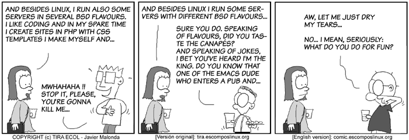
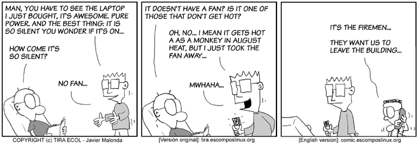
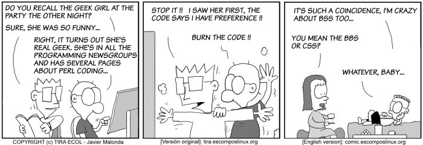

...making Linux just a little more fun!
The Mailbag
HELP WANTED : Article Ideas
Submit comments about articles, or articles themselves (after reading our guidelines) to The Editors of Linux Gazette, and technical answers and tips about Linux to The Answer Gang.
 xine problem?
xine problem?
Mon, 08 Dec 2003 13:07:24 +0530
Vinod Tirur (
v.vinodkumar from licindia.com)
Hello,
I am using RH8 linux and successfully installed xine for video play.
Video cds(.dat format) are functioning well with xine. But I cannot play the video files (in
.dat format) copied to hard disk. The following errors shows on 'xine /home/temp/AVSEQ14.DAT'
-xine engine error
There is no available demuxer plugin to handle /home/temp/AVSEQ14.DAT.
Kindly note that same file on VCD play well in my system in xine.
Please advise me.
VINOD
NT server refused connection while trying to make backup from Linux Server
Fri, 12 Dec 2003 17:29:29 +0100
Imarhiagbe Maxwell (
MIM from iris.ch)
Hi
I have tried several times to backup my new Linux server into an existing
Windows NT server but each time I tried the connection is often refused. I
install the webadmin which makes it much easier but the same problem happens
I tried with the command below from the option in webadmin:
- smbclient //zeus/home/remote/Abacus/Abac -A samba-domain-pw -D trans >dump.tar
- smbclient //terabyte_server/e
- rdump -0u -f server: /dev/nst0 /dump
*where server = name of NT server and /dump a directory in NT server
Etc, all same stories.
Could you please advice me what to do as the Linux and NT Server are of same
domain and with possible solution.
Thanks for your help.
Maxwell
newsfeeds for linuxgazette?
Wed, 10 Dec 2003 16:39:02 -0500
macewan (
macewan from macewan.org)
Forwarded from the mirrors@ mailbox.
-- Ben
rdf's? will you be using rdf formatted xml feeds at any time?
Cheers,
macewan
http://www.macewan.org
There's an RSS feed at http://linuxgazette.net/lg.rss
Every time I try to wrap my head around RDF, my brain ends up screaming
in frustration. Dictionaries with 2-dimensional keys, XML namespaces up
the gazoo, etc. If you can provide a _simple_ description of the format
this particular RDF file requires, and what it does that RSS doesn't do,
we can provide the feed.
-- Mike
GENERAL MAIL
Response to your Defectors article...
Thu, 11 Dec 2003 18:25:39 -0800 (PST)
Dave Bechtel (
kingneutron from yahoo.com)
Re: http://linuxgazette.net/issue97/defectors2.html by Tom
Brown
In Windows, each user has an entry in the Documents and Settings
directory on the "C" drive.
In Windows XP, I know this is true; however, it is not true for
Win98 or previous versions. Dunno about 2000 or ME, don't have
experience with those.
Never login as root (the Linux equivalent of the Administrator in
Windows)! Always login as yourself and use the "su" command to give
yourself root privileges for specific commands.
I login as root all the time, and have only once trashed a
filesystem (typed /dev/hda when I meant /dev/fd0.) You shouldn't do
everything as root, but I do a lot of system maint every time I'm
using linux, and it's just easier than typing sudo all the time. The
biggest concern seems to be file deletion, which is easily abrogated
by ONLY using 'mc' to delete files.
Better advice might be something like: "Do all your normal tasks -
web browsing, listening to music, playing movies, word processing,
etc - as a non-root user, and use root for system config and
maintenance. DO NOT run a GUI for very long as root, it increases
the chance of destabilizing the system. Wherever possible, use
command-line or ncurses-based tools (like mc) when running as root."
/sbin: Programs and scripts used by system itself, and by users to
administer the system.
You may want to add: "Statically compiled / Standalone binaries
that don't depend on external libraries to run. In other words,
critical Programs that can be run even when certain filesystems (like
/usr, if it's mounted on a separate partition) are unavailable."
That may be a bit technical tho.
/dev: Each "file" inside this directory represents a hardware
device on the computer.
The /dev dir is full of stuff that doesn't necessarily exist on
your machine, however. They put it all in there up front so the
device file doesn't have to be created later if you plug one in.
(New users might be confused if the do ' ls /dev -l ' and expect all
those devices to really exist.)
Side note: Did you ever fix the 1GB memory and Promise problems?
Recompiling the latest 2.4 kernel might give you some new options.
Aside from that, I have to pass ' mem=511M ' on my 512MB AMD Duron
box when booting Knoppix. Hdinstalled systems are fine w/o it. With
the Promise controller you might be able to pass an "ide=" parm, or
it may have a native Linux driver by now.
At the risk of offending everybody, vi.
Personally, I use jstar.
 It's provided by the "joe" package.
All the common/major distros supply it (it's even in Mepis now, after
I tweaked Warren's arm.)
It's provided by the "joe" package.
All the common/major distros supply it (it's even in Mepis now, after
I tweaked Warren's arm.)
Anyone who finds a console mode editor that resembles the interface
of older DOS' EDIT.EXE command is welcome to send in a 2 Cent Tip.
-- Heather
You can't just eject the CD-ROM as you do in Windows. You have to
unmount it first.
That directly depends on whether you have a file open from the disc; the
hardware will be advised to resist the user pressing the button if
you're running a program or reading a file from it at the time. The
noticeable difference is that looking at its directories in Explorer
isn't holding the filesystem locked open.
-- Heather
FYI, if you type 'eject /dev/blah' at a command prompt it will
umount it for you. (Depending on fstab permissions, you might have
to root-run it tho.) See 'man eject'. One of the caveats for
unmounting is that no-one's current directory can be the intended
ejection point (if your $PWD is /mnt/cdrom and you try to eject it,
it'll probably fail. CD to another directory 1st. If eject still
fails, do 'lsof|grep $mountpoint' and see who's holding it up.)
If you haven't already, I suggest you try the following:
-
Knoppix bootable and installable Live-CD (Debian):
- ftp://ftp.uni-kl.de/pub/linux/knoppix
BitTorrent download:
http://torrent.unix-ag.uni-kl.de:6969/
-
Support forum:
- http://www.knoppix.net/forum/viewforum.php?f=1&topicdays=0&start=0
-
The Next Big Thing in bootable Linux Live-CD's (we need beta testers!):
- http://www.mepis.org
-
My Linuxtips page:
- http://wolfrdr.tripod.com/linuxtips.html
BTW, thanks for supporting and contributing to the "new" LG.net.
Avoid the .com.
=====
Contents above ThisLine (C)ThisYear KingNeutron Ltd.
===== Check out KNOPPIX Debian/Linux 700MB Live CD:
===== http://www.knopper.net/knoppix/index-old-en.html
Normally I trim out sig blocks entirely, but leaving that in seems the
right thing to do... I've made the logical assumption that he wants the
world to see his note, but folks, if you have copyright notes, please
clarify our permission to publish your words (with or without your name
attached, etc.)
-- Heather
Thankyou for your efforts
Tue, 2 Dec 2003 00:01:45 -0800
Adam Kosmin (
akosmin from nyc.rr.com)
Hello Heather,
I just wanted to send you a very sincere bit of thanks for your efforts
in resisting the "CMSment" of LG. While I know that there are obviously
many others who contributed to the cause, your name was mentioned to me
just the other night by a friend here in NYC and from that news, I got
the impression that you really drove the campaign. I am actually in the
middle of reading this month's issue and love your statement regarding
the CMS proposal:
"I think it's a solution to a problem we don't actually have, and "yet
another slashdot" is not a unique magazine on the scene."
Yeah, I figured Slashdot's a great thing, but somebody else already does
that...
I can't say I was the most annoyed about it, but I was probably one of
the clearest in saying what I didn't like.
I could not agree more! Thankyou once again and keep up the great work.
I hope you'll extend my gratitude to the other members of the team who
helped save this incredible resource
I certainly shall! If you're inclined to do so yourself before I get to
bouncing a copy that way, you can send mail to tag@lists.linuxgazette.net, and
you'll reach the current Answer Gang.
All the best,
Adam Kosmin
WindowsRefund.net
--
# chown -R linux.GNU world
Top notch.
Thu, 27 Nov 2003 22:32:03 +0000
Dean (
dean.wilson3 from virgin.net)
Just wanted to say that Linux Gazette has been an excellent read since i
stumbled on it a good three years ago. You guys do an excellent job and
deserve kudos.
Good luck dealing with SSC.
Dean
[Thomas]
Thanks, Dean, and thank you to all the other readers who have sent in
their kind regards and thoughts over this. On behalf of all of us at LG,
we are delighted.
There were far too many letters of this sort for us to dream of
publishing them all. Just so you know.
-- Heather
new look LG rocks
Sun, 07 Dec 2003 14:14:57 +0530
Raj Shekhar (
rajshekhar from hotpop.com)
Hello TAG!
I was reading through the new issue of LG and it is really nicely done.
The new look is very pleasing and IMHO an example of a well balanced
design.
My congratulations to Tougher, Mike and Ben.
Regards
Raj Shekhar
Strict or not strict editing
Sun, 07 Dec 2003 18:13:58 +0100
Thomas Kappler (
thomas.kappler from stud.uni-karlsruhe.de)
Hello Linux Gazette!
From the Mailbag of issue 97:
If you think LG is too strict -- or not strict enough -- in its
article selection, please let us know.
Please don't make it less strict! It is right at the moment, sometimes
even not strict enough. Perhaps you would like to read a few thoughts
about this.
What I like very much about the Linux Gazette is that it is a "real
magazine" online, not like a news site that gathers seemingly random
bits of information. There is a given time each week when it will be
published, the structure is always the same etc. Another element of that
"magazine feel" is of course the quality of the articles. Please keep up
that up strictly, it is a crucial element of the success you have so
far. A new issue is something that people look forward to. They won't do
that if a new issue means they have to scan the articles first to find
the mediocre ones.
I don't think you have to worry about information kind of "getting lost"
when you reject articles. Linux has gone beyond the crititical mass
concerning representation and information availability on the net. In
fact, I believe it has gone so far beyond that critical mass that it is
an important function of an edited magazine to help its readers sort out
the good writings out of the vast amount there is available. This is
exactly what strict editing does.
Keep up the great work,
Thomas Kappler
Thanks for the support.
Of course, LG is a monthly publication, not weekly. We've sometimes
done it twice a month, and in the mythical future we'd like to see it
published twice a month regularly, but that's not in the cards now.
-Mike Orr (aka. Sluggo)
Yes, that was just a mistake.
Better monthly with high quality than twice a month, but not as good.
And of course we want you to stay motivated rather than tired
GAZETTE MATTERS
A modest proposal
Thu, 18 Dec 2003 20:05:57 -0800
Felix Finch (
felix from crowfix.com)
Original letter copied to webmasters at both linuxgazette.com
and linuxgazette.net, to our editors, and to Phil Hughes
Seems to me this dispute over who should control the words:
Linux Gazette
is a real muddle. Each side's arguments seem pretty clear. It has
been a monthly magazine for a long long time, and one side wants to
continue that. The other side has supported it for a long long time,
and wants to move into the future.
Both sides apparently have enough audience and crew to keep doing
things their way.
Trimming his original down a bit...
-- Heather
A modest proposal, how about both zine change their name,
one to linux gazette monthly, one to linux gazette online.
If you really want to get anal, make (the original sites)
a CGI which chooses the order of the two links randomly, or a cron
program to switch it every minute, or hour, or day.
Then the contested shorter name can point to a simple page
describing both, and people can bookmark either equally.
Our Gang was kind enough to leave SSC out of the reply stream. They can
read it here like the rest of you.
Gentle readers, you really don't want to hear the heated portions of
the responses, and some scufflings based on a few of the Gang being
active among the editorial staff and so up on rather longer discussions
of the topic. So if you can believe it, this is the summarized form...
Linuxgazette.org presently hosts a "portal" site, amount of connection
with Linux unknown. Also note that the two-letter domains lg.com and
lg.net have nothing to do with either "side" - or linux for that matter;
they have their own owners and no awareness of us that I could find.
Nor does that big electronics company with the L inside a big round G and
a dot for their logo (LG Electronics, believe me they're far bigger than
either group involved here). Any references here to these two "short"
names refer to linuxgazette.com (SSC's site) or linuxgazette.net (our
site) respectively.
-- Heather
[Rick Moen]
Felix, Mr. Hughes has made clear that he regards Linux Gazette
magazine's use of any variation on "Linux Gazette" as a violation of his
(alleged, phony) trademark. We've concluded that the proper way out of
this is to disregard (and disarm as required) the bogus trademark claim,
and just concentrate on publishing the magazine.
Thanks for your good thoughts.
[Mike Orr]
A lower-tech alternative would be each site staying at their current URL
(but modifying their popular name slightly) and linking to the other on
the home page. We have repeatedly been willing to compromise
throughout, but our e-mails are met with either intransigence or
silence. If Phil changes his mind and wants to discuss further
compromises, he knows where our mailbox is.
Robos spoke in favor of such a dualsite idea, assuming Phil goes for it.
A few folks expressed this is... unlikely.
-- Heather
[Jason Creighton]
People working together for years without knowing that they disagreed on
the most basic issue, that of control.
He suggested if such a "description only" site is created it may as well
point at any other linux zines around, too. Which would imho be more of an
almanac, or portal, than a "gazette". Now that could be confusing.
-- Heather
[Tom Brown]
Changing the name (and the web address) twice in so short a time can't
be a good thing. Readers new and old need to find LG, not wander around
looking for it in all the wrong places. A significant PR campaign would
be needed to make it work. That's what makes the original proposal in
this thread attractive: the original site gives people a choice. The
trouble with the proposal is that egos are going to get in the way, no
doubt about it. Get over that hurtle, and you have a reasonable
solution. Of course, any agreement needs to be in writing so nobody has
room to waffle in the future.
Musings among the Gang about conditions under which a name change might
be forced, or acceptable, and likelihood of any of these, snipped.
-- Heather
[Tom Brown]
P.S. If this ever does go to court, maybe we can get Groklaw to cover
our side of it.
[Thomas Adam]
...(SSC) ...re-newed the lease for the domain... and may continue to use
it... (haven't seen commercial effects on SSC's site yet)... just because he
has utilised a CMS engine means nothing. All we have is inferences which one
must be careful not to try and personify into 'evidence'.
[Phil]
Again, we don't object to Phil operating a CMS -- or anything else, really.
[Thomas]
He can do whatever he likes. lg.net is the official LG now.
[Jason]
It would have been nice if it [*exactly* stating what SSC's role was to be]
had been done seven years ago, in the same way that world peace
would be nice.
[Thomas]
It is Christmas afterall
Some tussles over whether verbal contract may or may not apply. Certainly
it doesn't apply to most of us, many of whom have never met Phil, much less
worked for him. Regarding what John Fisk passed on, perhaps; but that was
strongly against becoming commercial in this sense -- he was kind enough to
clarify the
historical perspective
when asked.
-- Heather
[Jason]
...of course it was impossible to know that this
would happen 7 years ago, and I don't blame John Fisk for not demanding
that SSC's role be made clearer. There's simply no way he could have known.
[Mike]
Not only that, but what were Fisk's alternatives? LG was on the verge
of disappearing.
Interesting point, that; when we finally decided to take the zine and keep
running it here, we thought that it was once more in danger of disappearing
forever, at least in magazine format, and in fact, that only pressing within
the space of one month would provide the continuity needed to preserve the
magazine at all.
-- Heather
[Rick]
Phil absolutely did LG a huge and vital favour.
Honestly, I think their understanding about LG's non-commercial nature
was perfectly clear back in 1996. It's just that, come 2003, Phil...
Speculation as to what he was really thinking or his motivation for choosing
to apply trademark to this, snipped.
-- Heather
[Rick]
(As I've mentioned
previously, computer geeks have a dismal record for running screaming
in terror from even laughably unfounded demand letters.)
[Karl-Heinz Herrmann]
Right now I'm all for making it a public issue. That way the new site
and the issue gets some popularity. If LG.net is forced or at some point
thinks its simply wise to move away we've some audience aware of the
switch and it's not starting at a point zero with no known name or
link. Right now the public opinion seems to be with us so we get the
sympathy. If this changes and we come over as the stubborn ones without
a case we should resolve the issue one sided by backing down -- again as
publicly as possible.
[Ben Okopnik]
...although the idea has some appeal. ...As it is, we don't really need to
play that game; we do have a quality 'zine, one that people obviously
want to read, and the mechanism of that continues to work for us steadily,
day in and day out. This is one of the major reasons that it behooves us
... just keep doing what we do... the status quo is our friend ... .
I agree that any name change by us would need to be attended by much
fanfare, parades, dancing girls, and political rallies in all the major
world capitals; however, at this point, I see no good reason for it and
several reasons against it (including the political rallies; all the
baby-kissing gets sticky.)
Ashwin M said he'd stand by what the core decides, but would prefer that
we stick with producing the 'zine...
-- Heather
[Ashwin M]
If Phil is very persistent, just change the name to one that
represents the spirit of the gazette and get on with life. Continue to
deliver quality articles to the public and they won't give a s*** what the
LG is named as.
...I just don't want to see LG.net becoming a
turnoff to the readers in the petty quarrel between LG.com and LG.net.
flamage about what "very persistent" or "petty" means exactly, heavily
doused with Halon... snipped.
-- Heather
[K.-H.]
... lets get back to making LG.net. ... I would consider an ideal settlement
if LG.com goes back to their non-monthly posting style they wanted at first
-- then they could simply link us as a monthly edition and we can link
the good articles on LG.com. Phil then will have his low work,
uneditied, "anybody can post" gazette while we can edit and everybody
oose what to read. Then both could even keep going as Linux
gazette. As far as I can judge Phils reactions I don't have high hopes
he will be agreeable to this, but who knows?
I have already seen calls for a boycott of SSC. That's stupid.
[Rick]
I think I can speak for the entire staff in saying that we agree -- and
have said so in numerous places including... [ SSC's forums ]. [Estimate
regarding changing policy of SSC's version, snipped as speculative.]
It's our policy to do nothing at_all_ injurious to SSC's interests. We
take defensive actions only, and regard SSC as our natural friends and
allies. We heartily encourage others to take the same view.
In reply to Mike's comment that Phil knows how to mail us if he feels
inclined to, Felix noted...
-- Heather
I have had no response either, which is disappointing.
I hope my original email didn't sound like I had the answer to
everything. I have no illusions about knowing more than those who are
right in the middle of it. I was hoping that perhaps a suggestion
from an outsider might be some good to keep both sides talking, since
it was not an idea owned by the other side.
Thanks for not chewing my head off
[Mike]
It was an idea that nobody had proposed yet, so you can take credit for
that.
Rick's for sticking to our guns 'til we turn blue; Ben and I fought for
sticking with our name, and considering how long it took TLDP to decide what
to do and continue to carry the magazine at all (which it is
now doing), I'm for staying here for
the long haul. A few expressed support for working with him much more happily
if he stops claiming that his CMS is a magazine but supports one as a
CMS is inclined to behave - crosslinking named threads there, etc. -
possibly contingent on him renaming his site. Among the gang overall,
desire to change our name for good was expressed in the form of an "if"
plus some suggestions as to what names; as far as I can tell that means as
a group, we'll do what we have to do... but right now, that's simply
continuing to have the same great magazine at this site, linuxgazette.net.
We've gotten a lot of reader letters regarding the topic of our name and
whatever its legal status might be, this month. Too many to publish, but
we don't mind. Thanks, everyone, for your support - and for your barbs,
your thoughts, and suggestions. Especially, thanks to those who sought us
out through the twists and turns of the changeover and were happy to find
us again. That'll be a lot easier now that TLDP.org points at both sites.
As for the heat that resulted among the Answer Gang...
-- Heather
[K.-H.]
*I'm* doing what I wanted and
volunteered to do: wait for interesting questions on TAG and try to help
people having more fun with linux -- I'm done with politics, feel free
to decide whatever you want.
The editor gal considers putting up a sign in the TAG lounge stating "no
fighting" -- but that would ruin the lighthearted banter we often see
between Ben's dark glasses and the lot. Various other signs are considered,
but how about the old standby:
"Making Linux just a little more fun."
Thanks, Karl, for I think you hit the nail on the head neatly. Shame
the thing fell on the floor during that tussle over names. Maybe it'll
stay nailed up this time.
For those of you who chimed in - heated or not - thank you for the
encouragement, and your opinions, and for sticking around past any of
the opinions you didn't like. We're not here because we're all the
same; we're here because we all like Linux, but that covers quite a
world of choices... and, for the most part, the fact that we'll have to
make a few. Hopefully the kindest for a maximum number of people.
Happy New Year, everyone.
-- Heather
Linux Gazette
Wed, 10 Dec 2003 09:30:08 -0500
John M. Fisk, N.D. (
jf235 from email.med.yale.edu)
Question by Rick Moen (rick from linuxmafia.com)
Hi Rick, thanks for writing. I'll try to address your questions below.
Dear Dr. Fisk:
You've probably been too busy with real life to notice, but we at
Linux Gazette magazine have been having some problems of late. To
make a long story short, because SSC announced intentions in 3Q 2003
to effectively kill Linux Gazette by transforming it into a
Slashdot-style Web discussion forum, and for several other reasons,
the couple of dozen editors and staff unanimously voted to move the
magazine away from SSC, to http://linuxgazette.net .
Phil Hughes at SSC, Inc. has unfortunately been extremely vindictive
about this, and is retroactively asserting commercial trademark over our
magazine's name, and based on that is attempting to seize our Internet
domain.
It would help us a great deal if you could confirm our understanding
of your intentions in August 1996. Based on your wording in issue #8,
we believe your understanding was that SSC would continue to operate
Linux Gazette as a free, entirely non-commercial magazine alongside
its commercial offering, Linux Journal. Can you confirm this?
This is correct.
Bear with me for a moment and I'll try to provide a bit of background. I had
started the Linux Gazette in early 1995, essentially as a means of learning
HTML and to provide an educational/entertaining resource for other Linux
enthusiasts. I had spent a bit of time lurking around various Linux related
USENET groups and found that although there was a good deal of useful
information there, the signal to noise ratio at times dipped pretty low.
I had no access to the internet, other than a 2400 baud dial up connection to
the Vanderbilt University VAX machine. A physics grad student, Tim, offered
to host it on a site that he was running, and that's where the LG got its
start. Throughout the early life the LG, I was always beholden to others to
the host the content.
My stated intention at that time was to start a monthly online magazine with a
variety of article formats: in-depth articles, short tips-and-tricks, email
correspondance, etc. It was always intended to be open (in the sense of open
to all contributors), free (in the sense of beer AND speech), non-commercial,
and "moderated" only in the sense that no flames or derogatory material were
going to be allowed. At the time, the Linux community was pretty small
(Patrick V. was just getting Slackware well established and Marc Ewing, Erik
Troan, and Donny Barnes were gearing up for RedHat!) and collegial.
It was an almost instant success in terms of community interest and took very
little time for several regular contributors to come forward and offer to
provide monthly articles of good quality. Within a year, I was getting
overwhelmed trying to provide the time to get new editions of the Linux
Gazette ready and sent out to the various hosting sites.
In 1996, I received an unexpected call from Phil Hughes at SSC with an offer
to take over the management of the Linux Gazette. He mentioned that he had
the personnel to handle the editing and distribution aspects and that he would
continue to make it available as it had been started - open, free, and
non-commercial.
Phil was very pleasant and we entered into a "gentleman's agreement" that he
would take over management of the Linux Gazette and I would be able to retire
gracefully and continue to contribute as time allowed (which clearly, it has
not...) No money was exchanged during this transaction and no documentation
was created or signed -- we simply had an mutual verbal agreement.
They were good to their word and Marjorie Richardson did a wonderful job of
handling the early efforts of keeping the LG going. On my part, I returned to
residency in Pathology at Yale and am currently completing a fellowship in
Transfusion Medicine. I was delighted to have someone interested in the LG
and have greatly appreciated their years of dedication to it.
Can you also confirm that you made no agreement with SSC, Inc. to
assign them any trademark?
That is correct: the verbal agreement that Phil Hughes and I entered into was
that the Linux Gazette would continue as it had been started, the only change
being that SSC would take over the day-to-day management of it.
I will stress that we bear absolutely no ill will towards SSC, Inc. or
towards Mr. Hughes. We wish only to prevent his use of belated
trademark claims to harrass the Gazette, after its departure from his
site.
I'm deeply sorry to hear of this situation. Phil was a godsend and I
appreciate his efforts in keeping the LG going. I will demur on comment as to
whether moving to a "Slashdot Style" format is A Good Thing(tm) or not -- it
certainly was not my original intention.
It's unfortunate that a complementary solution could not be amiably arrived
at: a "two-site" Linux Gazette, as crazy as that sounds, wouldn't be entirely
a bad idea. As long as the two sites linked to each other, I could envision
having a Slashdot style site with daily chatter and such, and an ongoing
monthly online magazine as a complementary site for more currated content.
Just a thought...
(The situation is admittedly somewhat more confused than that, but I
was going to omit the gory details.)
Again, sorry to hear about this mess. I hope that it can be resolved in an
amiable fashion and that the community will support, rather than split from,
whatever is decided.
I wish you the best. The grace and wisdom of God be with you.
cheers,
John
--
John M Fisk, M.D.
Transfusion Medicine Fellow, Department of Laboratory Medicine
Yale University School of Medicine, New Haven, CT
For Rob and Thomas
Tue Dec 30 01:22:38 2003 -0800
Heather Stern (
Linux Gazette Technical Editor)
Rob Tougher's family lost a good friend and companion this week; he would
have helped us more this issue but for this. He's already done great by
helping us with stylesheet improvements. Netscape and Phoenix users
should have a better chance at reading LG now.
Thomas Adam, our Weekend Mechanic, has also been helping me out with
preparing TAG; I'm sorry we didn't have an Answer Gang or Tips last
month, for I was going to be out of town and could only prepare Mailbag.
Thomas cheerfully offered to fill in for me, but it turns out that he has
been ill for the last few months, and outstretched his poor health -- he
was too ill to complete them in time, though he had hoped better of himself.
He has pitched in such as he could across this month, but many of the Tips
are last month's material. I am pleased to say that he is recovering now,
but it looks like it may take awhile for him to be at his best again; the
staff is encouraging him to take it easy.
Please join us in offering kind thoughts for Rob and Thomas.
This page edited and maintained by the Editors of Linux Gazette
HTML script maintained by Heather Stern of Starshine Technical Services, http://www.starshine.org/
Published in Issue 98 of Linux Gazette, January 2004
More 2 Cent Tips
See also: The Answer Gang's
Knowledge Base
and the LG
Search Engine
 About crypt function in Linux -- Easy Encryption
About crypt function in Linux -- Easy Encryption
Tue, 7 May 2002 15:52:47 -0400
Marko Cehaja (
internut from thetaworld.org)
(with minor editing by Ben Okopnik)
I have many files on my hard disk which are important and need to be
encrypted. Once, I left my computer at a client's location while
working on their database, and they tried to crack into it. They got in
with a SuSE boot disk and installed FTPD so they could grab my files.
The only reason they failed was because they didn't know how to crack a
plain PostgreSQL database (which should be simple when you're logged in
as root). Since then, I don't leave any important data un-encrypted in
order to be ready for such incidents.
Since I often use Midnight Commander, I have automated this by creating
a menu item in its menu file (~/.mc/menu) [ Note: This can also be done
via MC's pull-down menu system - press "F9", select "Command", then
"Menu File edit". ] The following entry will pack the entire current
directory and encrypt the result with GnuPG.
See attached encryptdir-gpg.midnight-commander.txt
I've also added an entry for single file encryption:
See attached encrypt1file-gpg.midnight-commander.txt
What if the files are already encrypted? In order to save some time, I
have put following into the extension file located at ~/.mc/bindings
[ Note: 'F9', "Command", "Extension File edit" via the pull-down menu. ]
See attached view-gpg.midnight-commander.txt
Now, when you press F3 (view) on the file with extension *.gpg, it asks
you for the passphrase and shows the contents of the file. Beware,
however: if you are on the network or on a multi-user system, your
memory and swap file (which contain the decrypted text) could be exposed
to attackers.
One good use for this is to put all your passwords into a single file,
and simply remember one passphrase. Be sure to remove the original plain
text files with "wipe" or "shred" rather than "rm" to delete data in a
secure manner.
Adding PHP to apache on Redhat 9.0
Sun, 30 Nov 2003 16:45:31 +0200
Raj (
The
LG
Answer Gang)
Question by Francis Matsika (fmatsika from zdb.co.zw)
I have just installed redhat 9.0 and i am wondering how to configure or
build php
as an apache module
I installed apache and php using rpm's that come with redhat 9.0
[Raj]
If you used RPMs it has already been installed. Create a file in your
/var/www/html/ directory (say self.php), and put this lines into it
<?
phpinfo()
?>
Point your browser to it, (usually by saying http://127.0.0.1/self.php
in your browser) and you will have everything you never wanted to know
about your PHP module in front of your eyes.
[Thomas]
You miss the point completely here. The question was not "how can I test
php"; it was "how can I get apache to utilise it". The answer to that
question is that the RPMs should have already sorted that out for you,
Francis. You'll just have to enure that you:
apachectl restart
[Raj]
Just another example why speed reading is bad for health
. Francis, as
Thomas pointed out, if you have used RPMs for installation, then
everything has already been taken care of. However, if you want to be
sure that good old rpm has not cheated you out what is rightfully yours,
then check for the following files.
The main workhorse for translating the php code into html:
/etc/httpd/modules/libphp4.so
The file which controls how PHP behaves while interpreting php files:
/etc/httpd/conf.d/php.conf
Controls quite a few other PHP features, like security, language options etc. Very well commented:
/etc/php.ini
automatic backup in debian
Sat, 06 Dec 2003 13:53:41 +0530
Thomas Adam (
The LG Weekend Mechanic)
I am a newbie debian user (switched from RH).
I have faced a strange prob. in woody. whenever I modified any file the
previous contents is backedup with a *~* sign and the modified one is saved
with the actual name. like *test.kwd* will be *test.kwd* after modification,
but there will be an extra *test.kwd~* also.
plz suggest me how to stop the generation of this second back-up file.
thanks in advanced
[Thomas]
Well, yet again Joydeep, I am being poisoned with LOIS (Lack Of
Information Syndrome) --
I am going to make an intelligent guess and assume that you are using vi (or in your case vim).
Vim will save backup files, using the caret (~) notation. You can add
the following to your ~/.vimrc file:
:set nobackup
to disable it (in the configuration file the leading ':' is optional).
Of course, if you are not using vi[m] then that means we need to find an
alternative solution -- something drastic I think, like:
cd / && find . -name '*~' -exec rm -f {} \;
You can then add this as a cron entry to run say every 20 minutes?
0-59/20 * * * * some_user cd / && find . -name '*~' -exec rm -f {} \;
Bash Scripting
Sat, 7 Jun 2003 11:45:35 -0400
Faber Fedor (
The
LG
Answer Gang)
Question by Robin Chhetri (robinchhetri from fastmail.fm)
Hi Gang,
I asked another question around one month ago and even though I could not
come up with a answer I decided to come up here again.(Incidentally I
tried it also in linuxquestions.org).
What would be the equivalent to the zsh script given below in bash
$echo ${${(z) $(whereis libcrypto)}[2]}
if the output of $(whereis libcrypto) is
libcrypto: libcrypto.so libcryto.a
it returns libcrypto.so only.
Now I could come up with
$robin=($(whereis libcrypto)); echo ${robin[1]}
But can it be done in one go using some construct?
I am not a shell guru so I wonder if it can be done!
[Faber]
I must be missing something. If you simply want to print to STDOUT,
try this:
$( whereis libcrypto | awk '{print $3}' )
which will print to STDOUT. If you simply must put it into a variable, then:
$robin=$(whereis libcrypto | awk '{print $3}') ; echo $robin
is the shortest way I know of, but that isn't saying much.
I need help, PLEASE!
31 May 2003 08:43:04 +0530
supreet (
supreet from linux-delhi.org)
With comments by Heather Stern (the Answer Gang's Editor Gal)
Well if you need dos boot disks. visit www.bootdisk.com.
It has nice pointers to many flavors of boot or install disks for the
various mswin, a notable floppy-linux or two, and the correct HOWTO out
of TLDP for finding the major distros' floppy images.
-- Heather
Debian's first installer CD can allow access to a prompt, as can several
other distros.
Expect to need to press ALT-CTRL-F2 or another F key to
leave the curses or GUI installer page and find a shell, then poke
around mounting up your partition and chroot'ing in.
Some even allow starting a "rescue shell" tho beware this claimed
feature does not work in all red hat flavors.
-- Heather
Then you can load your boot-loader.
Supreet
Help (Networking)
Wed, 9 Jul 2003 13:49:25 +0100 (BST)
Thomas Adam (
The LG Weekend Mechanic)
Question by sivagnanam munusamy (searchsiva from rediffmail.com)
hello sir,
i am sivagnanam and i completed B.E.,(Computer science)in
University of Madras at tamilnadu in India.
i did some projects in Linux platform. i would like to know
about GRUB loader details ,NFS and DHCP.
please help me.
with regards,
sivagnanam
Hello Sivgananam,
I've forwarded this reply to the Linux Gazette...
You have supplied me with VERY little information to go on, but I will try
and help you...
GRUB (GRand Unified Bootloader), is a GNU bootloader. It offers an
interactive shell in which to configure it. I actually dislike GRUB
immensly and prefer the defacto "LILO" loader, although many distributions
now use GRUB as their default, alas.
The FAQ can be found here:
http://www.gnu.org/software/grub/#TOCfaq
I find the config file confusing, and terse (cf: "man tar" - perhaps the
heaviest man page of them all).
NFS is Network FileSystem, and I use this extensively via PLIP (which is a
Paralell Line IP), which allows you to mount another computer's FS over a
network.
DHCP is a means of automagically having a machine assigned an IP address.
All of these can be found in the LG KB, at:
http://www.linuxgazette.net/tag/kb.html
-- Thomas Adam
By far the most popular reason, in my opinion, is that GRUB takes nice
high resolution pictures, while LILO only handles cruddy resolution of
640x480. Which probably means that its graphics work on more systems,
but gosh, it'd be nice to have the option. If the code costs too much
space though... maybe grub is bigger.
-- Heather
Linux Hotplug for Dummies
Mon, 12 May 2003 18:57:17 -0400
Robos (
the LG Answer Gang)
Question by dokhebi (dokhebi from earthlink.net)
I've tried reading all of the documentation for Linux Hotplug that I can
find, and none of it seems to answer my questions; A lot of it referes
to other documentation that goes off the main topic, and there is nothing that
describes the format of the usb *mapfiles, or how to set up the
auto-mounting of a specific device (in my case a SanDisk Cruzer) What
I really want is a step-by-step configuration guide or a "Linux Hotplug for
Dummies" type of book
Thanks,
Edward Hooper
Well, can't give you that but you reminded me that I wanted to look into
this myself. Here is what I've found so far:
If you plug something into the usb port (that is what most of the time
hotplug is for, in the future firewire and maybe pci hotplug will also come
into the game) the kernel does something and then something else does
something (in the flux, 2.5 is different than 2.4 and I really didn't get it
since it didn't interest me) and then hotplug comes into the game. There are
config files under /etc/hotplug (at least thats the place with debian):
usbusb.distmap, usb.rc, usb.agent and usb.handmap.
usb.agent and usb.rc are for hotplug itself and the interesting parts are
distmap and handmap. Dunno for sure what handmap is for (devices where
modprobe doesn't know what to do?), but in distmap are the devices and their
name equivalents in the form idVendor idProduct and so forth. I have a usb
memory stick which gets handled like this:
scsi emulation needs to be there (sd_mod)
usb-core needs to be there (obviously)
usb-storage needs to be loaded (since the stick is storage)
and maybe the right fs modules like vfat, msdos or whatever
then the thing gets mounted like this
mount -t auto /dev/sda1 /mnt/usbstick
OK, now to put this into the scripts hotplug can handle:
I searched google and found some german LUG that had written some scripts
already. I adapted this for my use. Here it is.
Save the file as /etc/hotplug/usb/usb-storage:
See attached usb-storage.sh.txt
Now for a little (newbie-ish) explanation. The set >> thing writes the
variables that get set by the kernel thingy to /tmp/usb-storage-variables.
Take a look into that,
PRODUCT=c76/5/100
and
ACTION=add
are important and maybe
DEVFS=/proc/bus/usb
DEVICE=/proc/bus/usb/001/007
too.
The echo marks simply where one insert ends and the next starts.
If the variable ACTION is add the next case is triggered which checks if the
product id is c76/5/100. This is my usbstick. Since I want to have this
script also for my girlfriends stick I need to destinguish between them.
If it is my stick ($PRODUCT is c76/5/100) then it gets mounted.
If you unplug it the script should be run again if I understand it
correctly, but this doesn't seem to happen. ACTION=remove never appears.
I want to make it like this later on: a usb-hub connected to our server (in
my apartment-sharing community) where you plug in your usb stick upon
entrance. Then this gets mounted and the other computer you turn on mounts
that from the server and loads e.g. mozillas bookmarks from the stick. If
you trigger a serial mouse button (very handy that they have 3 buttons
mostly - 3 ppl in the community) the corresponding usb stick should then get
unmounted and you can leave the house.
Not a book Edward, but I hope sufficient for the beginning.
Cheers
Robos
He did write me this back. I keep it in the TAG for now, maybe someone knows
something here (although I think most of the ppl here rather like doing
things by hand)
Quote Edward:
I've been able to scope this much out, but I don't like the idea of hard
coding the device (/dev/sda1) because I can't be sure that it will
always be that device. What if this is the second usb-storage device I
plug in? What if I decide to add more SCSI devices (my main system has
an Adaptec AHA-2940UW with 7 devices already) and I don't change the
script? Is there a way to get the device node from the known info? In
other words, is it encoded in /proc/bus/usb/xxx/yyy and I can extract
it?
Well, it says in the docs (linux-hotplug.sf.net or something) that device
info (in $DEVICE) is in 2.5....
Now that 2.6 has released, The Wonderful World of Linux 2.6 in this issue
mentions how hotplug has been improved.
-- Heather
I think the /proc/ stuff can be used for assigning to the right device,
but sort of hard to do with only one stick. Later my flat mate comes back
and I can test with his stick too, then I can tell you more.
I don't want to say this, but for all of Microsofts many faults, they
can at least auto mount without having to go through all of this shit.
I think it's time for the kernal hackers to wake up and smell the
coffee, because Linux will not be ready for the desktop until it can do
want M$ can do, but better, faster, and cheaper.
If you rely on the kernel hackers there you are sort of lost. They are
already having fun hacking the kernel, they don't need anything more. And
this is no longer a kernel-space thing: the kernel informs you already where
and what (if we think /proc is the right thing) but there are simply not the
userspace tools. The usb-stick phenomenon is just coming up really fast
right now ...
Actually, this tip escaped proper mention a few months ago, and I dug it
out of storage. However it seems he is correct; flash chips, memory
sticks, and "thumb drives" have become amazingly popular.
-- Heather
...and up to now this wasn't necessary. As for scsi hotplug, this is
simply rare.
I will mail later if I figured something out.
Cheers
Robos
Thanks for the info so far,
Edward Hooper
Covert HTML attachments to PDF at mail server
Wed, 03 Dec 2003 16:54:38 +0800
Thomas Adam (
The
LG Weekend Mechanic)
Question by Steven Lockhart (linuxoz from yahoo.com.au)
For security reasons I would like to convert all incoming mail
attachments from htm/html to pdf.
( a procmail, ghostscript, ripmime, altermime ) or whatever it takes
solution.
I am sure a lot off mail server sysops would love to do this.
Any ideas would be appreciated
[Thomas]
For security reasons (and sanity reasons for that matter), you should
really be sending all MIME-encoded e-mail to /dev/null. It is more likely
that if you were to do a conversion that you'd only be translating spam
into Yet Another Medium (tm), so why bother?
Doesn't mean we won't answer him, mind you. I chime in here to warn
that just because HTML to PDF tranlators currently ditch javascript bugs
and various browser-bug exploits, that someday the PDF internal
scripting language may grow fancy enough to do some pretty strange
things. Luckily at the moment, PDF's a pretty nice "destination = paper"
kind of format.
-- Heather
[Thomas]
Yep -- again this depends on which filtering tool you would like to use.
Personally, I find procmail the easiest, but that might not necessarily
suit your needs.
I am sure a lot off mail server sysops would love to do this.
Nope, not me. Here's one possible solution (note: not tested).
# Is it html?
:0:
* ^Content-Type:.*html
| html2pdf /some_location/yum.pdf
Probably you want to use some tricks to create a reasonable filename
that won't be overwritten constantly (if there's only one, message ID
ought to do, with .pdf tacked on the end) and you might need to use a
MIME decoder to pull off the portion which is the actual HTML portion.
After that, the trick should be usable for other "readable" attachment
types you feel like converting for sanity, e.g. quoted-printable to
your local character set, etc. You'll need to handle each file format
seperately, unless you have a converter that's smart enough to figure
out the filetype on its own.
-- Heather
Securing a dial in?
Sat, 28 Jun 2003 22:15:44 -0500 (COT)
John Karns (
the LG Answer Gang)
Question by George Morgan (George_Morgan from sra.com)
Hello answer guy,
I need to be able to secure an external modem that has been connect to a
Solaris box to protect against unauthorized calls.. What I mean is that I
want to be able to allow people to connect to the box based purely on the
phone number they are calling from. Is there a way on the modem to only
allow certain calls to go through while rejecting all other calls?
See the "mgetty" open source pkg (http://alpha.greenie.net/mgetty).
It offers this capability, provided that your modem line has caller id.
The pkg includes pretty good documentation as well as good example cfg
files.
linux printing
Mon, 15 Dec 2003 01:22:56 -0800 (PST)
Heather Stern (
The
Answer Gang's Editor Gal)
sanjoy patra (
sanjoy_cal from yahoo.com)
i have one redhat 8.0 linux server and hp1200 laser
printer is attached with this.i want print from other
linux box on same network.printer is printing from
server ok and also it is printing from windows m/c on
same lan but it is not printing from any linux box
[Heather]
First thing, thanks for writing to The Answer Gang.
Secondly, you may not be aware of the resource, but there's this great
site about printing support for Linux called linuxprinting.org. You've
gotten you printer working for at least a couple of machines though, so
perhaps you've already been by there. If not, check it out
So that leaves the nitty gritty good stuff. I'm guessing the topology
is like this, but if it's different, please describe how things are
really connected:
printer[hp1200] ==/parallel/== RH8 --------- other linux boxes
samba
|
windows box
Usually in order to be a printer client, Linux boxes have to be running
something small to make the connection. lpr with their only printer
pointed at the big RH box as a remote printer, for example.
rlpr might be a fast thing to try on one of them.
Please advise if you're using CUPS or lprng. While the general answer
(make sure the clients know who the printer is and have the protocol
loaded) is the same, the details of the answer are quite different. And
the docs at linuxprinting.org
may be handy indeed.
Loads of Linux Links
Mon, 29 Dec 2003 11:41:25 -0800 (PST)
Barbara E. Irwin (
beirwin from shaw.ca)
I am one of the contributors for the Loads of Linux Links project
(http://loll.sourceforge.net/linux/links/index.html).
FYI, this is a GPLed database of 4000+ subject-classified, searchable, and
important Linux and Open Source links for all levels of Linux users. It was
originally a project started for the Victoria Linux Users' Group and is now
hosted by SourceForge.
Barbara
How can you find the correct /dev/hd?? for the C: drive
Thu, 04 Dec 2003 17:18:39 -0500
Neil Youngman (
The
LG Answer Gang)
Question by Michael Brusnahan (michael from commsoftware.net)
Hello
The install for mulinux cannot find the download files.
After the boot command there is a message about /dev/hda?. My pc has
two hard drives with 4 drive letters C, D, E, F
C, E, F are 2 gig partitions on 1 drive
D is a 4 gig drive
The boot command cannot find the C:\mulinux directory with the install
files. It seems the C drive is not /dev/hda1. I have tried hda2, hdb1,
hdb2 etc.
Would you know how I can find out the correct /dev/hd?? for the PC?
Thanks
--
mb
[Neil]
Normally it would be /dev/hda1, however if it is a scsi disk, it could
be /dev/sda1.
-
You may also find an answer at
- http://www.tux.org/pub/distributions/tinylinux/mulinux/faq/faq.html
We don't have enough information to give a really helpful answer, see
http://linuxgazette.net/tag/ask-the-gang.html for hints on how to help
us help you.
Combining multiple PDFs into one
Thu, 5 Jun 2003 21:41:52 -0600
Jason Creighton (
The
LG Answer Gang)
#convert ps files to a pdf file
system $GS, $GS_ARGS, $filelist
and die "Problem combining files!\n";
This did not work no way, no how. I kept getting "/undefinedfilename"
from GS no matter how I quoted it (and I used every method I found in
the Perl Bookshelf).
Hm. I didn't try it, but -
perl -we'$a="ls"; $b="-l"; $c="Docs"; system $a, $b, $c and die "Fooey!\n"'
That works fine. I wonder what "gs"s hangup was. Oh, well - you got it
going, anyway. I guess there's not much of a security issue in handing
it to "sh -c" instead of execvp()ing it in this case: the perms will
take care of all that.
The problem is probably that $GS_ARGS and $filelist are both strings with
multiple arguments in them: Since you're calling system() with more that one
arg, (bypassing /bin/sh) splitting the command line into words is your
responsibility.
Oh, duh. Thanks, Jason; my brain musta been out on loan that day.
You're right, of course.
# Convert string to list - TMTOWTDI, of course...
@a = split / /, "$GS -whatever -long -argument -string -follows";
system @a and die "Famine, sword, and fire! - $?\n";
If this isn't quite clear, some help from a handy script might
work:
#! /usr/bin/env ruby
puts ARGV.inspect
(Actually, I could have witten this as "p ARGV", with does the same thing that
I wrote here.)
Or, for those of you watching at home who haven't installed Ruby yet:
#! /usr/bin/env python
import sys
print sys.argv
Anyway, here's the script in action: (Actually, this isn't either of those
scripts in action: It's a C version I wrote as a programming exercise. But it
does the same thing.)
~$ putargs $(date)
[ "putargs", "Thu", "Jun", "5", "21:23:14", "MDT", "2003" ]
~$ putargs "$(date)"
[ "putargs", "Thu Jun 5 21:23:17 MDT 2003" ]
~$ putargs ls filename with spaces
[ "putargs", "ls", "filename", "with", "spaces" ]
~$ putargs ls 'filename with spaces'
[ "putargs", "ls", "filename with spaces" ]
~$ ls filename with spaces
ls: filename: No such file or directory
ls: with: No such file or directory
ls: spaces: No such file or directory
~$ ls 'filename with spaces'
ls: filename with spaces: No such file or directory
You see? The caller of a program does the splitting. And that means that if
you want to call other programs, you have to do it too, or else your script
will crash if somebody tries to use it on a filename with a character in it
that the shell considers special, like a space or a star, because system()
with one arg is calling /bin/sh behind your back.
So that's the main reason for bypassing /bin/sh: It gives you more flexibility
with filenames: The "security risk" Ben keeps warning everyone about isn't,
IMO, really the issue. It's just good style not to leave that sort of thing to
the shell. Especially if your program is setuid/setgid.
Jason Creighton
what is "no"? (missing prog for binutils compile)
Thu, 29 May 2003 15:53:14 -0700
Faber Fedor, Karl-Heinz Herrmann (
the
LG Answer Gang)
Question by Jim Dennis (the
LG Answer Guy)
with note by Alan Modra (binutils developer)
[K.-H.]
Now -- it's an unbearable situation that my Linux doesn't know "no".... But
I've no idea what it is and you can imagine that a google for "no" even with
linux and some other keywords around are not very helpful.
Any ideas?
[Faber]
Maybe it's called "nein" on your computer? <grvf>
I can't find a "no" on my Red Hat 8 box either.
[JimD]
I think /usr/bin/no was (would be) a counterpart to the old
/usr/bin/yes command:
See attached no.sh.txt
... so "no" could just be an alias or script that calls /usr/bin/yes
with the "no" argument:
/usr/bin/yes no
I realize this sounds silly and stupid, and April 1st is long past for
this year. But I'm not kidding. That Makefile (or whatever) seems to
actually want to pipe an endless stream of "n" or "no" lines into some
other process. (/usr/bin/yes was traditionally used in a pipeline with
fsck to automate the process of repairing a filesystem that need lots
of work -- then they just added the -y option to the GNU/Linux versions
of fsck.
[K.-H.]
I put the question up with bugreports for binutils and got:
[Alan Modra]
/bin/sh: no: command not found
This is a result of binutils being stuck on using old buggy autoconf.
Install a new version of GNU gettext, or configure with --disable-nls.
[K.-H.]
Got a new gettext which includes some "no"'s
khh > find ./ -name "no*"
./gettext-runtime/po/no.po
./gettext-runtime/po/no.gmo
./gettext-tools/po/no.po
./gettext-tools/po/no.gmo
unfortunately with a new gettext (gettext-0.12.1.tar.gz) and nls enabled I
get a linker error for some gettext symbol. The solution without nls works
for getting binutils compiled.
K.-H.
He said he'd try it on the new kernels too, but we're not sure what his
results were.
-- Heather
Odd Behavior When First Launching Netscape Version 4.80
Sat, 7 Jun 2003 15:33:49 -0500
Chris Gianakopoulos (
The
LG Answer Gang)
Hello Gang,
I am now running the SuSE 8.2 Linux distribution on my main system. I
use Netscape 4.80 for browsing my machine (locally) using Apache 1.3.27.
When first launching Netscape, followed by pressing the "Home" button, I
would get a message indicating that a connection was being established to
localhost. I would wait for a long time, cancel the connection attempt,
try connecting to my host name (saturn in this case), and then connect to
local host. Then the connection occurred immediately.
I searched the Web and found that something called asyncronous domain
lookups are automatically enabled in Netscape 4.80 by default. Disabling
this feature fixes my problem. Here is what I did.
edit the file, /usr/X11R6/bin/communicator, and place the following line
in the file:
export MOZILLA_NO_ASYNC_DNS=True
I changed the environment variable in the above file rather than my .bashrc
because I wanted this to take effect systemwide (and via the various tool
buttons associated with my window manager).
So, this might be taken as a 2 cent tip.
Regards,
Chris Gianakopoulos
searching PDFs made from faxes
Tue, 01 Jul 2003 22:25:52 +0200 (CEST)
Karl-Heinz Herrmann (
The
LG Answer Gang)
Is anyone aware of a way to search PDF files that were created from
faxes, e.g. tiff files?
I'm guessing that OCR has to be utilized here, right? I've come across
things like pdftotext, but the fact that the PDF started life as a TIFF
is, I think, a complication.
For the record, I'm putting together a fax server solution for a client.
The ability to search the faxes for text strings would be killer.
your guess is quite right -- if the pdf contains only a large graphic and no
actual text you would need ocr. gocr:
http://jOCR.sourceforge.net
-
or claraocr:
- http://www.claraocr.org
...might come in handy (gocr
seems already trained while clara ocr is a quite different method). gocr
produced reasonable results for me already 1 or 2 years back. BUT: I had
clean 300dpi scans. From a jagged looking Fax..... I guess you are facing
serious problems.
K.-H.
PerlHoo rocks
Thu, 11 Dec 2003 15:07:49 -0800
Rick Moen (
the LG Answer Gang)
Some folks will have noticed me referring people to flat ASCII files
I've squirreled away over the years on my Web server, usually inside
http://linuxmafia.com/~rick/linux-info . While useful, this collection
has always been (1) butt-ugly and (2) disorganised.
I've long realised I needed some sort of proper Web framework for all
that material, and Rob Tougher's work updating the Gazette's HTML showed
me how much improvement the addition of cascading stylesheets (CSS) can
bring with only modest effort[1]. All of these thoughts came together
when I ran across PerlHoo, a Yahoo-like Web directory system implemented
in two simple Perl CGI scripts.
Please see: Description by author Jonathan Eisenzopf <eisen@pobox.com>
in his series of three articles at Mother of Perl,
http://www.webreference.com/perl/tutorial (recommended reading).
PerlHoo is simple, malleable, lightweight, fast (up to some thousands of
documents per directory), and can point to URLs on or off your system.
Its design limitations are:
- No database support. Scaling limited by use of system directory
trees as a data store.
- No searching.
- No multiuser controls or contents versioning / rollback.
If you need those things, there's a follow-on called PHPhoo.
Personally, neither wanted nor needed them, and PerlHoo's exactly right
for my needs.
There were two minor problems with Eisenzopf's design, as I found it
in his most-recent (v. 1.1) tarball:
- Sucky URLs. PerlHoo indexes show up at CGI-synthesised virtual
directory locations, e.g., http://linuxmafia.com/cgi-bin/perlhoo.pl/Apps
for the Apps directory of PerlHoo's document tree. Finding a way to
substitute something shorter for the "cgi-bin/perloo.pl" portion of
those URLs would fix several things at once:
- Simpler, easier-to-remember paths.
- Security-through-obscurity benefit of not advertising your
use of a CGI script that might be attackable.
- Greater Google-friendliness. (Google seems not to index as
enthusiastically trees that give signs of being CGI-generated.)
Fixing this required use of Apache mod_rewrite to make the undesirable
patch element disappear, and a tiny bit of surgery on PerlHoo itself.
- Outdated and somewhat broken HTML. Eisenzopf's CGI-generated
pages lack SGML DTDs, closing "body" and "html" tags, and the required
"ul" pair to go with its use of "li" elements. The page relies upon
setting specific colours by their hexadecimal identities, rather than
using CSS. It also incorrectly used a nested "p" and "h3" structure
to attempt physical markup. I've fixed all of these things, so that
pages generated by perlhoo.pl are now CSS-oriented and pass the W3C
validator as HTML 4.01 Transitional.
Just so other people don't have to reinvent those particular wheels,
I've posted my modified and documented version of PerlHoo at
http://linuxmafia.com/pub/linux/apps/ .
The tarball includes
full instructions on how to configure Apache, including mod_write .
My PerlHoo instance, "Linuxmafia Knowledgebase", can now be found at
http://linuxmafia.com/kb .
To answer the other obvious question: Why, yes, of course I've gotten
Ben Okopnik hooked. I'm no dummy! Ben says he's hacked PerlHoo
separately to support individual stylesheets for each directory of
PerlHoo's index, but I've not yet seen the results.
[1] One difference being that Rob has graphical design talent. I'm
certainly not trying to denigrate Rob's excellent work.
previewing and printing text files
Tue, 17 Jun 2003 20:59:45 -0400
Ben Okopnik (
LG Answer Gang)
There are lots of times when I want to print a text file but don't want
to do it in the Default Ugly Courier font, or want to shrink, say, a
page and a half down to a single page - and word processors are just too
much bother for a simple font/size tweak. Here's a script that lets you
pick font/size combinations until you're satisfied with what you see,
although the fonts are restricted to the AFM types that come with
"enscript" (40 options, more can be added.) I find them to be more than
adequate for my purposes.
See attached preview.bash.txt
Ben Okopnik
If you can scare your OS tell someone who can fix it
Sat, 20 Dec 2003 09:54:00 -0500
Ben Okopnik (
the LG Answer Gang)
Here is a non emergency head scratcher for you.
I was wondering if anyone has any experience with the Sandisk 256mb
USB flash drive and Linux. I got the drive to work once, and ever
since it causes a kernel panic. This is not limited by distributions
or hardware, as I have had it work once on a gateway laptop, then ever
after it would crash any linux machine I plugged it into.
That's pretty impressive, in a bad way.
As you know, it's usually
pretty hard to crash Linux. On the other hand, USB is a special case -
for my money, all of its related problems come from the fact that it
brings user-space uncomfortably close to what was always a root-priv
operation (hardware usage, control over ports, etc.) One of the major
reasons for that separation has always been the security truism of
"physical access equals root access" - and with USB, all our noses are
being rubbed in that lesson. However, everybody seems to desperately
want the stuff, so...
(USB is a nifty technical hack, and serial is way outdated - but
giving the average user the ability to effectively fiddle with the guts
of the machine is Not A Good Idea, IMO. Ditto PCMCIA - and note that
there were a few years when it had pretty much the same problems that
USB is going through now. Surprise, surprise...)
Not that I don't think it's possible to get it right, mind you; it's
just going to take a bit of finer slicing and dicing than (in my
opinion) we've managed so far... USB under Linux is still highly fragile,
although it can mostly be made to work. Note that I'm talking about the
stuff out on the bleeding edge, things that most people don't use: the
more common run of things (printers, mice, keyboards, etc.) is pretty
stable at this point.
However, there are people out there trying to resolve this fragility,
and achieving measurable gains. The important part here is that they
need your help - that is, the help of anyone who runs into a problem
with USB. They particularly (I'm projecting, but with a reasonable
degree of certainty) love to hear from folks like you, who have found
what I call a "reliable problem" - this is the core of what makes Linux
work, and why it is generally as bug-free as it has a reputation for.
You have a problem, notify the maintainers about it, they fix the
problem, you give them feedback - and that problem is gone. Repeat until
the code is washed sparkling-clean, and that chunk of Linux is
bullet-proof.
SO, to wrap up this long-winded expository, please report this
problem to the appropriate maintainer. You can save a bit of time, and
ease their work tremendously, by running "ksymoops" with the copy of
"/var/log/kern.log" that contains the "Oops" from the crash and the
current copy of "/var/log/ksymoops/[whatever].ksyms", and sending them
the results - or at least including those two files in the problem
report.
As I said, this is a general question, I recommend not using Sandisk
to my Linux using companions.
I think it would be better all around if you were to help the
maintainers resolve the problem instead.
This page edited and maintained by the Editors of Linux Gazette
HTML script maintained by Heather Stern of Starshine Technical Services, http://www.starshine.org/
Published in Issue 98 of Linux Gazette, January 2004
The Answer Gang
Contents:
- ¶: Greetings From Heather Stern
 Apache LAN woes.
Apache LAN woes.
- Preventing Shutdown if NFS Shares Are Open
- SSH tunneling
- about windows and linux...
- checking hard-disk in debian
- question about env vars
- temporary environment changes
 Greetings from Heather Stern
Greetings from Heather Stern
Greetings, gentle readers -- welcome to a new year here at Linux
Gazette.
Congrats on finding the world of the Linux Gazette Answer Gang. If you
never felt lost finding it this last month or three, thank you - ever
so much! - for your perseverence.
For those among the Answer Gang whose names were lost when we couldn't
retrieve the old list - Glad to have you back! The signup list is at:
http://linuxgazette.net/mailman/listinfo/tag
If you're new to this magazine, welcome doubled. Have some hot
chocolate and a few software packages. Pull up a chair. Hang out
and share.
To catch everyone up to speed, the Peeve Of The Month refers to the
most common reason, statistically, the querents did not get answered or
didn't like the answer they got... expressed as whatever peeve of ours
they crossed so's to make them lose their TAG lotto ticket.
It in so sense has much to do withas much to do with the toasty crispness
we bring our marshmallows to while roasting our querent's ability to
form a good question when OF COURSE
they dunno the answer already...
At the moment, "statistically not getting an answer" and "peeving the
gang" get different results. Statistically the biggest reason for not
seeing your answer last month might be if you were still looking at the
other site. Just to make it clear, if you like the style of the other
site, visit both of us. Plenty of Linux to go around. But I suspect
you'l find us... ahem a little more fun.
Statistically this month the reason went back to simply not providing
enough information for us to figure out what your question was. With
"not linux" being a close second. Honorable mention for the company who
wants us to take over their "answering service" ... errr, we don't do
general phones, linux based PBX or not.
For those whose question made their way to us - and it isn't as bad as
we feared folks, we got 460 mails in November, and a little less this
time but Christmas time is always light.
Now, I must apologize, Most of this is the Blurb I wanted you folks to
read in December -- and I daresay the condition hasn't changed much.
But I will top off with thoughts for the New Year, as well. (For why we
missed December, please see the Mailbag.)
Now, we've got a new thing to
annoy the heck out of us - after we start answering -
people changing the subject line when the
topic hasn't changed! One fellow not only did this almost every single
message, but also was replying singly rather than to the group. We
can't gang up on problems like that. No single one of us - even the
grizzled among us - are experts at everything. (You want proof? see
the SSH thread, and some of the Tips this month.) If you don't like the
topic you picked at first, tell us inside the message. That's why we
have an editorial staff, so we can do stuff like that to the message and
make it easy to read. But make it easier for the folks who *have*
decided to help to stay on your thread. *sigh*
Chanukah and Christmas both passed by and I've still mostly no
idea what to get my geek friends that apt-get isn't already halfway
to downloading. (Or urpmi,
if they're Mandrake
fans. Thanks to one of the Gang for that tip.) They buy parts for
their computers faster than I do, anyway. Maybe they'd like some nice
parchment editions of the GNU, artistic, perl, MIT, and a few other
licenses to hang on their wall. Jim's mom found a great present though
- a polo shirt with #! as its logo. Not only that, but I think
that ThinkGeek has stopped offering them...
There's one they'll want to steer well clear of, except of course for
the ones who love talking politics and law (and perhaps other things one
doesn't wish to watch being made). But, if you want a good laugh -
a good chuckling belly laugh - and maybe some better understanding of
what's going on in the SCO case, you have got to read the Groklaw site.
I laughed out loud just reading the "Why Groklaw" interview; who
couldn't laugh at "SCO Falls Downstairs, Hitting Its Head on
Every Stair" even just as a title. This is from someone who just has a
lawyer friend with a blog; she claims no special talent in law, sysadmin
tasks, nor coding. Just "the person in the small law firm who knows
enough about computers" to get by. I know you won't believe me, but
we all had to start somewhere. Hanging out with lawyers gives he an ear for
hoping to translate it... and I agree with her - the hunger
to actually undertand what the heck is going on with all these court
cases is real. Specific to SCO, these threads are good too. Better yet
they're not all silly, tho one of these is:
http://www.groklaw.net/article.php?story=20031119041719640
http://www.groklaw.net/article.php?story=20031106164630915
And then there's what Netcraft had to say about it. Make sure your ribs
are all in good order first - they're gonna ache from laughter - and set
your mind to 7 bit ascii:
http://news.netcraft.com/archives/2003/08/23/your_urgent_assistance_required.html
For balance, here are some more serious points to consider. I'm sure in
the case of the GNU philosophy [http://www.gnu.org/philosophy/] we're
singing to the choir, but once curious, may as well sate your thirst:
http://www.osdl.org/newsroom/articles/osdl-second-statement.html
http://www.gnu.org/philosophy/sco/
These do have pointers to other sites as well.
Ahhhh... philosophy. My December was a rather rocky time, full of both
glad things and sad things, troubles and hope. So I think my lesson for
the new year is about choices.
You have to make your own.
In the sense of Linux, there really are a great many. For at least a
couple of years there have been more varieties than you can shake a
stick at. And you know what? They're getting pretty good.
So before you go picking out a distribution, don't just look at what
your geeky pal tells you is the best. Certainly he or she has spent
some time discovering that for themself. Your needs, however - may
vary. Maybe you write all your friends who don't have computers - then
printing and its troubles will be important to you, maybe scanning too
so they can see the silly things your cat is up to. Need to boot from
almost anywhere but don't need much of a console? Maybe cramming a tiny
distribution on one of those USB thumb drives would be the thing. Or
whatever. Don't want to figure out all these scary things, just wanna
surf? Well heck. Try Knoppix.
As a last note - the
holiday season's a crazy time (at least here it is). Drive safe. Pay
attention to people around you and what you're doing. If it's a time
to be thinking of peace, think how best to keep that peace - and if the
bricks fly, to defend it in a way still consistent with your own ethics.
Happy yuletide.
 Apache LAN woes.
Apache LAN woes.
From Dave Hope
Answered By: Jason Creighton, Benjamin Okopnik
Hello all,
Well, here goes, strange, I feel shy writing an e-mail, I suppose there's a
first for everything... Anyway, I have a VERY basic LAN setup at home, so
basic I should be ashamed to call it one.
 [Jason]
Hey, that's why it's called a Local Area Network: It's local! If you
have at least 2 computers talking to each other, you've got a LAN.
[Jason]
Hey, that's why it's called a Local Area Network: It's local! If you
have at least 2 computers talking to each other, you've got a LAN.
Anyway I decided it was finally
time to remove Apache from my desktop machine (which connects to the net) and
put it on an old 500MHz machine of mine (Told you my LAN was small).
Everything was, and to a certain degree, still is running fine. However, I
decided it high time I made this webserver of mine accessable to the world.
At the time, I thought it'd be a trivial task, how wrong I was.
[Jason]
Why did you do this? Not that there's anything wrong with it or
anything, but if your desktop machine can handle the traffic without
causing problems, I don't see any reason why you couldn't run your web
server on it. But....
Anyway, after asking on experts-exchange.com for some help with my iptables
configuration and badgering various people in #hants on irc.blitzed.org I
eventually got traffic forwarded to my webserver. However, when accessing the
webserver from, not surprisingly the web, I get a lovely 403 (See Error
Message
.
I've just set LogLevel to overkill (more commonly known as Debug
-- Thanks for the suggestion, Heather.) in Apache and have what seems to
be useful information (See Access_Log: and Error_Log
. But, alas, I have no
idea where to go from here, any advice would be more than welcome. (For
information on my LAN and general other stuff, see Info
Info:
Server Distro: RedHat9
Desktop Distro: RedHat9
Apache Version: 2.0.40
Diagram: (Yes, it IS that basic).
[Internet]--[Desktop]--[Server]
Error Message:
Forbidden
You were denied access because:
Access denied by access control list.
Access_log:
192.168.1.2 - - [26/Nov/2003:17:26:08 +0000] "GET / HTTP/1.1" 200 2336
192.168.1.2 - - [26/Nov/2003:17:26:08 +0000] "GET / HTTP/1.1" 200 2336
192.168.1.2 - - [26/Nov/2003:17:26:08 +0000] "GET /favicon.ico HTTP/1.1" 404
1009
Error_log:
[Wed Nov 26 17:26:08 2003] [error] [client 192.168.1.2] File does not exist:
/var/www/Default/htdocs/favicon.ico
[Wed Nov 26 17:26:08 2003] [error] [client 192.168.1.2] Syntax error in type
map, no ':' in /var/www/error/contact.html.var for header
error/http_bad_gateway.html.var
[Wed Nov 26 17:26:08 2003] [error] [client 192.168.1.2] unable to include
"../contact.html.var" in parsed file /var/www/error/include/bottom.html
Well, I'm now in an even worse situation. Having just moved from RedHat abck
to SuSE, I cant get as far as I was before. I'm nbow using the following
lines:
iptables -t nat -A POSTROUTING -o ppp0 -j MASQUERADE
iptables -t nat -A PREROUTING -i ppp0 -p tcp --dport 80 -j DNAT --to
192.168.1.1
iptables -t nat -A PREROUTING -i ppp0 -p tcp --dport 443 -j DNAT --to
192.168.1.1
iptables -A INPUT -i lo -j ACCEPT
iptables -A INPUT -i eth0 -d 192.168.1.1 -j ACCEPT
iptables -A INPUT -m state --state RELATED,ESTABLISHED -j ACCEPT
Now, when I try to access apache from my ppp0 ip, I don't get through, it
just doesn't seem to connect. Any clues as to why? (Ohh, and
/proc/sys/net/ipv4/ip_forward is 1).
[Ben]
None, AFAIK; that would be why it's not happening. Here's me forwarding,
both in and out (-s for source, -d for destination) for my iPaq:
...
# Flush iptables
iptables -F
# Masquerade any packets that go our from the specified address
iptables -t nat -I POSTROUTING -j MASQUERADE -s 192.168.0.202/32
# Forward any packets _for_ 202
iptables -I FORWARD -s 192.168.0.202/32 -j ACCEPT
# Forward any packets _from_ 202
iptables -I FORWARD -d 192.168.0.202/32 -j ACCEPT
echo 1 > /proc/sys/net/ipv4/ip_forward
Preventing Shutdown if NFS Shares Are Open
From edal
Answered By: Thomas Adam, Jim Dennis
[Heather] This thread followed us across the move from SSC, parts of it were on
both editions of the answer gang's mailing list...
Hi there
Does anyone have any ideas ? Answers to edal@NOSPAM.freestart.hu please, remove NOSPAM for the address to work.
Thanks.
I run a couple of machines at home, both setup with Fedora, a laptop and
a server which also doubles as a second desktop machine. The laptop
accesses a home directory on the server using an NFS share and the
'mount' command. All of this works just fine apart from one problem.
When the server is shut down and I have an open NFS share on the server
my KDE desktop hangs.
[Thomas]
Yep -- I can see how this might be. I run NFS on my LAN at home, and
although I do not have the same problem as you (fvwm), I suspect the
reason why KDE hangs is because "konqueror" is an integrated (highly
integrated) part of KDE. It is not just a file/web manager, it is also the
backbone. If that hangs, you've had it.
I've done some playing around with the /etc/shutdown.allow file but all
this does is list the people who are allowed to turn the server off.
What I'm looking for is a way to prevent a server shutdown if someone
else is using an NFS share on the machine.
[Thomas]
Hmm, you'd have to do the check before the "unmount -a" command is run
on init 0. There is a file present in all Linux distro's called
"/etc/halt.local" which gets run on init 0. The trick here though is to
know the order in which it is run. Obviously, it'll be no good if it gets
called before the "unmount -a" option. Luckily for you though -- it
doesn't.
So, the steps you might do here is thus:
# touch /etc/halt.local
# vi /etc/halt.local
Add the following...
#!/bin/sh
#halt.local -- ought to get read at init 0
MY_DIR=/dir/that/is/mounted/over/nfs/
[ $(mount | awk '/name_of_dir/ {print $5}') = "nfs" ] &&
{
/sbin/shutdown -c
}
save the file.
But of course, if I had read your question, I'd have realised that
actually, what you ought to have is something like this in your ~/.profile
file (ignore everything previously -- I'm leaving it in for historical
purposes):
See attached thomas.clientside_haltme.bash_profile.txt
Then run:
source ~/.profile
and try running:
haltme 0
Not tested it -- ought to work though.
Perhaps it is my limited knowledge of English (I thought that posting in Hu
ngarian would be a problem) but I do not think I got the question across co
rrectly.
I do not want to do anything with the NFS client, I want the NFS SERVER to
cease a shutdown if one of its NFS shares is in use. Is this what your file
does ?
[Thomas]
No, it negates it the otherway around, and says that if the client NFS is
mounted then do not shutdown the NFS client. Shrug -- OK, so we negate the
problem onto the NFS server... This will be a little more trickier to do.
I suppose you could utilise the /etc/exports file but even then, you'd
have to have a way of testing it.
[JimD]
This symptom is the classic result of NFS hard mounts and without the
"interruptable" option; which are the defaults under Linux.
Change the NFS line(s) in the /etc/fstab to list "intr" in the options
field. Something like:
fserver:/usr/share /mnt/nfs/fserver auto intr,ro 0 0
Feel free to read the fstab man page for details about what these
fields mean; and the mount man page, particularly the section on NFS
options.
Making it "interruptable" will allow process that attempt to access
this export (share) to be killed. By default such processes will
simply be blocked until the NFS share becomes available.
You could make it a "soft" mount --- which would be that the attempts
to access such directories or files would eventually timeout. However,
"soft" mounts are generally considered to be a bad idea. Most programs
will abort and exit on some timeouts; however, some will just exhibit
odd, unpredictable, behaviors on file/directory access timeouts.
When you mount filesystems you should make it a practice to unmount
them when not in use and especially when shutting the NFS server down
or disconnecting that machine from that network (in the case of
laptops).
Keep in mind that NFS was not designed to support laptops, mobile use,
and "occasional use" filesharing. It's built around a set of
reliability assumptions and intended semantics that are not suited to
situations where your fileserver might not be up or might be
inaccessible. It's not suited to "browsers" and interactive file
manager use where attempts to access a directory can result in a "soft"
error.
NFS systems try to open a file or access a directory and they continue
trying FOREVER until they are interrupted (if the intr option is
enabled), the system is restarted or the server becomes available.
I've heard of an old case where a pair of UNIX systems were connected
over NFS, where an unattended job was running on the NFS client while
it's server was down. The server was replaced! The data was restored
to the new server and, when it was brought up on the net the client's
process' woke up and completed their job. (That was a month after the
job started --- it just slept in the interim). I have personally had
an NFS server fail, hard drives fail, brought it down, replaced the
drives, restored from backups, and seen the clients just continue
working on the newly restored system unaware of the change.
It's a different set of reliability semantics that harkens back to a
batch processing computing model.
Eventually some form of AFS, Coda, Intermezzo or some other newer
filesharing protocol (perhaps even NFSv4) may be more appropriate to
your needs. For now, just add the intr option to your fstab and
understand that processes that access those portions of the tree will
block forever unless they implement their own non-blocking and timeout
semantics.
SSH tunneling
From Ben Okopnik
Ah... Ben. You just know it has to be juicy good stuff if
it stumps one of the core Answer Gang like this. Enjoy!
-- Heather
Answered By: Karl-Heinz Herrmann, Rick Moen, Robos, Heather Stern
Hi, all -
This week, I'm teaching at a facility in Baltimore where the admin has decided
that a non-transparent proxy is The Flavor Of The Week. This, needless to say,
is a Huge Pain. I have to define/undefine HTTP_PROXY and FTP_PROXY - and their
lowercase equivalents - and log out and back in when I'm there, and reverse the
process when I'm back in my hotel. Oh yeah, gotta do the proxy settings in
Mozilla, too. Oh, and if I want to use Netscape to test something... Yecch.
<Ron Popeil mode>"But there's more!"</RPm> In order to do anything useful with
files at LG, I have to tweak them locally, then upload them to the border router
(Monsieur Admin saw fit, after much conversation, to give me SSH access to it),
then shove them up to LG from there. This is annoying, to say the least.
So, my question is this: would it be possible for me to set up some sort of an
SSH tunnel from my 'top through that border router? I saw something about
tunneling in the MindTerm dialogs (I'm not really even sure why I'm playing with
MT, except that I was curious about it
, but couldn't figure it out since I
don't understand the basics behind the concept.
I've got "authorized_keys" on the router (which uses port 1022 - hey, might as
well make it interesting, right?); I can download whatever software I need via
HTTP or FTP. No "rsync", no SMTP, no POP, and no direct SSH access, though.

Any advice?
[K.-H.]
So you've ssh access on the router? then you can tunnel whatever you
want, basically. In howfar things are getting more convenient is
something else. Still you've the different setups inside and hotel.
Let's start with improving mail access
from my ~/.ssh/config
[Heather] With some tweaking to sanitize hostnames and make the examples
consistent.
See attached kh-ssh_config.txt
[K.-H.]
One major drawback with ssh tunneling is:
You want to tunnel arbitrary connections like a http proxy, but for
every target you have to setup a forwarded port as the information where
you want to go is lost in the tunnel. Another problem might be that you
need a target from where you can access everything you want. Having a
proxy on that other end helps a lot for http and ftp.
Theres seem to be very recent ssh versions which can improve this
situation, but I'm not quite sure how they handle this. My local version
does not have anything in the man-pages. That might have come up on TAG
-- or maybe somewhere else.
If you want to rsync LG files and this is a defined port you can set up
a forwarding for that too of course.
forward a gateway port 9999 to target:rsyncport
connect to gateway 9999 and tunnel to target:rsyncport
ftp passive should work too -- but http and ftp work via proxy anyway.
ssh to a small set of targets is possbible via a set of forward rools,
one each target. something like:
alias "ssh_target1"="ssh gateway:target1port"
might make it even convenient.
OK... I'm missing something. I'm not sure if I've got this right, but here's
a part of my ~/.ssh/config:
See attached ben_ssh_config.txt
I tried the above - "ssh -p 8022 10.3.99.1" - and got "Connection refused".
(( This is for the local machine (the laptop), right?
[K.-H]
All these hosts and ports are somewhat confusing. Or you might miss the
"GatewayPorts yes" in the config.
You've two possibilities I think:
- You ssh from lap to gateway and activate port-forwarding rules. This
will only make generic access possible, transfer from gateway to
target is unencrypted.
- Or you ssh to gateway and run an ssh there to the target doing the
port forwarding. You point your laptop to gateway:FW_ports for the
connections (requires GatewayPorts yes).
Ah-ha. OK, this is starting to make sense - among all the permissions
stuff, etc. I think that what you're saying is this:
- On the gateway, bind a listener to an unprivileged port and forward
- From the local host, connect to the forwarded port on the gateway
Man, that sounds too simple.
[K-.H]
I explain the first in more details, I think, as this should be enough
for e.g. mail access.
shell one
khh > ssh -f -N -L 8099:mod001.example.com:25 mod017@mod021.example.com
This is being issued on the gateway, right? I understand the
"port:host:port" syntax: 8099 is mod01:8099, which is being forwarded to
mod021:25 (the remote machine).
[K.-H]
shell two
khh > telnet localhost 8099
Trying ::1...
Connected to localhost.
Escape character is '^]'.
220 mod001.example.com
Sendmail 5.65v4.0 (1.1.3.9/23Jul93-0336PM) Tue, 9 Dec 2003 21:51:33
+0100
shell one reacted to the connection:
The following connections are open:
#3 direct-tcpip: listening port 8099 for mod001.example.com
port 25, connect from ::1 port 33813 (t4 r2 i0/0 o0/0 fd 12/12)
mind the localhost as other interfaces are not "local".
khh > telnet khhlap 8099 ## khhlap is me too
Trying 192.168.2.3...
telnet: connect to address 192.168.2.3: Connection refused
What you do now is run one ssh from the lap to the gateway
- does it connect?
- what does "-v" tell you about forwarded ports
- finally on the lap what does:
telnet localhost 8025
do ?
point fetchmail (or MUA directly) to localhost port 8995 and you should
be able to read mail instead of working
[Rick]
I'm tempted to suggest proxytunnel, corkscrew, or httptunnel, as
mentioned in http://linuxmafia.com/~rick/linux-info/firewall-piercing .
http://proxytunnel.sourceforge.net
http://www.agroman.net/corkscrew
http://www.nocrew.org/software/httptunnel.html
Get in touch with your inner BOFH, Ben.
I actually ran across "corkscrew" on a Debian list; however, its description
(from "apt-cache show corkscrew") sounds exactly like the Perl script that
Frodo sent in, requiring HTTPS and support for the "CONNECT" method. I
hadn't run across either of the "*tunnel"s, and will check them out if
Karl-Heinz' method (which sounds like it _should work!) doesn't pan out.
[Robos]
OK, I still have very little clue about networking, but here in my
appartment my flat-pal set up a vtund (a tun) over which we pass everything
when we go wireless. This is a tunnel over ssh. Ping, dhcp, http, ftp,
everything goes through this. Isn't this what you need? Sorry if I
misunderstood it.
Hum. I just tried this on the laptop - I'm not at work anymore, so I'm a
little restricted in my experiments.
ben@Fenrir:~$ ssh -fNL 8995:localhost:995 target.example.com
It did what I thought it should - backgrounded itself.
ben@Fenrir:~$ ps ax|grep "[s]sh "
657 ? S 0:00 ssh -fNL 8995:localhost:995 target.example.com
Then I tested it -
ben@Fenrir:~$ mail -sfoo ben@linuxgrrzette.net
Foo!
Cc:
ben@Fenrir:~$ fetchmail -vvv --ssl -uben -P8995 localhost
Enter password for ben@localhost:
#*******************
ben@Fenrir:~$
Wow, cool. That worked. However... I'm still trying to figure out how
it'll work with three machines. Would it be something like this?
# Issued on the gateway
ben@gateway:~$ ssh -fNL 8995:localhost:995 target.example.com
# Issued on the laptop
ben@Fenrir:~$ fetchmail --ssl -uben -P8995 gateway
[K.-H]
At least you got a working setup going. The ssh commandsequence I gave
you was a sllightly different concept as the one you tried, that's why
we still do not talk about the same thing.
I was trying to setup a connection like this:
lap runs a tunneling ssh to gateway. lap is 10.* so private, gateway is
10.* but should be able to route to outside, or it wouldn't be a
gateway. So if you set up a ssh from lap to gateway
at lap> ssh -L 8995:OUTSIDETARGET:995 gateway
you should then be able to connect to:
at
lap> telnet localhost 8995
and reach OUTSIDETARGET 995
- GatewayPorts yes not required as long as you connect via localhost
interface (at least I got refused when changing localhost to lap
- connection from gateway to TARGET is unencrypted like the regular
transmission would be (i.e. pop3/ssl has its ssl protection but not
the ssh protection)
The other version is, as I tried to explain earlier (and what you tried
successfully now):
You run the tunneling ssh from gateway to some place, OUTSIDETARGET
at gateway> ssh -L 8995:OneMoreTARGET:995 OUTSIDETARGET
- OneMoreTARGET and OUTSIDETARGET may be the same
- if the same, OneMoreTARGET might be replaced by localhost
You then can connect from lap to gateway 8995 and reach the
OneMoreTarget 995
THIS needs GatewayPorts yes as you connect to the forwarded port on
gateway from the lap, i.e. non local
OK, I can do that (after disabling the forwarding in .ssh/config -
otherwise I get "bind - Address already in use"):
on laptop> ssh -p 1022 -L 8995:target.example.com:995 10.3.99.1
on laptop> fetchmail -P 8995 -u ben --ssl localhost
Enter password for ben@localhost:
Rats. It didn't work.
Heh, "It didn't work". Might I suggest, gentle querent that you looky
here:
http://linuxgazette.net/tag/ask-the-gang.html
That might help you with that phrase
-- Thomas Adam
I've been playing around with this forwarding thing all day, on and off (this
course is a bit light on lecture and heavy on student exercise), so I've
managed to try everything you folks here suggested. However, one item stands
out: most of the suggestions (except those from Karl-Heinz) point to HTTP-type
tunnels, all of which in turn rely on the HTTPS "CONNECT" method. One of the
authors of "proxytunnel", Muppet, shows a test for it:
muppet@runabout:/home/muppet $ telnet some-proxy 8080
Trying 136.232.33.11...
Connected to some-proxy.
Escape character is '^]'.
CONNECT www.verisign.com:443 HTTP/1.0
HTTP/1.0 200 Connection established
Proxy-agent: Netscape-Proxy/3.52
// ---> Tunnel and SSL session starts here
^]
telnet> close
Connection closed.
My problem seems to be that I never get past the "CONNECT"; it just sits
there. Which pretty much says none of the methods that rely on it are going to
work.
I don't know what I can do at this point, since the admin here seems rather
paranoid about touching the gateway setup... so I guess I'm stuck, unless
someone comes up with another idea.
Thank you for trying, everyone.
[K.-H]
This is getting more complicated If something on gateway interferes
with ports. On the other hand I got out of the Indian research center
which simply blocked everything in and everything but port 80 and 23
(and ftp) out. That required a sshd outside running on port 23. So don't
despair yet... Oh -- but you said they block everything and offer
only http proxy and ftp proxy.
I'm not 100% percent convinced it didn't. Ther was a connection to
something. If fetchmail obeyed the -P 8995 it was not a pop3 running
on laptop at port 8995 by accident. You would know.... for all fetchmail
knows it*is* connected to localhost and you asked for user ben. Of
course you have to supply users/password for target.example.com (secure
pop3 on 995). Might the ssl stuff open other ports as well? Or just an
afterthough while typing a reply below: Does fetchmail ask the passwd
before it connects? Then it doesn't show anything of course.
On the other hand if supplying a password at that point didn't work and
the user is ok.... hmmm....
If I try to enable GatewayPorts, I get "bind - Address already in
use", which probably means some odd firewalling going on. The same
thing happens with trying to forward 8022 to 22 on "target.example.com".
Doesn't seem like this method is going to work.
[K.-H]
Hm. You tried to switch on GatewayPorts where? For the above setup it
would only make sense on Laptop (Fenrir) -- GatewayPorts allows
non-local connections to the local forwarded port (i.e. the first
number after -L to ssh).
Hmm... at this point lets assume they messed up the gateway so either
the gateway sshd is not allowed to forward anything or or they just dump
packets from inside which are not for the two proxy ports.
> at gateway> ssh -L 8995:localhost:995 target.example.com
[K.-H]
again looks ok
at laptop> fetchmail -P 8995 -u ben --ssl 10.3.99.1
Enter password for ben@10.3.99.1:
In the log file:
Dec 10 11:05:50 Fenrir fetchmail[2716]: POP3 connection to 10.3.99.1
failed: Connection refused
Dec 10 11:05:50 Fenrir fetchmail[2716]: Query status=2 (SOCKET)
[K-H.]
Hm.
I've also tried it as
at gateway> ssh -L 8995:target.example.com:995 target.example.com
at laptop> fetchmail -P 8995 -u ben --ssl 10.3.99.1
[K.-H]
ok. good to make sure.
Same error as above.
Just to test it, in a really simple manner:
at gateway> telnet target.example.com 25
(works fine)
[K.-H]
good. At least you do get out.
at gateway> ssh -L 8025:localhost:25 target.example.com
at laptop> telnet 10.3.99.1 8025
Trying 10.3.99.1...
telnet: Unable to connect to remote host: Connection refused
[K.-H]
Hm. Might be firewall on gateway dumping/refusing your connection
even if you've a nice open port.
Well at least I understand the next:
at gateway> ssh -L 8025:10.3.4.100:25 target.example.com # My IP
[K.-H]
if it's on gateway (and only there you can see target.example) you've got
the port on gateway. You are forwarding to a private IP -- whatever that
in context of target.example might be.
Tried it both enabled and disabled (on the gateway machine, that is);
no luck.
[K.-H]
That would be the proper place (gateway).
I just wanted to admit defeat, but can't you connect from the back form
the gateway to lap with -R? Where is the manpage....
ok, one last try:
- you connect (ssh) to gateway
- on gateway run:
ssh -R 8995:target.example.com:995 laptop
- now on laptop your fetchmail sequence
- try again with (on gateway)
ssh -R 8025:target.example.com:25 laptop
on laptop:
telnet localhost 8025
This is cutting the gateway sshd out of the chain -- but they still
might have non overrideable ssh client configs prohibiting -L entirely.
"-v" to ssh does not give any errors/warnings?
If that fails too -- I think it's possible to run a ppp line over a
terminal (telnet) connection. I don't know how to setup a pppd over
terminal but I think I know how to setup the terminal tunnel:
on lap:
pipe here | ssh -e none gateway ssh -e none target.example.com | pipe here
sprinkle freely with -f -n -N
[Heather]
I know we have a number of tunneling toys on LNX-BBC; I wonder if it
has something that we haven't mentioned. If not, it would be awful fun
to chase that on down.
My normal solution is to put an ssh service on a port that people, um,
think means something the firewall says is ok. After that it's all a
pipe... a port's a port.
Ben then cheerfully reported back the following....
[Ben]
WOO-HOO! Karl-Heinz, you're The Man!
It works fine. I can get my
email... Can't send it yet, though. I've done the following:
gateway> ssh -p 22 -R 25:target.example.com:25 root@laptop
which gets me genetikayos:25 sitting at laptop:25... but I still don't
have name resolution on localhost:
delivering message 1AUVAe-0002gK-00
LOG: 0 MAIN
== ben@linuxgrrzette.net R=lookuphost defer (-1): host lookup did not complete
Almost there, though!
I ran out of time before I had a chance to try that out (I'm sure it
would have worked fine) - this class usually wraps up around 1 or 2pm
Friday, and then I'm out of there and looking for the fastest way home.
However, it looks like I might be teaching there again soon (the
students gave me perfect ratings, and the facility manager was very_
happy), so I'll probably get another shot at it.
Thanks for all your help - it's been a terrific education in SSH
capabilities!
about windows and linux...
From Viper9435
Answered By: Heather Stern, Thomas Adam, Tom Brown
Im currently using Xoblite, and do you know how i can make my windows xp look
more like linux?
Please, Please, please send your e-mails in plain/text. HTML is evil and
just wraps useless meta-data around the precious text. Both Heather and
I have been mentioning this in past months...don't do it again,
gentle readers.
-- Thomas Adam
[Heather]
- There are alternative window managers for Windows; you could switch to
- I once saw a package called "enlightenment for Windows" and what it
[TomB]
For the command line part, you shouldn't forget Cygwin. It does a good
job of giving you a Linux CLI, and it's free.
[Thomas] I am going to have to agree here, and also mitigate this question by
asking why would you want to play a game of 'cloak and daggers' with
your windows machine -- dressing it up all you like to try and make it
look like Linux won't change the operational fact that underneath all
the superfluous style remains IMHO, an unstable, unreliable operating
system. If you ask me, if you have to make Windows look like Linux,
don't. Instead, just install Linux and be had with you.
[TomB]
But, if you're looking to change the appearance of XP, there are several
solutions. None are free that I know of. The best is from Stardock, in
their Object Desktop collection of utilities. The whole thing costs
about $50, and has a ton of great stuff in it. Or, you can buy just one
piece of it for about $20: Window Blinds. Window Blinds allows you to
change the entire GUI using "themes". For example, someone wrote a "Blue
Curve" theme that looks exactly like Red Hat's GUI. Someone else has
ported the Blue Curve icons, which you can install using Object
Desktop's Icon Packager. There are utilities that allow you to change
the logon screen -- and again, someone's created a Red Hat logon screen.
Look at some of the screen shots on www.wincustomize.com to see the
themes available before you buy anything. The Object Desktop collection
even includes a tool to design your own Window Blinds theme, if you
don't see anything you like on the web.
[Thomas] There is also now a port of fluxbox to windows. Unfortunately I don't
remember the URL, but this'll give you, the gentle readers, a chance to
re-aquaint yourselves with http://www.google.com/linux
checking hard-disk in debian
From Joydeep Bakshi
Answered By: Colin Charles, Thomas Adam
Hi list,
Here is a typical problem in debian. after particular days my debian show during
booting * /dev/hda6 mounted 31 times without checking, check forcde* and it
starts fsck.
now my question is that ; has debian programmed to check hard disk after 31
times mounting the disk ? if so how to change this so that it will check hard
disk whenever find a problem like red-hat ?
thanks in advance.
[Thomas] This is not a 'problem' but a design descision. When you originally
created the partitions during the debian install, debian does tell you
that this feature can be changed via the tune2fs program
[Colin]
I find using the option:
shutdown -fh now
where the -f switch skips fsck on the next reboot a rather helpful thing
to avoid getting fsck started up at all.
Yes (but I'm not certain with regards to 31 times, it could be higher).
To make Red Hat do the same thing (it does, but after a much higher
mount count), use the tune2fs tool.
[Thomas] Perhaps you are confused, Colin? tune2fs will either check the drive
after a certain number of mounts have been had, or it will check it
after or uptil a certain date -- whichever one comes first.
[Thomas]
I have mentioned tune2fs countless times over the years, however...
tune2fs -c 100 -C 1 /dev/hdxx
where hdxx is your device, will mean that after every 100 successive
mounts, your drive will be checked.
[Colin]
If you shutdown incorrectly (instead of issuing shutdown/halt, you hit
the power switch), Red Hat or Debian will run fsck upon the next reboot
since there could be "problems".
[Thomas]
This is only due to the fact that mount did not umount the drives
correctly. Again, this can be had with tune2fs. The process by which init
goes through to shut your machine down is usually pretty good. Unless
one is still using ext2, the process is usually quick since if one is
using ext3, the journal will only check the superblock for the last
changes made.
As an aside, one tip I always give people is that when one is creating
new partitions, for '/boot' I make that ext2, since as it is mounted ro
(read-only) it doesn't require a journal.
question about env vars
From - EJ -
Answered By: Thomas Adam, Karl-Heinz Herrmann, Jim Dennis
Again, this thread has followed us across both "TAG" mailing lists to
the new site. For readers keeping up on both, be advised that very few
if any of the LinuxGazette.Net answer gang hang out on SSC's version of
the list at all anymore; this may be the last month that the older list
sees any answers. Some of the Gang left the old list more because
of spam overload via that source than the changeover per se but there
you go. The correct place to reach The Answer Gang now is
tag@lists.linuxgazette.net.
-- Heather
Could someone please help me setting env vars within a scrpt but will remain with my interactive environment. Please note I am trying to do this with ksh and bash; however, I am not getting success. The env vars set in the script, I can echo them, but they disappear after the script has completed. How can I have the env vars remain after the script is completed similar to .profile?
Thanks in advance.
[Thomas]
You have sent several e-mails to this list before...PLEASE please send in
PLAIN-TEXT only.
You have to "export" them, like so:
export MY_ENV_VAR="my value"
Then when the script exits, you can do:
echo $MY_ENV_VAR
from the CLI, and you will see the value stored therein.
[K.-H]
This might be a problem with subshells.
khh > ./test.sh
test
khh > echo $TEST_VAR
khh > cat test.sh
export TEST_VAR="test"
echo $TEST_VAR
The script runs in its own shell and CAN NOT change the environment of
the parent (your shell in which you are typing).
run the sccript with source:
khh > source test.sh
test
khh > echo $TEST_VAR
test
a shortcut often is ".":
> . test.sh
test
[JimD]
It can't be done. You are suffering from a fundamental
misunderstanding of how Linux (and UNIX) works.
Variables set in your shell are part of your process. Environment
Variables are set in your shell and moved (exported) to a region of
memory that is preserved through exec*() system calls.
When you run an external command (binary or shell script) it runs
in a subprocess. You subprocess inherits A COPY its parent's
environment. I can modify that. However, at the end of the process
then the COPY is reclaimed (freed).
So, if you have a script that set variables for you; you can't execute
it in the normal way. That is to say you can't invoke it as a program.
So you have to "source" it. This is done using the . (dot) command.
Let me give an example:
mysettings.sh
... contains a set of lines like:
#!/bin/sh
FOO=bar
BAZ=bang
export FOO BAZ
If you invoke it:
./mysettings.sh
... then your shell runs mysettings.sh in a subprocess; which dutifully
sets those variables and exports them; and then promptly FORGETS them
as it dies (exits). (Right after the end of the script; there's an
implicit exit to the subprocess).
If you source it:
. ./mysettings.sh
For those of you playing along at home the "." is a synonym for
'source'
-- Thomas Adam
[JimD]
... then your shell reads each line of the file and evaluates each
one as if you'd typed it in yourself. Any settings made IN THIS WAY
will persist for the life of that process (your interactive login shell
for this example).
This is, by far, one of the most confusing and most often misunderstood
facets of shell programming and based UNIX usage.
Some day I'm going to have Heather create an animated web picture,
and slide show, perhaps even a little "flash" file depicting this
process of variable assignment, export, sub-process creation (fork()ing),
program execution (exec*()ing), process termination (exit()ing),
sub-process exit status harvesting (or reaping, using wait()), and
signal handling (SIGCHLD).
It's a big part of my basic Linux classes.
temporary environment changes
From Ben Okopnik
Answered By: Jason Creighton, Thomas Adam, Karl-Heinz Herrmann
Recently, I spent a week at a client's location which required setting
several environment variables in order to use their proxy server.
Something that made it quite annoying was the necessity of un-setting
these variables when I went back to my hotel room and connected via
dial-up. Setting and unsetting the variables and logging in and out
twice every day did not appeal to me, so I modified my "~/.bashrc" file
by adding the following lines to it while logged in and running X --
# TEMPORARY PROXY DEFS
[ -f ~/PROXY ] && {
export HTTP_PROXY=http://10.3.99.1:8080
export FTP_PROXY=http://10.3.99.1:8080
export http_proxy=http://10.3.99.1:8080
export ftp_proxy=http://10.3.99.1:8080
}
I then created a file called "PROXY" in my home directory.
Proceeding from this point was a simple matter: when I needed the above
variables to be unset, I moved "PROXY" to "NOPROXY" (any other name
would do as well, but I wanted it to be an obvious reminder) and closed
all the open xterms. Any xterms I opened from that point on would not
have these variables set. Reversing it was just as obvious - a matter of
renaming the file back to the original name and closing all xterms
again.
Mozilla isn't really amenable to this kind of thing and would have
required manual changes every time, so I just used Dillo and w3m when
away from the office.
[Jason]
Seems like there should be a way to do this automatically. If there's a
network share at that client's location, you could make PROXY a symlink
to it, thus rendering it broken when you don't have the share mounted,
causing it to fail the existence test.
[Thomas]
Indeed, Jason -- something which I do all the time, i.e.:
[ ! -e $(ls -l $HOME | awk '/PROXY/ {print $11}') &&
{
# hmm, you must be joking, right?
exit 1;
} || {
# so it is there, and working, continue with the exports....
...
}
If I was really worried, I might also just prefix a test for PROXY to
make sure that it actually is a symbolic link (test -L).
[Jason]
Or you could look at the network address of the interface that you're
using (Ethernet? Or some cool wireless dealy?) to see if it matches a
certain pattern. (Presumably the IPs are handed out by DHCP)
[Thomas]
If it were DHCP, I wouldn't bother with this idea, since the IP would
change each time.
[Jason]
Or you could just stick with what you've got, but that wouldn't be as
much fun.
Maybe not - but it _would allow me to work at different clients'
locations, with different network shares, IP patterns, etc. - that being
the point of leaving this gadget in place rather than just deleting it
once I was done. ISTR running into this in at least one other client
center... maybe more, but I can't recall.
[K.-H.]
There are programs out there which determine the network you are in and
run scripts for you (e.g. link different resolv.conf and hosts in place
and set a proxy).
One I've used for some time is divine (seems unsupported by now and a
recompile just didn't want to work the last time I tried). Another I've
found but not yet tested is intuitively (intuitively_0.1.5-1.tar.gz).
That would automate the change of the basic network config based on IP's
found in the neighbourhood (divine sends arp requests).
Wouldn't "divine" require knowing a given network's specifics in the
first place?
[K.-H.]
Yes -- you would have to put a line in the divine.conf with an IP to be
found on the network to identify it. Some other details as well. Once
done it's fully automatic.
The problem is that I don't, until I get to the specific
site. It seems that the centers where I teach are set up based on the
local sysadmin's preferences. However, I do use a self-modifying script
that "memorizes" the IPs I give it; after running it once in a location,
set up for the rest of the week is a matter of running it and hitting
"Enter" four times. I've just rewritten in in Perl (it used to be a
shell script with Perl one-liners in it...) Note that it does have to be
run as root - or it could be modified to use "sudo".
See attached memorize-network.perl.txt
I'll admit that the experience _is interesting - at this point, I can
fit my laptop into just about any network environment that these folks
have been able to think up, which is a point of pride. Of some sort,
anyway.
[K.-H.]
That way of modifying the script itself is interesting. I would have
thought of input files only. I know you get into deep trouble if you
overwrite a shell-script which is running, with perl this should work as
perl is compiled at the beginning.
Published in Issue 98 of Linux Gazette, January 2004
News Bytes
By Michael Conry

|
Contents:
|
Selected and formatted by Michael Conry
Submitters, send your News Bytes items in
PLAIN TEXT
format. Other formats may be rejected without reading. You have been
warned! A one- or two-paragraph summary plus URL gets you a better
announcement than an entire press release. Submit items to
bytes@lists.linuxgazette.net
Legislation and More Legislation
 Jon Johansen
Jon Johansen
The trial in Norway of Jon Johansen regarding his involvement in the
development of software to circumvent the content encryption used on DVD
movies has ended ... again ... for now. As was reported before, Jon was
already acquitted of the charges, but an appeal against the verdict was
quickly filed by state prosecutors. Happily for Johansen, the appeal
court has upheld the earlier acquittal. Less happily, there is the
possibility of further appeals to higher Norwegian courts. A detailed
report on the story is available at Aftenposten.
Linux Links
Linux Weekly News has released
a timeline for the past year.
RMS has written
a personal account of his experiences at and opinions of
the recent World Summit on the Information Society
Helping to introduce charities to free software [NewsForge]
Using a Linux desktop for
graphics and media production
How the
WorldVista software
is to be used
to affordably help medical systems in the less-developed
world [NewsForge].
Linux Mobile System's
GNU/Linux system boots from a USB pendrive
NewsVac highligted
an interesting article at OSNews about
the state of video editing on Linux/Unix.
VNUnet reports on the use of Linux in the earthside systems behind
the (possibly ill-fated, it now appears) Beagle Mars lander.
An interesting article from O'Reilly.com
Myths Open Source Developers Tell Ourselves
The Economist on
regional Linux variants
Upcoming Linux conferences and events are listed on Linux
Journal's Events
page.
News in General
Linux Kernel 2.6 Released
The Linux kernel has a new stable version.
Version 2.6.0 was released on the 18th of December. The
Changelog can be read here, while
a more conversational announcement can be read here.
LG has an
article in this issue about the changes.
Open Source in Israel
The Register reported earlier this month
that the Israeli Treasury was following earlier moves by the Department
of Commerce and investigating the possibility of using open source
software in place of Microsoft offerings.
As noted by Zuri Dar in Haaretz, this could well be no more than a
ploy to gouge a better price out of Microsoft for their software.
However, there does appear to be some real momentum behind the open
source initiatives as the government has
instigated plans to distribute free OpenOffice.org CDs to the Israeli
public.
Distro News
CollegeLinux
As
plugged at NewsVac
the
CollegeLinux project
has
released version 2.5 ObiWan
Debian
Debian Weekly News highlighted
the
publication of the Debian Timeline for 2003.
Lorma
OSNews recently reviewed
Lorma linux 4.0. This distribution is based on Fedora (itself related
closely to Red Hat), and uses a trimmed down set of packages such that
it ships on a single CD. The focus is largely on desktop applications.
Software and Product News
MySQL
Version 5.0.0 of MySQL has been released.
EMC acquires VMware
NewsForge has reported
that EMC has acquired VMware
Mick is LG's News Bytes Editor.
![[Picture]](../gx/2002/tagbio/conry.jpg) Originally hailing from Ireland, Michael is currently living in Baden,
Switzerland. There he works with ABB Corporate Research as a
Marie-Curie fellow, developing software for the simulation and design
of electrical power-systems equipment.
Originally hailing from Ireland, Michael is currently living in Baden,
Switzerland. There he works with ABB Corporate Research as a
Marie-Curie fellow, developing software for the simulation and design
of electrical power-systems equipment.
Before this, Michael worked as a lecturer in the Department of
Mechanical Engineering, University College Dublin; the same
institution that awarded him his PhD. The topic of this PhD research
was the use of Lamb waves in nondestructive testing. GNU/Linux has
been very useful in his past work, and Michael has a strong interest
in applying free software solutions to other problems in engineering.
Copyright © 2004, Michael Conry. Released under the
Open Publication license
unless otherwise noted in the body of the article. Linux Gazette is not
produced, sponsored, or endorsed by its prior host, SSC, Inc.
Published in Issue 98 of Linux Gazette, January 2004
Constructive Paranoia at the End of 2003
By Rick Moen
Some weeks ago, I was spending some time assisting my
mother-in-law, who's working on her Ph.D in computer network
security, do a survey of a half-dozen or so Linux users at
local user group, CABAL, about our security practices — with
results like these:
Do we use anti-viral software? (No, except where we handle
files or mail destined for Microsoft-OS machines.) Do we study
our networks' security exposure using vulnerability-scanning
software such as nmap and snort? (Many of us do, yes.) Do we
run log-analysis security utilities such as logcheck? (Ditto.)
Do we run Intrusion Detection System (IDS) suites such as
Tripwire? (Almost never.) What measures do we take to eliminate
security holes as they arise in a timely fashion? (Various.)
Do we use kernel-level IP-traffic filtering scripts ("firewalls")?
(Some do. Several more-experienced users operating all-Unix
networks do not.)
These questions kept haunting me as I answered questions
from new Linux administrators. Sometimes, those were very
astute: Q: "How can you be sure that your system hasn't been
compromised by hostile parties?" A: "Excellent question. You
can't know, absolutely. A truly subtle and competent intruder
manifests those abilities in part by being difficult to spot,
and covering his tracks. But intruders (or their automated
attack tools) generally break into a system to do some
significant unauthorised activity, leaving clues that will be
spotted by alert and capable admins who know their systems well
enough to notice peculiar goings-on." That answer tends to
leave questioners slightly uneasy — as intended.
Two Classes of Attack
I always told new admins that there two levels of threat to
systems: from outside and from inside. Conventional thinking
worries mostly about the former, e.g., the sort of perimeter
survey you get by running
nmap -vv -sT -sR -O -n -oN tcpscan.log 10.0.1.3
nmap -vv -sU -sR -O -n -oN udpscan.log 10.0.1.3
nmap -vv -sA -sR -O -n -oN ackscan.log 10.0.1.3
...from the far side of your LAN (a different machine)
against your IP=10.0.1.3 Linux host, to guesstimate how hard
the latter's (figurative) exterior shell is — in the event of
attack from elsewhere.
But the latter sort of threat — from the inside — is both
more worrisome and more interesting. That is, if there's a
entrance method (ssh, whatever) from the outside into your
machine, and someone steals the password or other token
required to use it, then you have unwelcome guests, who can
then subvert your system's security from its own command
prompt. It's well known that the latter step's often
successful, but the real news is how easily and frequently
passwords get stolen.
Consider inbound ssh access to your machine(s), a
convenience much used and cherished by Unix users. Do you ever
ssh in from machine you don't personally administer and have
absolute confidence in? Even if you don't, do you always carry
your ~/.ssh/known_hosts2 file with you, so you can be sure the
remote host you reach is really yours? If you're ever lax on
any of those matters, and you're even slightly unlucky, the bad
guys will steal your access tokens and enter masquerading as
you, later.
Even if you never do any of those things (making you a rare
paranoic, indeed), can you say the same of all the friends you
gave shell accounts to? Nobody ever used a cybercafe or
university computer, or used PuTTY on a family Windows box
teeming with spyware (or maybe even a keystroke-recording
dongle connected to the keyboard)? Thought not. And there's
your problem.
The November Surprise
Which brings us to November's security incidents. A timeline
should help us set the scene:
2003-08-25: Release of kernel v. 2.4.22 with an undetected
memory-handling bug.
September 2003: Andrew Morton discovers that no bounds
checking was being applied in kernel code to memory addresses
passed to the brk() system call. Neither he nor anyone else
posting to LKML is aware of the bug's security implications.
However, an unknown bad guy, reading the Changelogs, realises
those implications some time between this date and
2003-11-02.
2003-09-24: Andrew Morton commits a patch for the 2.6
kernel series.
2003-10-02: Marcelo Tosatti commits a patch for upcoming
v. 2.4.23.
2003-10-09: Fix for brk() bug becomes available in
2.4.23-pre7 snapshot.
2003-11-02: Unknown Bad Guy breaks into FSF's
savannah.gnu.org development host. Method of compromise is
later claimed to be the same as those of the other machines
mentioned below.
2003-11-19: Unknown Bad Guy exploits the bug to perform
local-user root compromise of Debian Project development server
named "master". From there, he compromises development servers
klecker, murphy, and gluck. At no point were the Debian
package archives compromised.
2003-11-20: Within one day, the Debian Project detects the
compromise and shuts down all four machines for forensics and
rebuild: Admins notice a suspicious pattern of kernel "oopses"
and confirm their suspicions through being advised by AIDE (an
IDS) on klecker, murphy, and gluck of unauthorised changes to
/sbin/init and /usr/lib/locale/en_US.
2003-11-28: Release of kernel v. 2.4.23, incorporating the
brk() fix.
2003-12-01: FSF discovers compromise of savannah.gnu.org
.
2003-12-02: A Gentoo Project server (operated by a third
party) participating in the rsync.gentoo.org cluster is
compromised in what is claimed to be the same manner.
Compromise is detected one hour later by an IDS and a
file-integrity checker. No portage tree files (Gentoo software
"packages") are compromised.
You'll notice how quickly the Debian and Gentoo people realised
their problem, and corrected it — a point I'll come back to.
But the first point to note is how the bad guy entered to begin
with — a necessary first step before he could use the kernel
flaw.
It turns out that one of the 1000+ Debian developers had
been the victim of security-token theft. He used an ssh client
on some machine, somewhere, that happened to have already been
subverted. The ssh software was "trojaned" and privately logged
his Debian-server login credentials, later conveying those to
the attacker — who was then able to waltz in as if he were the
developer. Only then did he use the kernel bug to escalate
privilege to root-user access, something he might equally have
done by finding an un-patched flaw in any other piece of
security-sensitive software. The main point is: The intruder
got in despite everyone (probably) being reasonably cautious
and prudent, because one of his password-grabbing processes got
lucky somewhere.
IDSes and Their Discontents
Two things put an immediate halt to this malarkey at the
debian.org and gentoo.org sites. One was the presence of alert
sysadmins, who, in debian.org's case, noticed the pattern of
kernel "oopses" on two machines simultaneously, judged that far
too great a coincidence, and thus were tipped off. (Similar
alarm bells probably went through the gentoo.org admins' heads,
but far fewer incident details have emerged from them.)
The other was a much-lauded but little-used type of software
called host-based Intrusion Detection Systems, the classic
example of which is Tripwire, invented by Gene Spafford and
Eugene Kim at the fabled COAST security laboratory at Purdue
University from 1992 through 1994. For most of its history, it
was proprietary (with source code available for inspection but
no right to independently develop it), offered for sale
to business, and with a "free for non-commercial use"
edition called Tripwire Academic Source Release
(ASR) available for download.
Over time, Tripwire underwent a complete rewrite that
unfortunately did nothing about the program's nagging usability
issues (about which, more below), and then, under pressure from
open-source alternatives and with help from VA Linux Systems,
its sponsoring firm (Tripwire, Inc.) re-released Tripwire in
October 2000 as open source software under the GNU GPL.
CTO Eugene Kim has, since then, professed indignation at the
sparse participation in response by open source community
coders — but the firm's pride and joy turns out to be
non-portable C++ with no autoconf support. (Gosh, Gene, maybe
those antediluvian coding standards, bizarre choice of
language, and your firm's turning to open source only after mindshare
had already fled to more-open alternatives have something to do
with it?)
I remember Tripwire ASR; like most sysadmins, not at all
fondly — having attempted to start living with it in 1994 and
deciding it wasn't worth the hassle. It was and is an absolute
horror to set up. In theory, you write a description of what
files and directories (and what aspects of them) to check for
unauthorised changes, have it take a snapshot of the current,
non-compromised system state, and commit to disk all that
information in a cryptographically verifiable state. Nice
theory; teeth-grating execution.
Unfortunately, the tools and configuration syntax are impenetrably
obscure, every operation runs incredibly slowly, and its
system-integrity-checking mode churns out long and mostly
meaningless reports to the root user, which must be studied and
then used to further refine Tripwire's human-hostile ruleset to
gradually refocus its attention on system changes that actually
matter and cease reporting trivia. Because of the heavy use of
encryption, each of those steps tends to be dog-slow, and the
process must be run through iteratively, many times, using
expert knowledge of one's system, before the results start to
be useful and not just verbose babble.
Information overload, horrific configuration language, slow
and performance-sapping operation, twisted administrative
interface... argh! Save me from this! I quit wrestling with it,
within a week or two.
Not at all coincidentally, starting one year before Tripwire
went open source, it started getting serious open-source
competition, starting with AIDE, a package by Rami Lehti and
Pablo Virolainen in Finland. AIDE has lately been joined by
similar designs starting in 2001: Ed L. Kashin's Integrit,
Rainer Wichmann's Samhain, Yoann Vandoorselaere's Prelude IDS,
and no doubt others.
I considered using AIDE, when it emerged in August 1999, and
played with it a bit. Where Tripwire was slow and
system-clogging, AIDE was fast and light. Where Tripwire was
obscure and prone to breakage with puzzling errors, AIDE was
easy to understand and debug. It had one big problem: The
system-snapshot database, program binary, and configuration
file weren't stored with cryptographic verification (as Tripwire
does). The authors urged, instead, that those all be stored on
write-protected media and updated only as needed.
Keeping the AIDE files on floppy or CDR is a major nuisance.
The alternative, of just using them on the system's own hard
drive, is easier but tends to give a false sense of security.
That is, if/when the bad guy comes in and subverts your system,
isn't he going to subvert the IDS, too? So, when an IDS tells
you all is well, how do you know the bad guy isn't pulling its
puppet strings? Tripwire has an answer to that objection; AIDE
and friends do not.
That sort of false reassurance is the same one often
encountered among users of RPM-based systems reassured by the
results of running "rpm -Va" to "verify" the md5sum signatures
of installed files: The values are "verified" against a simple
Berkeley DB record in /var/lib/rpm — which of course a
competent intruder will update to match his changes.
So, in the end, I didn't run AIDE routinely. The Debian
Project developer boxes did, and it paid off — the intruder
having been sophisticated enough to leverage a
previously-unknown Linux kernel exploit, but not enough to
notice AIDE and sandbag it before it could inform on him.
The Best of Both Worlds
Following November's security incidents, and my
mother-in-law's raised eyebrow over us Linux old-fogies not
running host-based IDSes, I felt I had to revisit the matter,
and explore options. To my great fortune, the last piece
serendipitously arrived in a post to the debian-security
mailing list by Lupe Christoph:
"We don't use AIDE exclusively at a client site, but in
combination with Tripwire. We think Tripwire is a little more
secure because it uses signed databases. So, we protect aide.db
with Tripwire. AIDE is used for the parts Tripwire can't do
because of its limited configurability...."
Um... yeah. Why didn't I think of that? Whacking Tripwire's
configuration down to just the few minimum items it's best
suited to handle, including AIDE's own otherwise-unchecked
files, means the usual pain of using Tripwire fades into
background noise, and makes its operations run in less than
geologic time. Meanwhile, AIDE picks up the rest — and I don't
have to worry that I'm fooling myself into complacency like an
overconfident rpm user. It works a treat.
Concluding Sermon
My Web site's "Lexicon" page includes Moen's Laws, such
as:
Moen's First Law of Security: "It's easier to break in from
the inside." E.g., many Internet break-ins result from
masquerading as a legitimate user to gain user-level access,
e.g., with sniffed passwords. The attacker then has a
dramatically wider field of system weak points he can attack,
compared to penetrating the system from outside.
Moen's Second Law of Security: "A system can be only as
secure as the dumbest action it permits its dumbest user to
perform." Your users are often your weakest link; smart bad
guys will attack you there (e.g., via social engineering).
Smart admins will try to compensate for this tendency, e.g., by
using multi-factor authentication instead of just
passwords.
Between the two of those, one could have predicted the sort
of small calamity that overcame the Debian, Gentoo, and
Savannah projects in November. Given the considerable
likelihood of security tokens being stolen, especially on
machines used by many people, it's a wonder it didn't happen
sooner. The small miracle of that was that two of the three
detected and fixed the break-in immediately — courtesy of
host-based IDSes.
Detection is great, and better than a kick in the head (or
living in a fool's paradise), but what about prevention? One
way is to run an ssh daemon on an additional, non-standard port
(maybe 2222 instead of 22) that requires OPIE or S/Key one-time
passwords instead of regular, stealable ssh authentication.
More precisely, one-time passwords can certainly be stolen, but
then are useless because they've already been used up by the
authorised user.
One-time passwords are a nuisance to manage: You generate a
password "seed" and convey them somehow to your user. He either
carries around a printout in very small type of the resulting
series of 500 or so one-time passwords, crossing them off as
they're used up, or puts the seed in a PalmPilot and generates
those passwords from it using PalmKey, Strip, or pilOTP for
PalmOS.
I may not use such a setup every time I'm away from home and
tempted to cut corners — nor require my users to — but it
might be nice to have that option the next time I'm in a
cybercafe or some malware-infested bank of public Windows
machines at a trade show.
Some Protective Measures to Ponder:
Limiting remote shell (or similar) access, both by others
and by yourself
...especially when it's from machines of doubtful integrity
and/or shared-resource machines
Avoiding thinking you're lucky and trusting an unverified
host key
In other ways, avoid making the error of using ssh without
ensuring control of both ends, and avoid trusting the network
between them.
Carrying a copy of your ~/.ssh/known_hosts2 file with
yourself, e.g., on a USB flash drive in your pocket, so you can
know that the ssh connection home really is reaching your
machine rather than Prof. Moriarty's man-in-the-middle impostor
machine.
Wichert Akkerman's page of information on the Debian.org
compromise includes some intriguing recommendations to add to
that, including some behavioural ones:
not ever ssh'ing from one remote host to another
using unique keys and passphrases for each host
disabling ssh passwd access and using only keys
[public/private keypairs]
restricting the list of hosts that are allowed to ssh to your
systems
The first of these is interesting and subtle: How many times
have you ssh'd to someone else's machine, and then scp'd a file
back to yourself ("pushing" it back to yourself)? Well, don't
do that. Instead, scp it in "pull" mode from your own machine's
command line:
$ scp username@remotehost:/tmp/somefile .
...rather than this form on remotehost's command line:
$ scp /tmp/somefile username@myhost:
Why? This gets back to the problem of stolen tokens, again:
When you initiate the scp from remotehost to "push" the file
back to where you are on myhost, you have to provide a
stealable security token on a machine you don't control and
have no reason to trust. "Pulling" the file from myhost poses
no such risk.
Hardly anyone follows Wichert's second recommendation
(unique passwords) because good passwords are too difficult to
remember. The human brain isn't wired to support that sort of
data retention. However, if you care enough about the problem,
you can use my solution of Keyring for PalmOS, an "electronic
wallet" for security tokens that stores them all in a
3DES-encrypted database, unlockable with a single password, so
you need remember only that one.
I would add to Wichert's recommendations:
The debian.org admins, as it turned out, didn't
strictly need an IDS to know their machines had been
compromised: They noticed the suspicious pattern of kernel
"oopses", did a small amount of checking, and immediately drew
the right conclusion. The nightly report from AIDE served
mainly to confirm what they already knew. In general, an alert
sysadmin is by far your best protection.
Security in general is a tough problem. Screw-ups and people
shooting you in the foot are endemic, and meaningful
improvement comes at a cost in inconvenience. I've barely
scratched the surface of threat models that should be of
concern — and there are other checking tools such as
chkrootkit that are worth using. But I hope I've outlined some
of the low-hanging fruit that yields the biggest improvements
in areas that matter.
Resources:
Christophe Lupe's post about synergy between AIDE and
Tripwire:
http://www.mail-archive.com/debian-security@lists.debian.org/msg11293.html
Moen's Laws and other lexicon items:
http://linuxmafia.com/~rick/lexicon.html
Wichert Akkerman's Debian.org Compromise 2003 pages:
http://www.wiggy.net/debian/developer-securing/
Nmap, a free open source utility for network exploration or
security auditing:
http://www.insecure.org/nmap/
Snort, an open-source IDS of sorts (but networked, not
host-based):
http://www.snort.org/
Logcheck, a script to detect anomalous logged events and
mail the sysadmin:
http://alioth.debian.org/projects/logcheck/
Tripwire, the original, classic host-based IDS. Notice that,
although Tripwire is self-checking, it has the problem in
common with all other host-based IDSes that intruders may
disable or tamper it, to sabotage its protection. However,
because every part of it, right down to the nightly reports, is
cryptographically signed, it has the advantage of being
extremely tamper-evident: If you ever fail to receive it
nightly report, or get one that fails to validate as genuine,
then you immediately know something's up. Having it check all
files of your other IDS(es) further extends this advantage to
those.
http://www.tripwire.org/
http://www.tripwire.com/
Tripwire note:
If running this verification regime on a suspect host strikes you
as precarious, you're probably correct — and Tripwire, Inc.
recommends that, at a minimum, you verify Tripwire
files using the siggen utility provided for that purpose, and
preferably store them on read-only media. Adjust to suit your
level of paranoia (e.g., recompiling components using static linking,
etc.).
AIDE, the younger challenger:
http://www.cs.tut.fi/~rammer/aide.html
Integrit, a similar newcomer:
http://integrit.sourceforge.net/
Samhain, a similar newcomer that's said to be exceptionally
good. A truly careful admin would run two lightweight IDSes,
such as AIDE and Samhain, and have Tripwire check them both, in
order to avoid having one IDS's flaws be a single point of
failure:
http://la-samhna.de/samhain/
Prelude-IDS, another newcomer:
http://www.prelude-ids.org/
OPIE (One-time Password In Everything) and OpenSSH, via
pam_opie module:
http://www.tho.org/~andy/pam-opie.html
http://www.derkeiler.com/Mailing-Lists/securityfocus/Secure_Shell/2003-02/0122.html
http://www.derkeiler.com/Mailing-Lists/securityfocus/Secure_Shell/2003-02/0121.html
S/Key and OpenSSH:
http://dbforums.com/arch/181/2003/6/823985
As with OPIE, you may need to recompile OpenSSH to ensure
support:
http://www.sunfreeware.com/INSTALL.openssh
PalmKey:
http://palmkey.sourceforge.net/
Strip:
http://www.zetetic.net/products.html
pilOTP (proprietary):
http://astro.uchicago.edu/home/web/valdes/pilot/pilOTP/
Keyring for PalmOS:
http://gnukeyring.sourceforge.net/
Chkrootkit examines your system for common, known software
toolkits used to conceal an intruder's presence after break-in
("rootkits"). As such, it gives only negative reassurance of
"No, I don't see any of the signs I believe indicative of
rootkits my designer taught me to look for", and in that sense
is similar to a virus checker. Inherently, it cannot actually
rule out the presence of rootkits it doesn't know about, let
alone the intruders themselves.
http://www.chkrootkit.org/
Jim Dennis's Security Tips page has many further ideas:
http://www.starshine.org/sysadmoin/LinuxSecurityTips
Linuxmafia Knowledgebase (my PerlHoo documentation tree)
also has further resources:
http://linuxmafia.com/kb/Security
Rick is a member of The Answer Gang.
![[BIO]](../gx/2002/tagbio/moen.jpg) Rick has run freely-redistributable Unixen since 1992, having been roped
in by first 386BSD, then Linux. Having found that either one
sucked less, he blew
away his last non-Unix box (OS/2 Warp) in 1996. He specialises in clue
acquisition and delivery (documentation & training), system
administration, security, WAN/LAN design and administration, and
support. He helped plan the LINC Expo (which evolved into the first
LinuxWorld Conference and Expo, in San Jose), Windows Refund Day, and
several other rabble-rousing Linux community events in the San Francisco
Bay Area. He's written and edited for IDG/LinuxWorld, SSC, and the
USENIX Association; and spoken at LinuxWorld Conference and Expo and
numerous user groups.
Rick has run freely-redistributable Unixen since 1992, having been roped
in by first 386BSD, then Linux. Having found that either one
sucked less, he blew
away his last non-Unix box (OS/2 Warp) in 1996. He specialises in clue
acquisition and delivery (documentation & training), system
administration, security, WAN/LAN design and administration, and
support. He helped plan the LINC Expo (which evolved into the first
LinuxWorld Conference and Expo, in San Jose), Windows Refund Day, and
several other rabble-rousing Linux community events in the San Francisco
Bay Area. He's written and edited for IDG/LinuxWorld, SSC, and the
USENIX Association; and spoken at LinuxWorld Conference and Expo and
numerous user groups.
His first computer was his dad's slide rule, followed by visitor access
to a card-walloping IBM mainframe at Stanford (1969). A glutton for
punishment, he then moved on (during high school, 1970s) to early HP
timeshared systems, People's Computer Company's PDP8s, and various
of those they'll-never-fly-Orville microcomputers at the storied
Homebrew Computer Club -- then more Big Blue computing horrors at
college alleviated by bits of primeval BSD during UC Berkeley summer
sessions, and so on. He's thus better qualified than most, to know just
how much better off we are now.
When not playing Silicon Valley dot-com roulette, he enjoys
long-distance bicycling, helping run science fiction conventions, and
concentrating on becoming an uncarved block.
Copyright © 2004, Rick Moen. Released under the
Open Publication license
unless otherwise noted in the body of the article. Linux Gazette is not
produced, sponsored, or endorsed by its prior host, SSC, Inc.
Published in Issue 98 of Linux Gazette, January 2004
Python Simplicity
By Mike Orr (Sluggo)
This article was inspired by
Brian Dorsey, who hosted a
SeaPIG meeting last month. (SeaPIG is the
Seattle Python Interest Group.) As I was perusing the bookshelves at his
house, I saw that his books on the Simplicity Movement (see below) match his
fanaticism for simplicity in programming. Brian is a big-shot database
administrator. (At one of Paul Allen's companies, boo, hiss.) He knows more
SQL than most people I know. You'd think that means he loves complexity.
Don't all database administrators love complexity? (It keeps them
employed, after all.) But Brian stunned me by revealing his enthusiasm for
trying out all the little Python database modules that are uncomplex.
He follows the 80/20 rule: sometimes 20% of the features solve the problem for
80% of the population. Brian has also been demonstrating several
other simple modules over our last several Python meetings, so I'd
like to share with you a few of those.
In most articles, the author walks through code he's worked with
extensively. (Or pretends he has worked with extensively.) In this
article, I'm discussing modules I have not used. The point is not to
say these modules are the best thing since sliced bread (although some of them
are nifty). The point is that these modules demonstrate simplicity,
either in their code or in their use.
By in their code, I mean the module itself is short. Less code
means less chance for things to go wrong, so more reliability. That's the KISS
principle: "Keep it Simple, Stupid!" In their use refers to the
user's perspective: it takes only a few lines to activate their features. Some
modules are simple in one way or the other, while others are simple in both.
Doc XML-RPC Server
Doc XML-RPC Server has got to be one of the easiest ways ever to
offer services on the Internet. It's one of those inventions that makes you
bonk your head and think, "Why didn't somebody think of this sooner?" Say
you've written your services as methods of a certain class. You want to offer
these services on the Internet or on an intranet. It takes just six lines of
code:
from DocXMLRPCServer import DocXMLRPCServer
server = DocXMLRPCServer(('', 8000), logRequests=0)
server.register_introspection_functions()
server.register_instance(SimpleShareServer())
server.serve_forever()
'SimpleShareServer' is a class we created. We start a server on port 8000,
register an instance of our class, register some optional services that come
with DocXMLRPCServer ("introspection functions"; e.g., 'help'), and away we go.
Here's the services we're offering:
import time
class SimpleShareServer:
def message(self, msg):
"""message('Print me!') => True
Log everything passed to this function"""
print time.asctime(), msg
return True
def wait(self, seconds):
"""wait(5) => 5
Wait for a certain number of seconds before returning.
Returns the same number passed in."""
print time.asctime(), "Waiting %s seconds" % seconds
time.sleep(seconds)
print time.asctime(), "Finished waiting %s seconds" % seconds
return seconds
Of course, a local routine can just instantiate the class and call the methods
directly. To do the same remotely, you used to have to either write a custom
protocol implementation yourself, or read a long reference books to configure
an off-the-shelf server or library. But a remote user can access these
services with just a couple lines of code:
import xmlrpclib
s = xmlrpclib.ServerProxy('http://localhost:8000')
s.message("Hello, simple world!")
result = s.wait(15)
After these lines have executed, 'result' is 15, and "Hello, simple world!"
appears on the server's console (standard output). Note that the arguments
and return value were passed seamlessly between client and server, just like
invoking a local method. The server proxy object "stands in" for the remote
instance. Note that the client is using a generic XML-RPC library; it doesn't
have to use a library specific to DocXMLRPCServer.
RPC (Remote Procedure Call) has been around on Unix systems for decades.
NFS uses it, for example. But plain RPC (so I'm told) cannot cross programming
languages. If the server is Python, the client has to be Python too, or
something that knows how to encode/decode Python argument types.
XML-RPC removes the language restriction. The arguments are converted
to language-neutral XML, and so is the return value. This has some
limitations:
- You can pass only Python standard types (including lists and dictionaries),
but not custom instances.
- You can't pass
None unless you enable a standard but
non-universal option
- To pass a string containing ASCII control characters (0-31 decimal) or
other characters not allowed in XML, you have to wrap it in a 'Binary'
instance. (But you don't have to do this for '<', '>' and '&', which
DocXMLRPCServer automatically escapes.)
In exchange for these limitations, Perl and other clients can access your
server -- just like any web browser can access an HTTP server.
Speaking of HTTP, that's the niftiest part of DocXMKLRPCServer. If a
client sends an HTTP POST request to the same port, the server recognizes it
and translates it to the corresponding method call. This could be used to
collect form submissions for a survey, for instance. If a client sends an
HTTP GET request, the server responds with an HTML page documenting itself.
You've heard of emacs, the Self-Documenting Editor? Here's the self-documenting
arbitrary server. Your server class can define three extra methods to
customize the documentation output:
set_server_title(STRING) # For the <TITLE> tag.
set_server_name(STRING) # For the <H2> header.
set_server_description(STRING) # The documentation, in HTML format.
DocXMLRPCServer is built on top of SimpleXMLRPCServer, which provides
everything except the HTTP ability.
Somebody might object, "But it's using XML, and XML is decidedly
non-simple." This is true. XML is a horrible bastard beast that
should never have seen the light of day. In theory, it's wonderful. In
practice, most of the DTD's are are so unnecessarily complex and the namespaces
so nitpickily detailed that it looks like something only a bureaucracy could
have designed -- the union of all attributes lobbied by every single
special-interest group. You have to trust that the expat parser or whatever
it's using under the hood won't blow up someday. So DocXMLRPCServer isn't
simple in the code it depends on. But it's simple to use. Did you
see any XML above? I didn't. I'm all for using XML if you don't have to look
at it. Like the way Elvis impersonation bands are fun to attend as long as you
keep your back to the stage, so you can enjoy the music without having to look
at the tacky 50s kitsch. But I digress....
The SimpleShareServer above is based on a server Brian demonstrated at a
SeaPIG meeting, which he describes on a
wiki page.
db_row
db_row
is a short module to wrap a SQL result set. The DB API database modules
(MySQLDb, several PosgreSQL modules, Oracle and
others)
return a query row as a tuple of column values. Let's fool it with our own
tuple and see what it does.
tup = (1, 2, 3) # E.g., "SELECT a, b, a+b FROM SomeTable WHERE id=456;"
R = IMetaRow(['a', 'b', 'sum'])
# Create a custom class that names the rows in order.
# IMetaRow is a "class factory": it creates a class.
r = R(tup) # Instantiate our custom class.
print r[0], r['b'], r.fields.sum
# Prints "1 2 3". Access values by subscript, key or
# attribute. (The "I" in IMetaRow means case-insensitive.)
print r.keys() # Look ma, dictionary methods!
print r.dict() # Just give me a real dictionary, please.
To convert an entire multi-row result set to a list of such jobbies, use a
list comprehension:
lis = [ R(row) for row in cursor.fetchall() ]
print lis[0]['a'], "+", lis[0]['b']
print lis[0].fields.sum
Wrap the list comprehension in a function, and you only have to see it once.
Why do I like this module? It's short. You don't have to wait for it to
be incorporated into your favorite DB API module; it works with all of them
already. It works with non-SQL and ad-hoc result sets too. It solves a common
problem in a simple way. (It's not all that simple. It uses Python
slots, for instance. But we'll ignore that and hope Python's obscure slots
feature has had most of its early bugs ironed out.) It claims to use less
memory than a list of dictionaries.
But db_row's simplicity does come at the cost of certain disadvantages.
It has no knowledge of the database field names or data types. You can lie to
IMetaRow() and rename the fields anything you want. That may be convenient in
some situations, but in an application with more than a few tables, it can
get out of hand pretty quickly. Confusing yourself (and future maintainers)
with inconsistent field names is a decidedly unsimple idea. Or
doubleplus ungood as Orwell would say.
(The example above was inspired by db_row's docstring.)
SQLite and pysqlite
SQLite is an entire SQL server encoded
in a little C library. pysqlite
is a Python wrapper (DB API compatible). Brian calls this combination, "80% of
what you'll ever need a database for in a single 270K executable (or Python
module)."
The "80% you need" is ACID-compliant transactions, basic data types
(strings, numbers, BLOBs, DateTimes), auto-increment fields, NULLs, temporary
tables ("CREATE TEMPORARY TABLE"), a command-line utility (à la
mysql and psql), dumping a database to SQL statements (PosgreSQL compatible),
and huge databases (2 terabytes). There's even support for concurrent access
of the database file in multiple processes, which I was pretty amazed at. You
can't store strings that contain null characters (0 decimal) though. The
database schema is stored in a table called 'sqlite_master'. Security is done
by file permissions.
Another quirk of SQLite is typelessness. You can put letters into a
numeric field, whatever that means. Actually, it means that a database is
meant to store data, not to impose its will on the data. The SQLite developers
call the rigid type system in the SQL standard and in most implementations a
misfeature. (See the Datatypes page in the SQLite
documentation for the full justification.) Fields can be created with all the
usual SQL type specifiers, but those are just hints to the user, not
rules SQLite enforces. Actually, SQLite does honor the types to some degree:
they influence the sort order and whether two values are identical. There is
one exception to SQLite's permissivism: auto-increment fields ("INTEGER
PRIMARY KEY") have to be integers.
Other modules
There are a few object-oriented wrappers for SQL access, including
SQLObject and
DBO.
ctypes
is a way to call C libraries directly from Python, which is supposedly easier
than SWIG.
Python built-in features
Python 2.2 introduced three features that took people a bit of time to
get their heads around, but they turned out to be incredibly useful:
iterators, generators and properies. Iterators let you have a for-loop
without having to pregenerate the entire sequence of values and keep them all
in memory simultaneously. Generators allow an easy way for a function to
iterate: it dispenses with the "topmost for-loop", leaving you more horizontal
screen space and less clutter. Properties allow you to define "smart"
attributes: those that trigger an action when they're get or set. Properties
are controversial to some purists, but they avoid the clumsiness of
accessor methods (aka parenthesesitis, which is a serious disease among
C/Java-phobics).
Python 2.3 continues the trend with more features that simplify your
programs. Sets are like dictionaries without the values ("just the keys,
please"). If you're using a dictionary only to weed out duplicates, why
define "values" you're not going to use? There's a logging module and a
simple DateTime object. But the thing I use most is enumerate():
>>> lis = ['vanilla', 'chocolate', 'strawberry']
>>> for i, element in enumerate(lis)::
... print "Element %d is %s." % (i, element)
...
Element 0 is vanilla.
Element 1 is chocolate.
Element 2 is strawberry.
This is a long-requested feature that avoids the equivalent but clumsier:
>>> for i in range(len(lis)):
... element = lis[i]
... print "Element %d is %s." % (i, element)
...
Element 0 is vanilla.
Element 1 is chocolate.
Element 2 is strawberry.
The simplicity movement
"And now for something completely different..."
The simplicity movement, championed by authors like Amy
Daczyczyn (author of The Tightwad Gazette, a paper zine),
Joe Dominguez & Vicki Robin, Cecile Andrews, Elaine St James and
others, is about deciding what you really want from life and which material
posessions really matter to you. Keep the stuff you need or want (e.g., for
a hobby), and get rid of the stuff that's not a priority so it's not a
distraction. This may not seem like it has much to do with programming,
but we'll see that it does. Here's a few gems in the theories:
There are two ways toward a higher standard of living: earn
$100 more per month, or cut your expenses by $100 per month. Buth achieve
exactly the same thing: $100 more in your pocket. Most people adopt the
former strategy, but that means depending on somebody else: you have to
convince them to give you the money. In contrast, cutting expenses is entirely
under your control. Having both spouses working means more expenses for
transportation, clothing, food, daycare and unwinding; are you sure
your net income is really higher than it would be without that second job?
What about the lost opportunity for the second spouse to pursue a hobby or
be a full-time volunteer? I love my freedom in not having a car; it gives me
enough money to travel a couple times a year. Sure it limits where I can
live and work, but those are the places I want to be anyway.
Then there's the question of technology. The Amish may be a bit too
luddite for most people's taste, but they have a good point: accept new
technology carefully, and only when it's proven its worth. I love my cell
phone, but my stereo looks like it came from 1987 (which it did).
This feeds right into environmental sustainability, and the theory of
waste. Why pay for stuff you don't want (and nobody wants)? Did you buy
the applesauce for the applesauce itself or for the aluminum can it came in?
Did you buy it because it has an extra plastic seal at the top? Did you
buy it because of the energy used and effluent spent to produce the can?
I can't discuss all this properly here, but there's a book,
Natural Capitalism (Lovins, entire text online at
www.natcap.org), that's easily the
most important book of the 21st century so far. It looks at the question
of waste from the individual's, businessman's, and policymaker's
perspective, and how the (US) accounting and tax system allows companies to
externalize the cost of environmental cleanup, which falsely skews their
profit/loss statements and stock prices. But it takes only a change in
business model to begin eliminating waste, work with the environment rather
than against it,
and turn a greater profit at the same time. Good stuff, Maynard.
What does all this have to do with simplicity in programming? The
principles are the same. Decide what you really want, and look for a
tool that does that. Maybe SQL is the cat's meow, but do you
really need all the features of MySQL or PosgreSQL? Maybe you do, but it's
reassuring to have thought out exactly which features you need and
why you need them. (Especially when Postgres segfaults and you're
wondering, why did I choose this?) Or maybe SQL isn't the cat's meow, and
an object database like ZODB, or something even lighter weight like DBM or
pickle/shelve might do the job.
Brian's Marklarizing webproxy
To conclude this article, I have to mention Brian's funniest invention.
Here's the wiki entry describing it:
Several of my friends have a running Marklar joke spawned from a South Park
episode. (Example.
For Marklar for the episode review click
here and search for 'Marklar'.) Short version: There are aliens who use the
word marklar for every noun - and no, it's not confusing.
After a long
weekend of Marklar overdose, I happened to run into a free word list which
included parts of speech (Greg Ward's Moby).
Something clicked in my brain and I decided I had to make a Marklarizing web
proxy, so that the entire internet could be seen as a Marklar would see it.
Eight hours and some pretty horrible code later (mostly on the proxy & HTML
parsing side, but the libraries I used and the program I wrote are only a
couple pages each), I had something that mostly worked. Anyway, I demo'd it at
the meeting, and this was our favorite page. It's an article from a newspaper.
Two arrested for running marklar-end marklar marklar
By Marklar Ko
Marklar Marklars staff marklar
Marklar County marklar's detectives have broken up a large marklar marklar
in the Marklar marklar, and they said they've recovered a "black book" with
the names of hundreds of marklars, including men who work for marklar marklars
headquartered in Marklar.
The two marklars of the marklar, a 49-marklar-old woman who lives in Marklar,
and her 31-marklar-old marklar, who lives in Marklar, were arrested. They have
not been charged.
The two marklar used the Internet to advertise a marklar-end escort company
called the "Marklar of Marklar." The Web site had pictures of available
companions, a calendar of when they were available and marklars. Marklars
could be made online.
Some of the escorts were brought in from out of state "Las Marklars, New
Marklar and Los Marklars" to work marklar, according to the Marklar's Marklar.
Marklars were carefully screened, said marklar's Sgt. Marklar Marklar.
For example, potential marklars had to leave a work number, and someone inside
the marklar marklar would marklar the number, marklar it was to confirm a
dental marklar, he said.
This was done to make sure the marklar wasn't a police officer, Marklar said.
The Marklar's Marklar marklar not release the names of the marklars the marklars
worked for, to avoid tainting the companies, Marklar said.
The men in the book, however, marklar likely be contacted soon, detectives said.
They could face marklar charges of patronizing a prostitute.
In the 1990s, the two marklar were involved in another marklar marklar in the
marklar called "Affluent Marklars."
An marklar tipped off the Marklar's Marklar about the Marklar of Marklar.
 Mike is a Contributing Editor at Linux Gazette. He has been a
Linux enthusiast since 1991, a Debian user since 1995, and now Gentoo.
His favorite tool for programming is Python. Non-computer interests include
martial arts, wrestling, ska and oi! and ambient music, and the international
language Esperanto. He's been known to listen to Dvorak, Schubert,
Mendelssohn, and Khachaturian too.
Mike is a Contributing Editor at Linux Gazette. He has been a
Linux enthusiast since 1991, a Debian user since 1995, and now Gentoo.
His favorite tool for programming is Python. Non-computer interests include
martial arts, wrestling, ska and oi! and ambient music, and the international
language Esperanto. He's been known to listen to Dvorak, Schubert,
Mendelssohn, and Khachaturian too.
Copyright © 2004, Mike Orr (Sluggo). Released under the
Open Publication license
unless otherwise noted in the body of the article. Linux Gazette is not
produced, sponsored, or endorsed by its prior host, SSC, Inc.
Published in Issue 98 of Linux Gazette, January 2004
Mathematical Explorations with Scilab/Linux
By Pramode C.E.
Little would
Jean Baptiste Joseph Fourier,
the 18th century French mathematician and revolutionary, have imagined that
the analytical techniques he had invented to study
the behaviour of mathematical functions would someday become one
of the most powerful tools in the hands of scientists and
engineers working in disciplines as diverse as neurophysiology and
digital communication.
As I was fast sliding into the depths
of mathematical ignorance, I thought maybe I would refresh some
high school memories by trying to understand a bit of Fourier's
math. Much of what I read flew far above my head - my only
consolation was that I discovered Linux to be an ideal platform
not only for Operating System hacking but also for
mathematical recreation and research.
I came upon a great tool called Scilab and also a nice little tutorial on
Fourier
Math by Chris Meyers which demonstrated
some interesting sine-wave combination/analysis stuff using
Python code. This article demonstrates a few simple Scilab
tricks and reimplements Chris's code in Scilab's native
scripting language. Readers looking for mathematical wisdom are
warned not to rely too much on what I say here!
What is Scilab?
Scilab is a powerful, free
environment for mathematical computation. It provides an extensible
framework for general matrix manipulation and `toolboxes' for doing
stuff like control system design, digital signal processing etc.
The C/Fortran source code is available for download from the project
home page - I had absolutely no difficulty in building the system -
the standard `configure; make; make install' magic worked perfectly.
Here is a screen shot of Scilab running on my Linux box:

Simple math
Let's get started by doing a few simple matrix manipulations. A 3-by-3
matrix is created by simply typing, at the Scilab prompt:
-->a = [1,10,20; 5,6,7; 12,11,45]
a =
! 1. 10. 20. !
! 5. 6. 7. !
! 12. 11. 45. !
-->
It's easy to get the transposed matrix:
--->a'
ans =
! 1. 5. 12. !
! 10. 6. 11. !
! 20. 7. 45. !
-->
A few other functions:
-->sum(a, 'c')
ans =
! 31. !
! 18. !
! 68. !
-->sum(a, 'r')
ans =
! 18. 27. 72. !
-->diag(a)
ans =
! 1. !
! 6. !
! 45. !
-->
Elements can be extracted from matrices in many different
ways - the simplest is the standard indexing procedure.
Writing a(1,2) would yield the element at row 1 and column 2 (note
that the index starts at 1). Indexing a matrix beyond its bound
will result in an error. Writing to a non-existent index will
result in the matrix growing dynamically.
-->a(3,4) = 3
a =
! 1. 10. 20. 0. !
! 5. 6. 7. 0. !
! 12. 11. 45. 3. !
-->
The 'colon' operator
The 'colon' is a cute little operator. We can
create a vector of numbers 1,2,3 ... 10 by just
writing:
-->a = 1:10
a =
! 1. 2. 3. 4. 5. 6. 7. 8. 9. 10. !
-->
Many other tricks are possible:
-->b
b =
! 1. 2. 3. !
! 4. 5. 6. !
! 7. 8. 9. !
-->b(1:3,2:3)
ans =
! 2. 3. !
! 5. 6. !
! 8. 9. !
-->1:2:10
ans =
! 1. 3. 5. 7. 9. !
-->
Note that 1:2:10 means create a vector starting from
1, each successive element being computed by adding
2, until the value becomes greater than 10.
Simple plotting
Let's look at an example of a simple sine wave
plot. We want one full cycle of the sine curve
(from 0 to 2*PI) - let's take 240 points in
between, so each division would be 2*PI/240. First
we create a vector containing all the angle values
in this range and then we plot it (%pi is a constant
standing for the value of PI):
--> = 0:(2*%pi)/240:2*%pi
x =
column 1 to 5
! 0. 0.0261799 0.0523599 0.0785398 0.1047198 !
column 6 to 9
! 0.1308997 0.1570796 0.1832596 0.2094395 !
column 10 to 13
! 0.2356194 0.2617994 0.2879793 0.3141593 !
column 14 to 17
! 0.3403392 0.3665191 0.3926991 0.4188790 !
[More (y or n ) ?]
Now, we use a simple plot function:
-->plot(x, sin(x))

Writing Scilab scripts
Writing Scilab scripts is simple. Here is an example of
a 'for' loop which can be entered at the Scilab prompt itself:
-->s = 0
s =
0.
-->for i=1:3:10
--> s = s + i
-->end
s =
1.
s =
5.
s =
12.
s =
22.
[More (y or n ) ?]
Defining functions
The function definition syntax is a wee bit tricky. Here is
a simple example:
-->function [r] = my_sqr(x)
--> r = x * x
-->endfunction
-->my_sqr(3)
ans =
9.
-->
After the keyword 'function', we supply a list of `output values'.
Any value written to an `output' value will be `returned' by the
function. The argument 'x' is of course the input argument to the
function. The function returns the value 'r' which is the square of
'x'.
The question obviously is what if we want to return two values. We
try the following at the Scilab prompt:
-->function [r1, r2] = foo (x, y)
--> r1 = x + y
--> r2 = x - y
-->endfunction
-->[p, q] = foo(10, 20)
q =
- 10.
p =
30.
-->
Note the special way we call the function. The value of r1 will get
transferred to 'p' and value of r2 to 'q'.
The following invocations of 'foo' demonstrates the fact that
the language is dynamically typed.
-->[p, q] = foo([1,2], 1)
q =
! 0. 1. !
p =
! 2. 3. !
-->[p, q] = foo([1,2], [3,4,5])
!--error 8
inconsistent addition
at line 2 of function foo called by :
[p, q] = foo([1,2], [3,4,5])
-->
It is possible to store function definitions in a file and
load them at a later time. Suppose the above function definition
is stored in a file called 'fun.sci'. We need to simply
invoke, at the Scilab prompt:
-->exec('fun.sci')
Enter Fourier!

We encounter 'signals' everywhere. The PC speaker generates sound by
converting electrical signals to vibrations. We see objects around
us because these objects bounce back light signals to our eyes. Our
TV and radio receive electromagnetic signals. We are immersed in a
'sea of signals' ! Analysis of signals is therefore of central
importance in most branches of science and engineering.
The basic Unix philosophy is `Keep it Simple, stupid'. Physicists
(and most other scientists and engineers) often can't stick to this
dictum when they start analysing stuff, simply because the phenomena they are studying have
awesome complexity. But it seems that most complex things in this
world can be explained on the basis of simpler things. Joseph Fourier's
insight was that complex time varying signals can be expressed as
a combination of simple sin/cos curves of varying frequency and
amplitude. We will verify this assumption by plotting a few simple
equations with the help of Scilab.
Let's start with a simple sum of two 'sin' signals.
-->delta = (2*%pi)/240
delta =
0.0261799
-->x = 0:delta:2*%pi
-->a = sin(x) - (1/2)*sin(2*x)
-->plot(x, a)
Here is the plot:

There is very little indication here that something interesting is
going to happen. Next, we try plotting.
b = sin(x) - (1/2)*sin(2*x) + (1/3)*sin(3*x)
We keep on adding terms to the series, the next term would be
-(1/4)*sin(4*x), the next one +(1/5)*sin(5*x) and so on. Here is what I got when I plotted this
series with 200 terms in it (you will have to write
a function to do this for you):

Seems like magic! The sin curve has vanished completely and we
have a brand new signal! How exactly Mr.Fourier 'knew' such a
series would ultimately give us something totally different
from the sum of its parts would be more appropriately dealt
with in a mathematics class(Do I hear you yawn? Do we have a
case for a more `practical' math education with students being
given access to Linux boxes running Scilab, Python(Numeric),
and a whole lot of other free, educational tools?)
Determining the components of a signal
We have seen that adding together sines of different
frequency and amplitude gives us signals which look
totally different. Now the question is, given some
numbers which represent a complex waveform, will we
be able to say what combination of sine's (frequency
and amplitude) gave rise to that particular signal? Let's
try.
Let's first write a function which performs simple numerical
'integration' over the range 0 to 2*PI. We divide the area
under our curve into tiny strips, each of width say 2*PI/240.
The area of a strip at point 'x' (0 < x < 2*PI) will
be its height multiplied by the width, which will be
sin(x) * (2*PI/240). This is the idea behind the integration
function, which can be typed at the Scilab prompt. The argument
to integrate is a vector of sin values in the range 0 to 2*PI-delta
where delta is (2*PI)/240. The difference between two successive
values in the vector is 'delta'.
-->function [r] = integrate(a)
--> r = sum(a)*(2*%pi)/240
-->endfunction
Let's try integrating the simple sin function, sin(x).
-->x = 0:delta:(2*%pi-delta)
-->integrate(sin(x))
ans =
3.837E-16
We see that the integral is zero. The sin curve has equal area above and below
the zero-point.
Let's try plotting sin(x).*(-sin(x)) (Note that the .* operator performs
memberwise multiplication of two vectors):

We see that the function has been shifted completely below the zero-point.
It should now definitely have a non-zero area.
-->integrate(sin(x).*(-sin(x)))
ans =
- 3.1415927
-->
Scilab tells us it is -PI. Let's now try plotting sin(2*x).*(-sin(x))

The graph tells us that the integral should be zero. We verify this:
-->integrate(sin(2*x).*(-sin(x)))
ans =
3.977E-16
We are now beginning to get a 'feel' of the idea we would employ to
separate out the components of our complex signal. Multiplying a sine
with negative of a sine of a different frequency gives us zero -
only when the frequencies match do we get non zero results. Say our
complex signal is:
sin(x) - (1/2)*sin(2*x) + (1/3)*sin(3*x) - (1/5)*sin(5*x)
If we multiply this with -sin(x), what we get is:
sin(x).*(-sin(x)) - (1/2)*sin(2*x).*(-sin(x)) +
(1/3)*sin(3*x).*(-sin(x)) - (1/5)*sin(5*x).*(-sin(x))
The first term gives us -PI, all other terms become zero. The fact
that we are getting a non zero value tells us that sin(x) is
present in the signal. Now we multiply the signal with -sin(2*x).
If we get a non-zero result, that means that sin(2*x) is present
in the signal. We repeat this process as many times as we wish.
How do we get the amplitude of each component? Let's try out
another experiment:
-->b = sin(x) - (1/2)*sin(2*x) + (1/3)*sin(3*x) - (1/4)*sin(4*x)
-->integrate(b.*(-sin(x)))
ans =
- 3.1415927
-->integrate(b.*(-sin(2*x)))
ans =
1.5707963
-->integrate(b.*(-sin(3*x)))
ans =
- 1.0471976
-->integrate(b.*(-sin(4*x)))
ans =
0.7853982
We see that dividing each result by -PI gives us the amplitude of
each component of the signal.
Conclusion
Very high quality proprietary tools exist for doing
numeric/symbolic math - but they are sometimes priced
beyond the reach of the student or the hobbyist. I hope
this article has convinced you that Free Software alternatives
do exist. Kindly let me know about any inaccuracies you find
in this document. I can be contacted via my home page at
pramode.net.
Acknowledgements
Thanks to the Scilab team for creating such a wonderful
tool and also documenting it thoroughly. This article
would not have been written without the help of
Chris Meyers document explaining Fourier's math -
Chris has also written some other very interesting Python
programs which you are sure to enjoy. A big Thank You to
him!
![[BIO]](../gx/2002/note.png) I am an instructor working for IC Software in Kerala, India. I would have loved
becoming an organic chemist, but I do the second best thing possible, which is
play with Linux and teach programming!
I am an instructor working for IC Software in Kerala, India. I would have loved
becoming an organic chemist, but I do the second best thing possible, which is
play with Linux and teach programming!
Copyright © 2004, Pramode C.E.. Released under the
Open Publication license
unless otherwise noted in the body of the article. Linux Gazette is not
produced, sponsored, or endorsed by its prior host, SSC, Inc.
Published in Issue 98 of Linux Gazette, January 2004
The Wonderful World of Linux 2.6
By Joe Pranevich
[Reprinted from
http://kniggit.net/wwol26.htm
with the kind permission of the author.]
Although it seems like only yesterday
that we were booting up our
first Linux 2.4 systems, time has ticked by and the kernel development
team has just released the 2.6 kernel to the public. This document is
intended as a general overview of the features in the new kernel
release, with a heavy bias toward i386 Linux. Please also be aware that
some of the "new"
features discussed here may have been back-ported to Linux 2.4 after
first appearing in Linux 2.6, either officially or by a distribution
vendor. I have also included information on a handful of cases where a
new feature originated during the maintenance cycle of Linux 2.4, and
those will be marked as appropriate in the text.
At present, this document has been
translated into ten languages.
Please see the "Translations" section at the very bottom for more
information.
The Story So Far...
The Linux kernel project was started in
1991 by Linus Torvalds as a
Minix-like Operating System for his 386. (Linus had originally wanted
to name the project Freax, but the now-familiar name is the one that
stuck.) The first official release of Linux 1.0 was in
March 1994, but it supported only single-processor i386 machines. Just
a year later, Linux 1.2 was released (March 1995) and was the first
version with support for
different hardware platforms (specifically: Alpha, Sparc, and Mips),
but still only single-processor models. Linux
2.0 arrived in June of 1996 and also included support for a number of
new
architectures, but more importantly brought Linux into the world of
multi-processor machines (SMP). After 2.0, subsequent major releases
have been somewhat slower in coming (Linux 2.2 in January 1999 and 2.4
in January 2001), each revision expanding Linux's support for new
hardware and system types as well as boosting scalability. (Linux 2.4
was also notable in being the release that really broke Linux into the
desktop space with kernel support for ISA Plug-and-Play, USB, PC Card
support, and other additions.) Linux 2.6, released 12/17/03,
stands not only to build
on these features, but also to be another "major leap" with improved
support for both significantly larger systems and significantly smaller
ones (PDAs and other devices.)
Core Hardware Support
One of the most important strengths of
Linux-powered operating
systems is their flexibility and their ability to support a wide range
of hardware platforms. While this document is geared specifically to
the uses of Linux on PC-derived hardware types, the Linux 2.6 kernel
has made some remarkable improvements in this area that deserve to be
pointed out.
Scaling Down -- Linux for Embedded Systems
One of the two most fundamental
changes to Linux in 2.6 comes through
the acceptance and merging of much of the uClinux project into the
mainstream kernel. The uClinux project (possibly
pronounced "you-see-Linux", but more properly spelled with the Greek
character "mu") is the Linux for Microcontrollers project. This variant
of Linux has already been a major driver of support for Linux in the
embedded market, and its inclusion in the official release should
encourage further development in this space. Unlike the "normal" Linux
ports that we are generally accustomed to, embedded ports do not have
all the features that we associate with the kernel, due to hardware
limitations. The primary difference is that these ports feature
processors that do not feature an MMU. ("memory management unit" - what
makes a protected-mode OS "protected") While these are generally true
multitasking
Linux systems, they are missing memory
protection and other related features. (Without memory protection, it
is possible for a wayward process to read the data of, or even crash,
other processes on the system.) This may make them unusable for a
multi-user system, but an excellent choice for a low-cost PDA or
dedicated device. It is difficult to over-emphasize this architecture
shift in Linux 2.6; all versions of Linux up to this point were derived
(however indirectly) from the
limitations inherent with Linus' initial work on his Intel 80386.
There are several new lines of embedded
processors supported by
Linux 2.6, including Hitachi's H8/300 series, the NEC v850 processor,
and Motorola's line of
embedded m68k processors. Motorola's offerings are the most familiar to
the average Linux user as they are the
guts underneath Palm Pilots starting with the first (the Palm 1000), up
until the Palm III. Other models go by names such as
Dragonball and ColdFire and are included on systems and evaluation
boards manufactured by Motorola, Lineo, Arcturus, and others. Sadly,
support for other, older m68k processors without
MMUs (such as the 68000s used in early Macintoshes) is not yet covered
by the new release but it is highly possible that "hobbyist" projects
of the future will seek to support Linux on these and other antique
system.
Although not a part of the uClinux
merge, the new revision of Linux
also include support for
Axis
Communications' ETRAX CRIS ("Code Reduced Instruction Set") processors.
(Actual support
for this processor arrived as a feature during the 2.4 kernel's
maintenance cycle -- well after the 2.4.0 release-- so it deserves a
brief mention.) These are embedded
processor, but with MMUs, that is primarily used in network hardware.
Related
support for MMU-less variants of these processors has not yet been
accepted into the kernel, but are being worked on by outside projects.
In addition to pure hardware support,
there have been a number of
other wins through the integration of the embedded work into the
mainline kernel. While most of these changes are under the hood,
changes such as ability to build a system completely without swap
support add to the overall robustness of the OS.
Scaling Up -- NUMA and Bigger Iron
The second of the two most fundamental
changes in Linux 2.6 happens
to work
in the other direction: to make Linux a more acceptable kernel on
larger and larger servers. (Some of these larger servers will be i386
based, and some not.) The big change in this respect is Linux's new
support
for NUMA servers. NUMA (or "Non-Uniform Memory Access") is a step
beyond SMP in the multi-processing world and is a major leap forward
for
efficiency on systems that have many processors. Current
multiprocessing systems were
designed with many of the same limitations as their uniprocessor
counterparts, especially as only a single pool of memory is expected to
serve all processors. On
a many-processor system,
there is a major performance bottleneck due to the extremely high
contention rate between the multiple cpus onto the single memory bus.
NUMA servers get around that difficulty by introducing the concept
that, for a specific processor, some memory is closer than others. One
easy way (and not terribly technically incorrect) to imagine this is
that you have a system built with separate cards, each containing CPUs,
memory,
and possibly other components (I/O, etc.) There are many of these cards
in a system and while they can all talk to each other, it's pretty
clear that the CPUs will have the easiest time talking to the local
memory (the memory on the cpu card rather than on a separate card.)You
can imagine the new NUMA architecture being somewhat similar to a very
tight-knit
cluster at the lowest levels of hardware.
To properly support these new NUMA
machines, Linux had to adapt in
several respects to make the new model efficient. To start with, an
internal topology API was created to actually let the kernel internals
understand one processor or one memory pool's relations to I/O devices
and each other. Derived from that, the Linux process scheduler now is
capable of understanding these relationships and will attempt to
optimize tasks for best use of local resources. Additionally, many NUMA
machines are built in such a way that they have "holes" in the linear
memory space "between" nodes. The new kernel is able to deal with those
discontiguous cases in a reasonable way. There are many other internal
changes which were made to allow Linux to support these new high-end
machines, and this is definitely an area of growth for the kernel as a
whole. However, this is an area where Linux is very rapidly growing
and maturing and much work remains to be done to make the most
efficient use of resources possible. Over the course of the next year,
we can expect to see many more
improvements in Linux's support for these very
high-end systems.
Subarchitecture Support
While not quite as core as the two
previous changes, the new
revision of the kernel also includes a new concept
called a "subarchitecture" which further extends Linux's reach into new
hardware types. Previously, Linux often had the underlying
assumption that processor types and hardware types went hand in hand.
That is, that i386-descendant processors are only used on
PC/AT-descendant servers. In Linux 2.4, this assumption was broken for
i386 with the addition of support for SGI's Visual Workstation, a
"legacy-less" platform running with an Intel chip. (And in fact, it was
broken long before on many other architectures. For example, m68k has
long supported Amigas, Macintoshes, and other platforms.) The big
change in Linux 2.6 is that this feature and concept was standardized
so that all architectures handle this in a similar and saner way that
allows for more clear separation of the components that need
to be separated.
With this standardization comes two new
platforms to support for
i386. The first is NCR's Voyager architecture. This is a SMP system
(developed before the now-standard Intel MP specification) supporting
486-686 processors in up to 32x configurations. The actual number of
configurations that were sold with this architecture is relatively
small, and not all machines are supported yet. (The oldest ones are
unsupported.) The second architecture supported is the more widespread
PC-9800 platform developed by NEC into the (almost) dominant PC
platform in Japan until relatively recently. The original PC-9800
machines shipped with an 8086 processor and the line eventually evolved
and matured (in parallel with the AT-descendants) until they featured
Pentium-class processors and SMP support. (Of course, the support for
Linux is limited to 386 or better.) Although completely unknown in the
US, versions of Microsoft products up until Windows 95 were ported to
run on this hardware. The line has been officially discontinued by the
manufacturer in favor of more "standard" PCs.
By formalizing Linux's support for
these "slightly different"
hardware types, this will more easily allow the kernel to be
ported to other systems, such as dedicated storage hardware and other
components that use industry-dominant processor types. To be absolutely
clear
though, one should not take this subdivision too far. These
subarchitecture have been separated because very low-level components
of the system (such as IRQ routing) are slightly or radically
different. This is quite different than running Linux on an X-Box, for
example, where relatively little other than hardware drivers and some
quirks separate the system from being a "generic" i386 system. Support
for the X-Box would not be a subarchitecture.
Hyperthreading
Another major hardware advancement
supported under Linux 2.6 is
hyperthreading. This is the ability, currently only built into modern
Pentium 4 processors but applicable elsewhere, allows a single physical
processor to masquerade (at the hardware level) as two or more
processors. This allows for
performance boosts in some circumstances, but also adds scheduling
complexity and other issues. Key in the kernel's improved support for
this feature is that the scheduler now knows how to recognize and
optimize processor loads across both real and virtual processors within
a machine. In previous versions of Linux, it was quite possible to
overwork a single processor because it was not possible to factor in
the workload as a whole. One of the great things to note about this
feature is that Linux was ahead of the market curve on supporting this
new hardware feature transparently and intelligently. (Windows 2000
servers
can see the additional faux-processors, but does not recognize them as
virtual. Thus, you also require additional CPU licenses to take
advantage of the feature. It was not until the Windows XP release that
Microsoft completely supported this feature.)
Linux Internals
Scalability Improvements
In addition to the previously described
generic features such as
NUMA and hyperthreading, Linux 2.6 also has other changes for
Intel servers at the top of the food chain. First and foremost is
improved support for other new Intel hardware features including
Intel's PAE ("Physical Address Extension") which allows
most newer 32-bit x86 systems to access up to 64GB of RAM, but in a
paged mode. In addition, IRQ balancing has been significantly improved
on
multiprocessor systems through major improvements to Linux's APIC
support.
In addition to just supporting new
hardware features, internal
limits have been also increased when
possible. For example, the number of unique users and groups on a Linux
system has
been bumped from 65,000 to over 4 billion. (16-bit to 32-bit), making
Linux more practical on large file and authentication servers.
Similarly, The
number of PIDs (Process IDs) before wraparound has been bumped up from
32,000 to 1 billion, improving application starting
performance on very busy or very long-lived systems. Although the
maximum number of open files has not been increased, Linux with the 2.6
kernel will no longer require you to set what the limit is in advance;
this number will self-scale. And finally, Linux 2.6 will include
improved 64-bit support on block devices that support it, even on
32-bit platforms such as i386. This allows for filesystems up to 16TB
on common hardware.
Another major scalability improvement
in Linux 2.6 is that the
kernel itself can now not only support more types of devices, but also
support more devices of a single type. Under all iterations of Linux
(and indeed, most UNIX-derived operating systems), users and
applications running on a system communicate with the attached hardware
using numbered device nodes. (The entries in the "/dev" directory.)
These device nodes were limited to 255 "major" devices (generally, one
type of device gets one or more device nodes) and 255 "minor" numbers
(generally, specific devices of that type.) For example, the
"/dev/sda2" device (the second partition on the first detected SCSI
disk), gets a major number of 8, common for all SCSI devices, and a
minor number of 2 to indicate the second partition. Different device
types allocate their major and minor numbers differently, so it can't
be said with assurance how many devices you can have on a Linux system.
Unfortunately, this system breaks down badly on large systems where it
would be possible, for example, to have many more than 255 of any
specific device in a system. (Think large storage arrays, print farms,
etc.) Under Linux 2.6, these limitations have been eased to allow
for 4095 major device types and a more than a million subdevices per
type. This increase should be more than adequate to support high-end
systems for the time being.
Interactivity and Responsiveness
In addition to just scaling up, another
priority with the new
release has been to make the system more responsive. This is useful not
only for the general desktop user (who always likes to see things
respond quickly), but also to more time-critical applications where
absolute preciseness is required to achieve the desired effect. Despite
these changes, Linux 2.6 will not be a "hard" Real Time OS, which has
very strict requirements for absolutely ensuring that actions happen
predictably, but the overall responsiveness improvements should appeal
to all classes of Linux users. (That said, there are external projects
which have unofficial patches to provide RTOS functionality. Those
projects could conceivably be made official in the next major
release.)
One of the key improvements in Linux
2.6, is that the kernel is
finally preemptible. In all
previous versions of Linux, the kernel itself cannot be interrupted
while it is processing. (On a system with multiple processors, this was
true on a per-CPU basis.) Under Linux 2.6, the kernel now can be
interrupted mid-task, so that other applications can continue to run
even when something low-level and complicated is going on in the
background. Of course, there are still times when the kernel cannot be
interrupted in its processing. In reality, most users never saw these
delays, which are rarely over small fractions of a second. Despite
that, many users may notice an improvement in interactive performance
with this feature enabled; things like user input will "feel" faster,
even when the system is bogged down.
Linux's Input/Output (I/O) subsystems
has also undergone major
changes to allow them
to be more responsive under all sorts of workloads. These changes
include a complete rewrite of the I/O scheduler, the code
of the kernel that determines what processes get to read from devices
and when. The newly rewritten layer is now better capable of ensuring
that no processes get stuck waiting in line for too long, while
still allowing for the older optimizations which made sure that reading
data still happens in the most efficient way for the underlying
hardware.
On the application software side,
another change that will help make
Linux programs more responsive (if they use the feature) is support for
new "futexes" (or "Fast User-Space Mutexes") Futexes are a way in which
multiple processes or threads can
serialize events so that they don't trample on each other (a "race
condition"). Unlike the traditional mutex operations that most
threading libraries support, this concept is partially kernel based
(but only
in the contention case) and it also supports setting priorities to
allow applications or threads of higher priority access to the
contested resource first. By allowing a program to prioritize
waiting tasks, applications can be made to be more responsive in
timing-critical areas.
In addition to all of the above, there
have been a number of other
smaller changes which will improve interactivity and performance in
many cases. These include more removals of the "Big Kernel Lock"
(non-fine-grained locks which were used in the early days' of Linux's
support for multiple processors), optimizations of filesystem
readahead, writeback, and manipulating small files, and other similar
changes.
Other Improvements
Linux, like the Open Source movement in general, has always been a
flag-bearer for the benefits of open standards. Another major change in
the 2.6 release, is that the kernel's internal
threading infrastructure has been rewritten to allow the Native POSIX
Thread Library (NPTL) to run on top of it. This can be a major
performance
boost for Pentium Pro and better processors in heavily threaded
applications, and many of the top players in the "enterprise" space
have
been clamoring for it. (In fact, Red Hat has already backported the
support to
Linux 2.4 and includes it starting with Red Hat 9 and Advanced Server
3.0) This change includes new
concepts to the Linux thread space including thread groups, local
memory for individual threads, POSIX-style signals, and other changes.
One of the major drawbacks is that applications (such as some versions
of Sun Java) not
written to spec that rely on old Linux-isms will break with the new
support enabled. As the benefits overwhelm the cost (and with so many
large players in the game), it's clear that most important applications
will support the changes before too long after the new kernel is
released.
Module Subsystem and the Unified Device Model
Increasingly in modern operating
systems, the device handling
subsystems have taken on new prominence as they are forced to deal with
a myriad of internal and external bus types and more devices by more
vendors than you can shake a stick at. It should come as no surprise
then, that the upcoming upgrade to the Linux kernel will include
improved support both in its module loader, but also in its internal
understanding of the hardware itself. These changes range from the
purely cosmetic (driver modules now use a ".ko" extension, for "kernel
object", instead of just ".o") to a complete overhaul of the unified
device model. Throughout all of these changes is an emphasis on
stability and better grasp of the limitations of the previous revision.
Strictly in the module (driver)
subsystem, there are a handful of
major changes to improve stability. The process for unloading modules
have been changed somewhat to reduce cases where it is possible for
modules to be used while they are still being unloaded, often causing a
crash. For systems where this problem cannot be risked, it is now even
possible to disable unloading of modules altogether. Additionally,
there has been extensive effort to standardize the process by which
modules determine and announce what hardware they support. Under
previous versions of Linux, the module would "know" what devices it
supported, but this information was not generally available outside of
the module itself. This change will allow hardware management software,
such as Red Hat's
"kudzu", to make intelligent choices even on hardware that would not
otherwise recognize. Of course, in the event that you know better than
the current version of
the driver what it supports, it is still possible to force a driver to
try to work on a specific
device.
Outside of just module loading, the
device model itself has
undergone significant changes in the updated kernel release. Unlike the
module loader, which just has to concern itself with detecting the
resource requirements of incoming hardware, the device model is a
deeper concept which must be completely responsible for all of the
hardware in the system. Linux versions 2.2 and earlier had
only the barest support for a unified device model, preferring instead
to leave almost all knowledge of the hardware solely at the module
level. This worked fine, but in order to use all of the features of
modern hardware (especially ACPI), a system needs to know more than
just what resources a device uses: it needs to know things like what
bus it is connected to, what subdevices it has, what its power state
is, whether it can be reconfigured to use other resources in the event
of contention, and even to know about devices that haven't had modules
loaded for them yet. Linux 2.4 expanded on this foundation to become
the first
edition to unify the interfaces for
PCI, PC Card, and ISA Plug-and-Play buses into a single device
structure with
a common interface. Linux 2.6, through its new kernel object
("kobject") subsystem, takes this support to a new level by not only
expanding
to know about all devices in a system, but also to provide a
centralized interface for the important little details like reference
counting, power management, and exports to user-space.
Now that an extensive amount of
hardware information is available
within the kernel, this has
allowed Linux to better support modern laptop and desktop features that
require a much more in-depth knowledge of
hardware. The most readily apparent application of this is the
increasing proliferation of so called "hot plug" devices like PC Cards,
USB and Firewire devices, and hot-plug PCI. While it's hard to think
back that far now, Linux didn't offer true support for any of these
devices until the 2.2 kernel. Given that hot-plugging is the rule these
days and not the exception, it is fitting that the new device
infrastructure essentially eliminates the differences between a
hot-plug and a legacy device. Since the kernel subsystem does not
directly differentiate between a device discovered at boot time from
one discovered later, much of the
infrastructure for dealing with pluggable devices has been simplified.
A second up and coming driver of this newly rewritten subsystem is for
improved support of modern power management. The new power management
standard in
recent years, called ACPI for "Advanced Configuration and Power
Interface", was first supported in rough form for the previous version
of the kernel. Unlike old-fashioned APM ("Advanced Power Management"),
OSes run on systems with this new interface are required to
individually tell all
compatible devices that they need to change their power
states. Without a centralized understanding of hardware, it would be
impossible for the kernel to know what devices it needs to
coordinate with and in what order. Although these are just two obvious
examples, there are clearly other areas (such as hardware auditing and
monitoring) that will benefit from a centralized picture of the world.
The final, but possibly the most
obvious, ramification of the new
centralized infrastructure is the creation of a new "system" filesystem
(to join 'proc'
for processes, 'devfs' for devices, and 'devpts' for UNIX98
pseudo-terminals) called 'sysfs'. This filesystem (intended to be
mounted on '/sys') is a visible representation of the device tree as
the kernel sees it (with some exceptions). This representation
generally includes a number of known attributes of the detected
devices, including the name of the device, its IRQ and DMA resources,
power status, and that sort of thing. However, one aspect of this
change that may be confusing on the short term is that many of the
device-specific uses of the "/proc/sys" directory may be moved into
this new filesystem. This change has not (yet) been applied
consistently, so there may continue to be an adjustment period.
System Hardware Support
As Linux has moved forward over the
years and into the mainstream,
each new iteration of the kernel appeared to be leaps and bounds better
than
the previous in terms of what types of devices it could support-- both
in
terms of emerging technologies (USB in 2.4) and older "legacy"
technologies (MCA in 2.2). As we arrive at the 2.6 however, the number
of major devices that Linux does not support is
relatively small. There are few, if any, major branches of the PC
hardware universe yet to conquer. It is for that reason that most (but
certainly not all) of improvements in i386 hardware support have been
to add robustness rather
than new features.
Internal Devices
Arguably as important as the processor
type, the underling bus(es)
in a
system are the glue that holds things together. The PC world has been
blessed with no shortness of these bus technologies, from the oldest
ISA (found in the original IBM PC) to modern external serial and
wireless buses. Linux has always been quick to adapt to a new bus and
device type as they have become popular with consumer devices, but
significantly less quick adapting to technologies that get relatively
little use.
Improvements in Linux's support for
internal devices are really
spread across the board. One specific example where Linux is playing
"catch up" is support for the old ISA ("Industry Standard
Architecture") Plug-and-Play extensions. Linux didn't offer any
built-in support for PnP at all until the 2.4 release. This support has
been rounded out with the upcoming kernel to include full PnP BIOS
support, a device name database, and other compatibility changes. The
sum of all of those modifications, is that now Linux is now a
"true" Plug-and-Play OS and may be set as such in a compatible
machine's BIOS. Other legacy buses such as MCA ("Microchannel
Architecture") and EISA ("Extended ISA") have also been wrapped into
the new device model and feature device naming databases. On a more
modern front Linux 2.6 brings to the table a number of incremental
improvements to its PCI ("Peripheral Component Interconnect") subsystem
including improved Hot-Plug PCI and power management, support for
multiple AGPs ("accelerated graphics ports" -- a separate high-speed
extension to the PCI bus), and other changes. And finally, in addition
to all of the "real" buses, Linux 2.6 has internally added the concept
of a "legacy" bus that is specific to each architecture and contains
all of the assumed
devices that you would expect to find. On a PC, for example, this may
include on-board serial, parallel, and PS/2 ports-- devices that exist
but are not enumerated by any real buses on the system. This support
may require more complicated work
(such as querying firmware) on some platforms, but in general this is
just a wrapper to ensure that all devices are handled in a standard way
in the new driver
paradigm.
External Devices
While it is true that the older-style
internal device buses have
not seen many new features during the most recent development cycle,
the same cannot be said for hot new external hardware. Possibly the
most important change in this space is the new support for USB 2.0
devices. These devices, commonly referred to as
"high speed" USB devices, support device bandwidth of up to 480
megabits per second, compared to 12 Mbit/sec of current USB. A related
new standard, USB
On-the-Go (or USB OTG), a point-to-point variant on the USB protocol
for connecting devices directly together (for example, to connect a
digital camera to a printer without having a PC in the middle) is not
currently supported in Linux 2.6. (Patches for this feature are
available, but not yet rolled into the official release.) In addition
to device support, much of the way USB devices have been internally
enumerated has been revised so that it is now possible to have many
more devices of the same type all accessible from within Linux. In
addition to the large changes, there has been an emphasis placed in
this development cycle on simplification, stability, and compatibility
that should improve the support of USB devices for all Linux users.
On the complete opposite end of the
field, Linux 2.6 for the first
time includes support that allows a Linux-powered machine to be a USB
device, rather than a USB host. This would allow, for example, your
Linux-powered PDA to be plugged
into your PC and to have both ends of the line speaking the proper
protocol. Much of this support is new, but this is an essential
direction for Linux to move into for embedded devices.
Wireless Devices
Wireless technology has really taken
off within the public in the
past several years. It often seems as if cords (except power... maybe?)
will be
a thing of the past within a handful of years. Wireless devices
encompass both networking devices (the most common currently) and also
more generic devices such as PDAs, etc.
In the wireless networking space,
devices can generally be divided
into long range (for example, AX.25 over amateur radio devices) and
short range (usually 802.11, but some older protocols exist.) Support
for both of these has been a hallmark of Linux since the early days
(v1.2) and both of these subsystems have been updated during
development of 2.6. The largest change here is that major components of
the short range subsystems for the various supported cards and
protocols has been merged into a single "wireless" subsystem and API.
This merge resolves a number of minor incompatibilities in the way
different devices have been handled and strengthens Linux's support for
the subsystem by making a central set of userspace tools that will work
with all supported devices. In addition to just standardization, Linux
2.6 introduces a number of overall improvements including better
capability to notify in the event of a state change (such as a device
that has a "roaming" state) and a change to TCP to better handle
periodic delay spikes which occur with wireless devices. Due to the
immediate desire to better support wireless devices in the current
Linux 2.4 kernel, many of these
changes have already been back-ported and are available for use.
In the generic wireless devices space,
there have been similar major
advancements. IrDA (the infrared protocol named for the Infrared Data
Associates group) has received some advancements since the last major
release such as power management and integration into the new kernel
driver model. The real advancements however have been made in providing
Linux
support for Bluetooth devices. Bluetooth is a new wireless protocol
that is designed to be short range and low on power consumption, but
does not have the line of sight limitations that IrDA has. Bluetooth as
a protocol is designed to go "anywhere" and has been implemented in
devices like PDAs, cell phones, printers, and more bizarre things such
as automotive equipment. The protocol itself is made up of two
different data link types: SCO, or "Synchronous Connection Oriented",
for lossy audio applications; and L2CAP, or "Logical Link Control and
Adaptation Protocol", for a more robust connection supporting
retransmits, etc. The L2CAP protocol further supports various
sub-protocols (including RFCOMM for point-to-point networking and BNEP
for Ethernet-like networking.) Linux's support for the things that
Bluetooth can do continues to grow and we can expect this to mature
significantly once more devices are in the hands of the consumers. It
should also be mentioned that initial support for Bluetooth has been
integrated into later editions of the 2.4 kernel.
Block Device Support
Storage buses
Dedicated storage buses, such as
IDE/ATA ("Integrated Drive
Electronics/Advanced Technology Attachment") and SCSI ("Small Computer
System Interface"), have also
received a major update during the 2.6 cycle. The most major
changes are centered around the IDE subsystem which has been rewritten
(and
rewritten again) during the development of the new kernel, resolving
many scalability problems and other limitations. For example, IDE CD/RW
drives can now be written to directly through the real IDE disk driver,
a much cleaner implementation than before. (Previously, it was required
to also use a special SCSI-emulating driver which was confusing and
often difficult.) In addition, new support has been added for
high-speed Serial ATA (S-ATA) devices, which have transfer rates
exceeding 150 MB/sec. On the SCSI side, there have also been many small
improvements scattered around the system both for wider support and
scalability. One specific improvement for older systems is that Linux
now supports SCSI-2 multipath devices that have more than 2 LUNs on a
device. (SCSI-2 is the previous version of the SCSI device standard,
circa 1994.) Another important change is that Linux can now fall back
to test media changing like Microsoft Windows does, to be more
compatible with devices that do not completely follow the
specification. As these technologies have stabilized over time, so too
has Linux's support for them.
Although not a storage bus in itself,
Linux now includes support for
accessing a newer machine's EDD ("Enhanced Disk Device") BIOS directly
to
see how the server views its own disk devices. The EDD BIOS includes
information on all of the storage buses which are attached to the
system that the BIOS knows about (including both IDE and SCSI.) In
addition to just getting configuration and other information out of the
attached devices, this provides several other advantages. For example,
this new interface allows Linux to know what disk device the system was
booted from, which is useful on newer systems where it is often not
obvious. This allows intelligent installation programs to consider that
information when trying to determine where to put the Linux boot
loader, for example.
In addition to all of these changes, it
should be stressed again
that all of the bus device types (hardware, wireless, and storage) have
been integrated into Linux's new device model subsystem. In some cases,
these changes are purely cosmetic. In other cases, there are more
significant changes involved (in some cases for example, even logic for
how devices are detected needed to be modified.)
Filesystems
The most obvious use of a block device
on a Linux (or any other)
system is by creating a filesystem on it, and Linux's support for
filesystems have been vastly improved since Linux 2.4 in a number of
respects. Key among these changes include support for extended
attributes and POSIX-style access controls.
When dealing strictly with conventional
Linux filesystems, the
extended filesystems (either "ext2" or "ext3") are the
systems most associated with a core Linux system. (ReiserFS is the
third most common option.) As these are the filesystems that users care
about the most, they have also been the most improved
during the development of Linux 2.6. Principal among these changes is
support for "extended attributes", or metadata that can be embedded
inside the filesystem itself for a specific file. Some of these
extended attributes will be used by the system and readable and
writable by root only. Many other operating systems, such as Windows
and the MacOS, already make heavy use of these kinds of attributes.
Unfortunately, the UNIX legacy of operating systems have not generally
included good support for these attributes and many user-space
utilities (such as 'tar') will need to be updated before they will
save and restore this additional information. The first real use of the
new extended attribute subsystem is to
implement POSIX access control lists, a
superset of standard UNIX permissions that allows for more fine-grained
control. In addition to these changes for ext3, there are several other
smaller changes: the journal commit time for the filesystem can now be
tuned to be more suited for laptop users (which might have to spin up
the drive if it were in a power save mode.), default mount options can
now also be stored within the filesystem itself (so that you don't need
to pass them at mount time), and you can now mark a directory as
"indexed" to speed up searches of files in the directory.
In addition to the classic Linux
filesystems, the new kernel offers
full support for the new (on Linux) XFS filesystem. This filesystem is
derived from and is block-level compatible with the XFS filesystem used
by default on Irix systems. Like the extended filesystems and Reiser,
it can be used as a root-disk filesystem and even supports the newer
features such as extended attributes and ACLs. Many distributions are
beginning to offer support for this filesystem on their Linux 2.4-based
distributions, but it remains to be seen yet what place this filesystem
will have in the already crowded pantheon of UNIX-style filesystems
under Linux.
Outside of those, Linux has also made a
number of improvements both
inside and outside the filesystem layer
to improve compatibility with the dominant PC operating systems. To
begin with, Linux 2.6 now supports Windows' Logical Disk Manager (aka
"Dynamic Disks"). This is the new partition table scheme that Windows
2000 and later have adopted to allow for easier resizing and creation
of
multiple partitions. (Of course, it is not likely that Linux systems
will be using this scheme for new installations anytime soon.) Linux
2.6 also features improved (and rewritten) support for the NTFS
filesystem and it is now
possible to mount a NTFS volume read/write. (Writing support is still
experimental and is gradually being improved; it may or may not be
enabled for the final kernel release.) And finally, Linux's support for
FAT12 (the DOS filesystem used on really old systems and floppy disks)
has been improved to work around bugs present in some MP3 players which
use that format. Although not as dominant in the marketplace, Linux has
also improved compatibility with OS/2 by adding extended attribute
support into the HPFS filesystem. Like previous releases, the new
additions to Linux 2.6 demonstrate the importance of playing well with
others and reinforces Linux's position as a "Swiss Army Knife"
operating system.
In addition to these changes, there
have been a large number of more
scattered changes in Linux's filesystem support. Quota support has been
rewritten to allow for the larger number of users supported on a
system. Individual directories can now be marked as synchronous so that
all changes (additional files, etc.) will be atomic. (This is most
useful for mail systems and directory-based databases, in addition to
slightly better recovery in the event of a disk failure.) Transparent
compression (a Linux-only extension) has been added to the ISO9660
filesystem (the filesystem used on CD-ROMs.) And finally, a new
memory-based filesystem ("hugetlbfs") has been created exclusively to
better support shared memory databases.
Input / Output Support
On the more "external" side of any
computer system is the input and
output devices, the bits that never quite seem as important as they
are.
These include the obvious things like mice and keyboards, sound and
video cards, and less obvious things like joysticks and accessibility
devices. Many of Linux's end-user subsystems have been expanded during
the 2.6 development cycle, but support for most of the common devices
were already pretty
mature. Largely, Linux 2.6's improved support for these devices are
derived directly from the more general improvments with external
bus support, such as the ability to use Bluetooth wireless keyboards
and similar. There are
however a number of areas where Linux has made larger improvements.
Human Interface Devices
One major internal change in Linux 2.6
is the reworking of much of
the human interface layer. The human interface layer is the center of
the user experience of a Linux system, including the video output,
mice, and keyboards. In the new version of the kernel, this layer has
been reworked and modularized to a much greater extent than ever
before. It is now possible to create a completely "headless" Linux
system without any included support for a display or anything. The
primary benefit of this modularity may be for embedded developers
making devices that can only be administrated over the network or
serial, but end-users benefit as many of the underlying assumptions
about devices and architectures has been modularized out. For example,
it was previously always assumed that if you had a PC that you would
need support for a standard AT (i8042) keyboard controller; the new
version of Linux removes this requirement so that unnecessary code can
be kept out of legacy-less systems.
Support of Linux's handling of monitor
output has also received a
number of changes, although most of these are useful only in
configurations that make use of the kernel's internal framebuffer
console subsystem. (Most Intel Linux boxes are not configured this way,
but that is not the case for many other architectures.) In my personal
opinion, the best feature is that the boot logo (a cute penguin, if
you've never seen it) now supports resolutions up to 24bpp. That aside,
other new features for the console include resizing and rotating (for
PDAs and similar) and expanded acceleration support for more hardware.
And finally, Linux has now included kernel support for querying VESA
("Video Electronics Standard Association") monitors for capability
information, although XFree86 and most
distributions installation systems already have covered this detail in
user-space.
In addition to the big changes, Linux
2.6 also includes a number of
smaller changes for human interaction. Touch screens, for example, are
now supported. The mouse and keyboard drivers have also been updated
and standardized to only export a single device node
("/dev/input/mouse0", for example) regardless of the underlying
hardware
or protocol. Bizarre mice (with multiple scroll wheels, for example)
are now also supported. PC keyboard key mappings have also been updated
to follow the Windows "standard" for extended keys. Joystick support
has also been improved thanks not only to the addition of many new
drivers (including the X Box gamepad), but also to include newer
features such as force-feedback. And finally (but not least important),
the new release also includes support for the Tieman Voyager braille
TTY device to allow blind users better access to Linux. (This feature
is important enough that it has been back-ported to Linux 2.4 already.)
As a side note, Linux has also changed
the "system request"
interface to better support systems without a local keyboard. The
system request ("sysrq") interface is a method for systems
administrators at the local console to get debugging information, force
a system reboot, remount filesystems read-only, and do other wizardly
things. Since Linux 2.6 now supports a completely headless system, it
is now also possible to trigger these events using the /proc
filesystem. (Of course, if your system hangs and you need to force it
to do things, this may not be of much help to you.)
Audio & Multimedia
One of the most anticipated new
features of Linux 2.6 for desktop
users is the inclusion of ALSA (the "Advanced Linux Sound
Architecture") in lieu of the older sound system. The older system,
known as OSS for "Open Sound System", has served Linux since the early
days but had many architectural limitations. The first major
improvement with the new system is that it has been designed from the
start to be completely thread and SMP-safe, fixing problems with many
of the old drivers where they would not work properly outside the
expected "desktop-means-single-cpu paradigm." More importantly, the
drivers have been designed to be modular from the start (users of older
versions of Linux will remember that modularity was retro-fitted onto
the sound system around Linux 2.2), and that this allows for improved
support for systems with multiple sound cards, including multiple types
of sound cards. Regardless of how pretty the internals are, the system
would not be an improvement for users if it did not have neat new
whiz-bang features, and the new sound system has many of those. Key
among them are support for newer hardware (including USB audio and MIDI
devices), full-duplex playback and recording, hardware and
non-interleaved mixing, support for "merging" sound devices, and other
things. Whether you are an audiophile or just someone that likes to
play MP3s, Linux's improved sound support should be a welcome step
forward.
Beyond simple audio these days, what
users want is support for the
really fancy hardware like webcams, radio and TV adapters, and digital
video recorders. In all three cases, Linux's support has been improved
with the 2.6 release. While Linux has supported (to a greater or lesser
extent) radio
cards (often through userspace) for many iterations, support for
television tuners and video cameras was only added within the last one
or two major revisions. That subsystem, known as Video4Linux (V4L), has
received a major upgrade during the work on the new edition of the
kernel including both an API cleanup and support for more functionality
on the cards. The new API is not compatible with the previous one and
applications supporting it will need to upgrade with the kernel. And on
a completely new track, Linux 2.6 includes the first built-in
support for Digital Video Broadcasting (DVB) hardware. This type of
hardware, common in set-top boxes, can be used to make a Linux server
into a Tivo-like device, with the appropriate software.
Software Improvements
Networking
Leading-edge networking infrastructure
has always been one of
Linux's prime assets. Linux as an OS already supports most of the
world's dominant network protocols including TCP/IP (v4 and v6),
AppleTalk, IPX, and others. (The only unsupported one that comes to
mind is IBM/Microsoft's obsolete and tangled NetBEUI protocol.) Like
many of the changes in the other subsystems, most networking
hardware changes with Linux 2.6 are under the hood and not immediately
obvious. This includes low-level changes to take advantage of the
device model and updates to many of the device drivers. For example,
Linux now includes a separate MII (Media Independent Interface, or IEEE
802.3u) subsystem which is used by a number of the network device
drivers. This new subsystem replaces many instances where each driver
was handling that device's MII support in slightly different ways and
with duplicated code and effort. Other changes include major ISDN
updates and other things.
On the software side, one of the most
major changes is Linux's new
support for the IPsec protocols. IPsec, or IP Security, is a collection
of protocols for IPv4 ("normal" IP) and IPv6 that allow for
cryptographic security at the network protocol level. And since the
security is at the protocol level, applications do not have to be
explicitly aware of it. This is similar to SSL and other
tunneling/security protocols, but at a much lower level. Currently
supported in-kernel encryption includes various flavors of SHA ("secure
hash algorithm"), DES ("data encryption standard"), and others.
Elsewhere on the protocol side, Linux
has improved its support for
multicast networking. Multicast networks are networks where a single
sent packet is intended to be received by multiple computers. (Compare
to traditional point-to-point networks where you are only speaking to
one at a time.) Primarily, this functionality is used by messaging
systems (such as Tibco) and audio/video conferencing software. Linux
2.6 improves on this by now supporting several new SSM (Source Specific
Multicast) protocols, including MLDv2 (Multicast Listener Discovery)
and IGMPv3 (Internet Group Messaging Protocol.) These are standard
protocols that are supported by most high-end networking hardware
vendors, such as Cisco.
Linux 2.6 also has broken out a
separate LLC stack. LLC, or Logical
Link Control protocol (IEEE 802.2), is a low-level protocol that is
used beneath several common higher-level network protocols such as
Microsoft's NetBeui, IPX, and AppleTalk. As part of this change-over,
the IPX, AppleTalk, and Token Ring drivers have been rewritten to take
advantage of the new common subsystem. In addition, an outside source
has put together a working NetBEUI stack and it remains to be seen
whether it will ever be integrated into the stock kernel.
In addition to these changes, there
have been a number of smaller
changes. IPv6 has received some major changes and it can now also run
on Token Ring networks. Linux's NAT/masquerading support has been
extended to better handle protocols that require multiple connections
(H.323, PPTP, etc.) On the Linux-as-a-router front, support for
configuring
VLANs on Linux has been made no longer "experimental".
Network Filesystems
Overlaid on top of Linux's robust
support for network protocols is
Linux's equally robust support for network filesystems. Mounting (and
sometimes exporting) a network filesystem is one of the very few
high-level network operations that the kernel cares about directly.
(The most obvious other, the "network block device", did not receive
many changes for 2.6 and is generally used in specialized applications
where you end up doing something filesystem-like with it anyway.) All
other network operations are content to be relegated to user-space and
outside the domain of the kernel developers.
In the Linux and UNIX-clone world, the
most common of the network
filesystems is the aptly named Network File System, or NFS. NFS is a
complicated file sharing protocol that has deep roots in UNIX (and
especially Sun Solaris' excellent implementation). The primary
transport protocol can utilize either TCP or UDP, but several
additional sub-protocols are also required, each of which also run on
top of the separate RPC ("remote procedure call") protocol. These
include the separate "mount" protocol for authentication and NLM
("network lock manager") for file locking. (The common implementation
is also tied closely to other common RPC-based protocols, including
NIS-- "network information service"-- for authentication. NIS and its
progeny are not
commonly used for authentication on Linux machines due to fundamental
insecurities.) It is perhaps because of this complexity that NFS has
not been widely adapted as an "Internet" protocol.
In Linux 2.6, this core Linux
filesystem received many updated and
improvements. The largest of these improvements is that Linux now
experimentally supports the new and not widely adopted NFSv4 protocol
version for both its client and server implementations. (Previous
versions of Linux included support for only the v2 and v3 versions of
the protocol.)
The new version supports stronger and more secure authentication (with
cryptography), more intelligent locking, support for
pseudo-filesystems, and other changes. Not all of the new NFSv4
features have been implemented in Linux yet, but the support is
relatively stable and could be used for some production applications.
In addition, Linux's NFS server implementation has been improved to be
more scalable (up to 64 times as many concurrent users and a larger
request queues), to be more complete (by supporting serving over TCP,
in addition to UDP), to be more robust (individual filesystems drivers
can adapt the way files on those systems are exported to suit their
particularities), and more easily maintainable (management though a new
'nfsd' filesystem, instead of system calls.) There have also been may
other under the hood changes, including separating lockd and nfsd, and
support for zero-copy networking on supported interfaces. NFS has also
been made somewhat easier to secure by allowing the kernel lockd port
numbers to be assigned by the administrator. The NFS
client side has also benefited from a number of improvements to the
implementation of the underlying RPC protocol including a caching
infrastructure, connection control over UDP, and other improvements for
TCP. Linux's support for using NFS-shared volumes as the root
filesystem (for disk-less systems) has also been improved as the kernel
now supports NFS over TCP for that purpose.
In addition to improving support for
the UNIX-style network
filesystems, Linux 2.6 also delivers many improvements to Windows-style
network filesystems. The standard shared filesystem for Windows servers
(as well as OS/2 and other operating systems) has been the SMB ("server
message block") protocol and the Linux kernel has had excellent client
support of the SMB protocol for many revisions. Windows 2000 however
standardized on an upgraded superset of the SMB protocol, known as CIFS
("common internet filesystem.") The intention of this major update was
to streamline and refine certain aspects of SMB which had at that point
become a complete mess. (The protocol itself was loosely defined and
often extended to the point that there were cases even where the
Win95/98/ME version was incompatible with the WinNT/Win2k version.)
CIFS delivered on that intention and added UNICODE support, improved
file locking, hard linking, eliminated the last vestiges of NetBIOS
dependencies, and added a few other features for Windows users. Since
Linux users do not like to be kept in the dark for long, Linux 2.6 now
includes completely rewritten support for mounting CIFS filesystems
natively. Linux 2.6 also now includes support for the SMB-UNIX
extensions to the SMB and CIFS protocols which allows Linux to access
non-Windows file types (such as device nodes and symbolic links) on SMB
servers which support it (such as Samba.) Although not as commonly seen
today, Linux has not completely
forgotten about the Novell NetWare users. Linux 2.6 now allows Linux
clients to mount up to the maximum of 256 shares on a single NetWare
volume using its built in NCP ("NetWare Core Protocol") filesystem
driver.
Linux 2.6 also includes improved
support for the relatively new
domain of distributed network filesystems, systems where files on a
single logical volume can be scattered across multiple nodes. In
addition to the CODA filesystem introduced in Linux 2.4, Linux now
includes some support for two other distributed filesystems: AFS and
InterMezzo. AFS, the Andrew filesystem (so named because it was
originally developed at CMU), is presently very limited and restricted
to read-only operations. (A more feature complete version of AFS is
available outside the kernel-proper.) The second newly supported
filesystem, InterMezzo (also developed at CMU), is also newly supported
under Linux 2.6 and it allows for more advanced features such as
disconnect operation (so you work on locally cached files) and is
suitable for high-availability applications where you need to guarantee
that storage is never unavailable (or faked, when down). It also has
applications for keeping data in sync between multiple computers, such
as a laptop or PDA and a desktop computer. Many of the projects
providing support for these new types of filesystems are initially
developed on Linux, putting Linux well ahead of the curve in support
for these new features.
Miscellaneous Features
Security
Another of the big changes in Linux 2.6
that does not receive enough
attention is the wealth of new security-related changes. Most
fundamentally, the entirety of kernel-based security (powers of the
super user under a UNIX-like operating system) has been modularized out
to be one out of a potential number of alternate security modules. (At
present, however, the only offered security model is the default one and
an example how to make your own.) As part of this change, all parts of
the kernel have now been updated to use "capabilities" as the basis of
fine-grained user access, rather than the old "superuser" system.
Nearly all Linux systems will continue to have a "root" account which
has complete access, but this allows for a Linux-like system to be
created which does not have this underlying assumption. Another
security-related change is that binary modules (for example, drivers
shipped by a hardware manufacturer) can no longer "overload" system
calls with their own and can no longer see and modify the system call
table. This significantly restricts the amount of access that non-open
source modules can do in the kernel and possibly closes some legal
loopholes around the GPL. The final change that is somewhat
security-related is that Linux with the new kernel is now able to use
hardware random number generators (such as those present in some new
processors), rather than relying on a (admittedly quite good) entropy
pool based on random hardware fluctuations.
Virtualizing Linux
One of the most interesting new
features in Linux 2.6 is its
inclusion of a "user-mode" architecture. This is essentially a port
(like to a different hardware family) of Linux to itself, allowing for
a completely virtualized Linux-on-Linux environment to be run. The new
instance of Linux runs as if it was a normal application. "Inside" the
application, you can configure fake network interfaces, filesystems,
and other devices through special drivers which communicate up to the
host copy of Linux in a secure way. This has proved quite useful, both
for development purposes (profiling, etc.) as well as for security
analysis and honeypots. While most users will never need this kind of
support, it is an incredibly "cool" feature to have running on your
box. (Impress your friends!)
Laptops
In addition to all of the other general
purpose support described
above (improved APM and ACPI, wireless support improvements, etc.)
Linux also includes two other hard-to-classify features that will best
assist laptop users. The first is that the new edition of the kernel
now supports software-suspend-to-disk functionality for the Linux
user on the go. This feature still has some bugs to iron out, but is
looking solid for many configurations. The new version also supports
the ability of modern
mobile processors to change speed (and, in effect, power requirements)
based on
whether your system is plugged in or not.
Configuration Management
Linux 2.6 includes another feature
which might seem minor to some,
but will both greatly assist developers' abilities to debug kernel
problems of end-users as well as make it easier for individual
administators to know configuration details about multiple systems. In
short, the kernel now supports adding full configuration information
into the kernel file itself. This information would include details
such as what configuration options were selected, what compiler was
used, and other details which would help someone reproduce a similar
kernel if the need arose. This information would also be exposed to
users via the /proc interface.
Legacy Support
Although Linux 2.6 is a major upgrade,
the difference to user-mode
applications will be nearly non-existent. The one major exception to
this rule appears to be threading: some applications may do things that
worked under 2.4 or 2.2 but are no longer allowed. Those applications
should be the exception to the rule however. Of course, low-level
applications such as module utilities will definitely not work.
Additionally, some of the files and formats in the /proc and /dev
directories have changed and any applications that have dependencies on
this may not function correctly. (This is especially true as more
things shift over to the new "/sys" virtual filesystem. In the "/dev"
case,
backwards-compatible device names can easily be configured.)
In addition to those standard
disclaimers, there are a number of
other smaller changes which may affect some environments. First, very
old swap files (from Linux 2.0 or earlier) will need to be reformatted
before they can be used with 2.6. (Since swap files do not contain any
permanent data, that should not be a problem for any user.) The kHTTPd
daemon which allowed the kernel to serve web pages directly has also
been removed as most of the performance bottlenecks that prevented
Apache, Zeus, et. al. from reaching kernel speeds have been resolved.
Autodetection of DOS/Windows "disk managers" such as OnTrack and
EzDrive for large harddisk support with older BIOSes has been removed.
And finally,
support for using a special kernel-included boot sector for booting off
of a floppy disk has also been removed; you now need to use SysLinux
instead.
Stuff At The Bottom
This document was assembled primarily
from long hours looking at
BitKeeper changelogs, looking at and playing with the source, reading
mailing list posts, and lots and lots of Google and Lycos searches for
documentation about this and that. As such, there are likely places
where something could have been missed or misunderstood, and places
where something could have been backed out after the fact. (I have been
especially careful of the two versions of IDE support that were worked
on during this time period, but there are other examples.) As a bit of
my research was done by looking at the web pages of various kernel
projects, I have had to be careful that the independent projects
weren't farther ahead with features than were accepted into the
mainline Linux code. If you see any
errors in this document or want to email me to ask me how my day is
going, you can do so at jpranevich <at> kniggit.net.
The newest version of this document can
always be found at http://kniggit.net/wwol26.html.
Translations
Not an English speaker? This document
(or an older revision) has
been translated into a handful of other languages.
Bulgarian - http://kniggit.net/wwol26bg.html
(Ivan Dimov)
Chinese -
http://www-900.ibm.com/developerWorks/cn/linux/kernel/l-kernel26/index.shtml
(Stone Wang, et. al.)
Czech - http://www.linuxzone.cz/index.phtml?ids=10&idc=782
(David
Haring)
French - http://dsoulayrol.free.fr/articles/wonderful_2.6.html
(David
Soulayrol)
Hungarian -
http://free.srv.hu/b/e/behun/pn/modules.php?op=modload&name=News&file=index&catid=&topic=12
(Ervin Novak) (Not yet completed.)
Italian - http://www.opensp.org/tutorial/vedi.php?appartenenza=42&pagine=1
(Giulio Ciuffi Vampa)
Portuguese (BR) -
http://geocities.yahoo.com.br/cesarakg/wwol26-ptBR.html
(Cesar A. K.
Grossmann)
Russian - http://www.opennet.ru/base/sys/linux26_intro.txt.html
(Sergey Prokopenko)
Spanish - http://www.escomposlinux.org/wwol26/wwol26.html
(Alex Fernández)
An abridged version also appeared in
German in the 09/2003 issue of
LanLine magazine. I believe that an unabridged edition may be floating
around also, but I am uncertain of the link. If you know
of any additional translations to add to this list, please let me know.
Author's note: please send me a copy of any off-line
reprints of this article.
I'm just this guy, y'know? More info about me is on my
web page.
Copyright © 2004, Joe Pranevich. Released under the
Open Publication license
unless otherwise noted in the body of the article. Linux Gazette is not
produced, sponsored, or endorsed by its prior host, SSC, Inc.
Published in Issue 98 of Linux Gazette, January 2004
Ecol
By Javier Malonda
The Ecol comic strip is written for escomposlinux.org (ECOL), the web site that
supports es.comp.os.linux, the Spanish USENET newsgroup for Linux. The
strips are drawn in Spanish and then translated to English by the author.
These images are scaled down to minimize horizontal scrolling.
To see a panel in all its clarity, click on it.



All Ecol cartoons are at
tira.escomposlinux.org (Spanish),
comic.escomposlinux.org (English)
and
http://tira.puntbarra.com/ (Catalan).
The Catalan version is translated by the people who run the site; only a few
episodes are currently available.
These cartoons are copyright Javier Malonda. They may be copied,
linked or distributed by any means. However, you may not distribute
modifications. If you link to a cartoon, please notify Javier, who would appreciate
hearing from you.
Copyright © 2004, Javier Malonda. Released under the
Open Publication license
unless otherwise noted in the body of the article. Linux Gazette is not
produced, sponsored, or endorsed by its prior host, SSC, Inc.
Published in Issue 98 of Linux Gazette, January 2004
Qubism
By Jon "Sir Flakey" Harsem
These images are scaled down to minimize horizontal scrolling.
To see a panel in all its clarity, click on it.
![[cartoon]](misc/qubism/qb-poe.jpg)
![[cartoon]](misc/qubism/qb-commandline.jpg)
![[cartoon]](misc/qubism/qb-refuse.jpg)
Bonus! A HelpDex cartoon by Shane Collinge.
All Qubism cartoons are
here
at the CORE web site.
Jon is the creator of the Qubism cartoon strip and current
Editor-in-Chief of the
CORE News Site.
Somewhere along the early stages of
his life he picked up a pencil and started drawing on the wallpaper. Now
his cartoons appear 5 days a week on-line, go figure. He confesses to
owning a Mac but swears it is for "personal use".
Copyright © 2004, Jon "Sir Flakey" Harsem. Released under the
Open Publication license
unless otherwise noted in the body of the article. Linux Gazette is not
produced, sponsored, or endorsed by its prior host, SSC, Inc.
Published in Issue 98 of Linux Gazette, January 2004

{kind=link}
{kind=link}
{kind=link}
{kind=link}